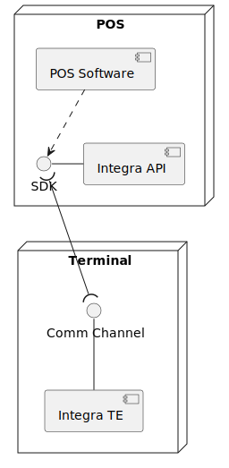
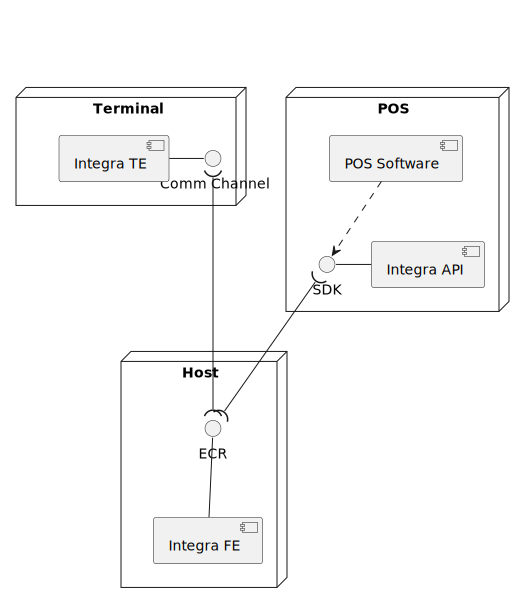
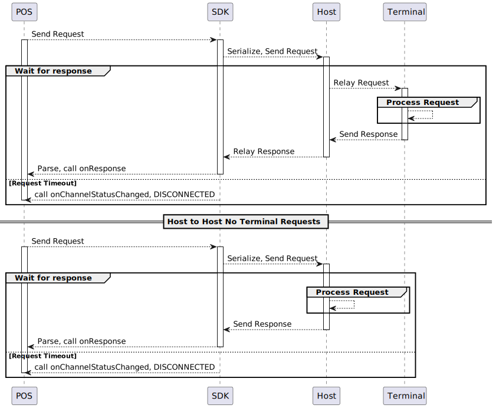
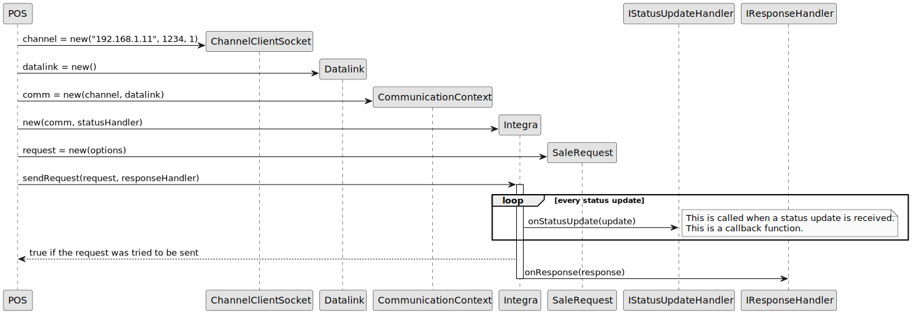

Introduction
Welcome to Integra API! The main goal of this API is to ease the communication between the terminal and POS, allowing terminal control and management. It is available in Java, C++ and .NET.
This API is targeted to the POS developers who want to integrate with Planet Payment payment equipment.
Architecture
The POS has the Integra API to be able to connect to the terminal.

Alternatively, the POS may connect using a Host-to-Host (H2H) configuration without a direct connection to the terminal.


Complete use case
using namespace PlanetPayment;
IChannel *myChannel = new ChannelSocketClient("192.168.1.90", 1234, 30);
IDatalink *myDatalink = new DatalinkStxEtxCrcSendAckSeqCounter();
CommunicationContext *myContext = new CommunicationContext(myChannel, myDatalink);
StatusHandler *statusHandler = new StatusHandler(); //StatusHandler is a class which implements IStatusUpdateHandler, IResponseHandler and IChannelStatusListener methods
myIntegra = new Integra(myContext, statusHandler, statusHandler);
myIntegra->setChannelStatusListener(statusHandler);
std::map<std::string, std::string> myOptions;
myOptions.insert(std::pair<std::string, std::string>(IRequest::TAG_AMOUNT, "20"));
myOptions.insert(std::pair<std::string, std::string>(IRequest::TAG_REQUESTERTRANSREFNUM, "20200407-000"));
int nSequenceNumber;
IRequest *myRequest = new SaleRequest(myOptions);
ErrorType error = myIntegra->sendRequest(myRequest, nSequenceNumber);
IChannel myChannel = new ChannelSocketClient("192.168.1.90", 1234, 30);
IDatalink myDatalink = new DatalinkStxEtxCrcSendAckSeqCounter();
CommunicationContext myContext = new CommunicationContext(myChannel, myDatalink);
Integra myIntegra = new Integra(myContext, StatusUpdate -> {
Map<String, String> statusDetails = StatusUpdate.getOptions();
if (statusDetails != null) {
//Get status options
}
}, Response -> {
Map<String, String> responseDetails = Response.getOptions();
if (responseDetails != null) {
//Get response options
}
});
myIntegra.setChannelStatusListener(channelStatus -> {
//Channel status events
});
Map<String, String> mySaleOptions = new HashMap<String, String>();
mySaleOptions.put(IRequest.TAG_AMOUNT, "20");
mySaleOptions.put(IRequest.TAG_REQUESTERTRANSREFNUM, "20200407-000");
IRequest myRequest = new SaleRequest(mySaleOptions);
AtomicInteger mySequenceNumber = new AtomicInteger();
ErrorType error = myIntegra.sendRequest(myRequest, mySequenceNumber);
using PlanetPaymentSDK;
IChannel myChannel = new ChannelSocketClient("192.168.1.90", 1234, 30);
IDatalink myDatalink = new DatalinkStxEtxCrcSendAckSeqCounter();
CommunicationContext myContext = new CommunicationContext(myChannel, myDatalink);
myIntegra = new Integra(myContext);
myIntegra.statusUpdateHandler += statusHandler;
myIntegra.responseUpdateHandler += responseHandler;
myIntegra.channelStatusListener += channelStatusListener;
Dictionary<string, string> myOptions = new Dictionary<string, string>
{
{ IRequest.TAG_AMOUNT, "20" },
{ IRequest.TAG_REQUESTERTRANSREFNUM, "20200407-000"}
};
int nSequenceNumber;
IRequest myRequest = new SaleRequest(myOptions);
ErrorType error = myIntegra.sendRequest(myRequest, out nSequenceNumber);
let channel:PPIChannel = PPChannelSocketClient.init(host: "192.168.1.90", port: 1234, timeout: 30)
let datalink:PPIDatalink = PPDatalinkStxEtxCrcSendAckSeqCounter.init()
let communicationContext = PPCommunicationContext.init(channel: channel, andDatalink: datalink)
integra = PPIntegra.init(communicationContext: communicationContext)
//This class is expected to implement the following delegates: PPIStatusUpdateHandler, PPIResponseHandler and PPIChannelStatusListener
integra.statusHandler = self
integra.responseHandler = self
integra.channelStatusListener = self
let options = [
PPIRequestTags.TAG_AMOUNT: "20",
PPIRequestTags.TAG_REQUESTERTRANSREFNUM: "20200407-000"
]
let saleRequest = PPSaleRequest.init(options: options)
var sequenceNumber:Int32 = 0
let error = integra.send(saleRequest, withSequenceNumber: &sequenceNumber)
NSObject<PPIChannel> *channel = [[PPChannelSocketClient alloc] initWithHost:@"192.168.1.90" port:1234 timeout:30];
NSObject<PPIDatalink> *datalink = [[PPDatalink alloc] init];
PPCommunicationContext *communicationContext = [[PPCommunicationContext alloc] initWithChannel:channel andDatalink:datalink];
PPIntegra *integra = [[PPIntegra alloc] initWithCommunicationContext:communicationContext];
integra.statusHandler = self;
integra.responseHandler = self;
integra.channelStatusListener = self;
NSDictionary *options = @{
TAG_AMOUNT: @"20",
TAG_REQUESTERTRANSREFNUM: @"20200407-000"
};
PPIRequest *saleRequest = [[PPSaleRequest alloc] initWithOptions:options];
int sequenceNumber = 0;
[integra sendRequest:saleRequest withSequenceNumber:&sequenceNumber];
The entry point for this SDK is the Integra class. Integra requires a CommunicationContext, which encapsulates the information needed to reach and connect to the terminal. Additionally, Integra also requires callbacks to be set to receive terminal status, responses and connection status updates. These callbacks are:
- IStatusUpdateHandler
- Is fired when the terminal sends status messages
- IResponseHandler
- Is fired when the terminal replies to a request
- IChannelStatusListener
- Is fired on communication channel events
With these in place, Integra is now ready to send requests to the terminal

Integra
Integra manages the communication to the terminal. Terminal requests are sent through Integra, terminal messages are parsed and the appropriate callbacks are flagged
Methods
Constructor
Integra *integra = new Integra(communicationContext, statusUpdateHandler, responseHandler);
Integra integra = new Integra(communicationContext, statusUpdateHandler, responseHandler);
Integra integra = new Integra(communicationContext);
let integra:PPIntegra = PPIntegra.init(communicationContext: communicationContext, with: statusUpdateHandler, andResponseHandler: responseHandler, andChannelStatusListener: channelStatusListener)
PPIntegra *integra = [PPIntegra alloc] initWithCommunicationContext:communicationContext withStatusUpdateHandler:statusUpdateHandler andResponseHandler:responseHandler andChannelStatusListener:channelStatusListener];
Creates an instance of Integra. Integra requires a CommunicationContext. Optionally, it can also receive a IStatusUpdateHandler and a IResponseHandler for status and responses callbacks. These can be later using the corresponding setter if not set in the constructor
| Parameter | Type | Description |
|---|---|---|
| communicationContext | CommunicationContext | An instance of a CommunicationContext to send/receive data from the terminal |
| statusUpdateHandler | IStatusUpdateHandler | The callback for terminal status messages |
| responseHandler | IResponseHandler | The callback for terminal response messages |
enableAutoReconnect
integra->enableAutoReconnect(enable);
integra.enableAutoReconnect(enable);
integra.AutoReconnect = enable;
integra.isAutoReconnectEnabled = enable
[integra enableAutoReconnect:enable];
Enables or disables the auto reconnect feature. If this feature is enabled, when the connection to the terminal has been interrupted the SDK will automatically attempt to re-establish the connection
| Parameter | Type | Description |
|---|---|---|
| enable | Boolean | Enable/Disable flag |
isAutoReconnectEnabled
integra->isAutoReconnectEnabled();
integra.isAutoReconnectEnabled();
integra.AutoReconnect;
integra.isAutoReconnectEnabled
integra.isAutoReconnectEnabled;
Checks if the auto reconnect feature is enabled or disabled
setStatusUpdateHandler
integra->setStatusUpdateHandler(statusUpdateHandler);
integra.setStatusUpdateHandler(statusUpdateHandler);
integra.statusUpdateHandler += statusHandler;
integra.statusHandler = statusUpdateHandler
[integra setStatusHandler:statusUpdateHandler];
Attaches or overrides the current terminal status listener
| Parameter | Type | Description |
|---|---|---|
| statusUpdateHandler | IStatusUpdateHandler | The callback for terminal status messages |
setResponseHandler
integra->setResponseHandler(responseHandler);
integra.setResponseHandler(responseHandler);
integra.responseUpdateHandler += responseHandler;
integra.responseHandler = responseHandler
[integra setResponseHandler:responseHandler];
Attaches or overrides the current terminal response message listener
| Parameter | Type | Description |
|---|---|---|
| responseHandler | IResponseHandler | The callback for terminal response messages |
setChannelStatusListener
integra->setChannelStatusListener(channelListener);
integra.setChannelStatusListener(channelListener);
integra.channelStatusListener += channelListener;
integra.channelStatusListener = channelListener
[integra setChannelStatusListener:channelListener];
Attaches or overrides the current terminal connection status listener
| Parameter | Type | Description |
|---|---|---|
| channelListener | IChannelStatusListener | The callback for terminal status messages |
sendRequest
int sequenceNumber;
ErrorType error = integra->sendRequest(request, sequenceNumber);
AtomicInteger sequenceNumber = new AtomicInteger();
ErrorType error = integra.sendRequest(request, sequenceNumber);
int sequenceNumber;
ErrorType error = integra.sendRequest(request, out sequenceNumber);
var sequenceNumber:Int32 = 0
let error:PPErrorType = integra.send(request: request, withSequenceNumber:&sequenceNumber)
int sequenceNumber;
PPErrorType error = [integra sendRequest:request withSequenceNumber:&sequenceNumber];
Sends a request to the terminal. If the request is sent successfully ErrorType SUCCESS will be returned and sequenceNumber will be set with that request's sequence number. When receiving terminal responses, you can check if the response sequenceNumber matches. Integra will start the associated CommunicationContext and will attempt to restore the connection if disconnected, up to a maximum of 1 minute or the specified timeout in CommunicationContext's Channel
| Parameter | Type | Description |
|---|---|---|
| request | IRequest | The request to send to the terminal |
| sequenceNumber | Integer | The sequence number used in the request (output variable) |
CommunicationContext
CommunicationContext holds the relevant instances to communicate directly with a terminal: A Communication's channel and a Datalink
Methods
Constructor
CommunicationContext *comContext = new CommunicationContext(channel, datalink);
CommunicationContext comContext = new CommunicationContext(channel, datalink);
CommunicationContext comContext = new CommunicationContext(channel, datalink);
let comContext:PPCommunicationContext = PPCommunicationContext.init(channel: channel, andDatalink: datalink)
PPCommunicationContext *comContext = [[PPCommunicationContext alloc] initWithChannel:channel andDatalink:datalink];
Creates an instance of CommunicationContext. A IChannel is required, as well as a IDatalink. The CommunicationContext connects directly to the terminal and sends/receives raw data, encoded by the Datalink.
| Parameter | Type | Description |
|---|---|---|
| channel | IChannel | The communication channel to be used to connect to the terminal (ChannelSocketClient, ChannelComPort...). This is required and may not be null |
| datalink | IDatalink | The datalink type to communicate with the terminal (Datalink, DatalinkStxEtcCrcSendAckSeqCounter...). This is required and may not be null |
start
comContext->start();
comContext.start();
comContext.start();
comContext.start()
[comContext start];
Starts the context and connects to the terminal. Integra will call this method if the terminal is not connected before Integra sendRequest is called
stop
comContext->stop();
comContext.stop();
comContext.stop();
comContext.stop()
[comContext stop];
Closes the connection to the terminal
isConnected
bool isConnected = comContext->isConnected();
boolean isConnected = comContext.isConnected();
bool isConnected = comContext.isConnected();
Bool isConnected = comContext.isConnected()
BOOL isConnected = [comContext isConnected()];
Checks if the terminal is connected
setShouldAsyncStart
comContext->setShouldAsyncStart(enable);
comContext.setShouldAsyncStart(enable);
comContext.AsyncStart = enable;
commContext.shouldAsyncStart = enable;
commContext.shouldAsyncStart = enable;
If True, this flag indicates that Integra will start this communication context in a background thread instead of the calling thread. Since the connection will be made asynchronously, one must take care to only attempt to send requests after a channel CONNECTED status has been received.
shouldAsyncStart
bool isAsyncStart = comContext->shouldAsyncStart();
boolean isAsyncStart = comContext.shouldAsyncStart();
bool isAsyncStart = comContext.AsyncStart;
Bool isAsyncStart = commContext.shouldAsyncStart;
BOOL isAsyncStart = commContext.shouldAsyncStart;
Returns the current flag value for async start.
send
ErrorType error = comContext->send(message, channelId);
ErrorType error = comContext.send(message, channelId);
ErrorType error = comContext.send(message, channelId);
let error:PPErrorType = commContext.send(message: message, onChannelId:channelId)
PPErrorType error = [commContext send:message onChannelId:channelId];
Sends raw data to the terminal. If the data is sent successfully ErrorType SUCCESS will be returned.
Handlers
IStatusUpdateHandler
void onStatusUpdate(StatusUpdate *statusUpdate);
void onStatusUpdate(StatusUpdate statusUpdate);
void onStatusUpdate(StatusUpdate statusUpdate);
func onStatusUpdate(statusUpdate: PPStatusUpdate?)
- (void) onStatusUpdate:(nullable PPStatusUpdate*)statusUpdate;
This interface contains a method to be called back on a Status update.
| Parameter | Type | Description |
|---|---|---|
| statusUpdate | StatusUpdate | The status update received |
IResponseHandler
void onResponse(Response *response);
void onResponse(Response response);
void onResponse(Response response);
func onResponse(response: PPResponse?)
- (void) onResponse:(nullable PPResponse*)response;
This interface contains a method to be called back when a response to the request is received.
| Parameter | Type | Description |
|---|---|---|
| response | Response | The response received |
IChannelStatusListener
void onChannelEvent(ChannelEventType nEventType);
void onChannelEvent(ChannelEvent nEventType);
void onChannelEvent(ChannelEvent nEventType);
func onChannelEvent(nEventType: PPChannelEvent?)
- (void) onChannelEvent:(nullable PPChannelEvent*)nEventType;
This interface contains a method to be called back when the channel fires an event
| Parameter | Type | Description |
|---|---|---|
| eventType | ChannelEvent | The channel event received |
Channels
Channels represent a method of connecting to a terminal and exchange raw data. For example, ChannelComPort exchanges data over a serial port, ChannelSocketClient exchanges data through a TCP connection. Channels can be instantiated directly or via the ChannelFactory singleton.
IChannel
IChannel is a generic interface common to all channels
ChannelSocketClient
IChannel *channel = new ChannelSocketClient(host, port, timeout);
//Via ChannelFactory
std::map<std::string, std::string> channelOptions;
channelOptions.insert(std::pair<std::string, std::string>(ChannelFactory::KEY_CHANNEL, ChannelSocketClient::CHANNEL_TYPE_VALUE));
channelOptions.insert(std::pair<std::string, std::string>(ChannelFactory::KEY_HOST, host));
channelOptions.insert(std::pair<std::string, std::string>(ChannelFactory::KEY_PORT, port));
channelOptions.insert(std::pair<std::string, std::string>(ChannelFactory::KEY_TIMEOUT, timeout));
IChannel *channel = ChannelFactory::getChannel(channelOptions);
IChannel channel = new ChannelSocketClient(host, port, timeout);
//Via ChannelFactory
Map<String, String> channelOptions = new HashMap<String, String>();
channelOptions.put(ChannelFactory.KEY_CHANNEL, ChannelSocketClient.CHANNEL_TYPE_VALUE);
channelOptions.put(ChannelFactory.KEY_IP, host);
channelOptions.put(ChannelFactory.KEY_PORT, port);
channelOptions.put(ChannelFactory.KEY_TIMEOUT, timeout);
IChannel channnel = ChannelFactory.getChannel(channelOptions);
IChannel channel = new ChannelSocketClient(host, port, timeout);
// Via ChannelFactory
Dictionary<string, string> channelOptions = new Dictionary<string, string>
{
{ ChannelFactory.KEY_CHANNEL, ChannelSocketClient.CHANNEL_TYPE_VALUE },
{ ChannelFactory.KEY_HOST, host },
{ ChannelFactory.KEY_PORT, port },
{ ChannelFactory.KEY_TIMEOUT, timeout }
};
IChannel channel = ChannelFactory.getChannel(channelOptions);
let channel:PPIChannel = PPChannelSocketClient.init(host: host, port: port, timeout: timeout)
//Via ChannelFactory
var channelOptions:Dictionary = [String: String]()
channelOptions.updateValue(PPChannelSocketClient.channel_TYPE_VALUE(), forKey: PPChannelFactory.key_CHANNEL())
channelOptions.updateValue(host, forKey: PPChannelFactory.key_IP())
channelOptions.updateValue(port, forKey: PPChannelFactory.key_PORT())
channelOptions.updateValue(timeout, forKey: PPChannelFactory.key_TIMEOUT())
let channel:PPIChannel = PPChannelFactory.getChannel(channelOptions)
id<PPIChannel> channel = [[PPChannelSocketClient alloc] initWithHost:host port:port timeout:timeout];
//Via ChannelFactory
NSDictionary *channelOptions = @{
[PPChannelFactory KEY_CHANNEL]: [PPChannelSocketClient CHANNEL_TYPE_VALUE],
[PPChannelFactory KEY_IP]: host,
[PPChannelFactory KEY_PORT]: port,
[PPChannelFactory KEY_TIMEOUT]: timeout
};
id<PPIChannel> channel = [PPChannelFactory getChannel:channelOptions];
This channel connects via a TCP/IP port to a terminal. There is no functional difference between KEY_HOST and KEY_IP; both will perform a DNS lookup if the supplied address is not an IPv4 address. In case both are present, KEY_HOST takes precedence
Constructor
| Parameter | Type | Description |
|---|---|---|
| host | String | The host/ip of the terminal |
| port | Integer | The port of the requester service is listening on the terminal |
| timeout | Integer | The maximum allowed timeout for this channel |
ChannelSocketClientSSL
IChannel *channel = new ChannelSocketClientSSL(host, port, timeout);
//Via ChannelFactory
std::map<std::string, std::string> channelOptions;
channelOptions.insert(std::pair<std::string, std::string>(ChannelFactory::KEY_CHANNEL, ChannelSocketClientSSL::CHANNEL_TYPE_VALUE));
channelOptions.insert(std::pair<std::string, std::string>(ChannelFactory::KEY_HOST, host));
channelOptions.insert(std::pair<std::string, std::string>(ChannelFactory::KEY_PORT, port));
channelOptions.insert(std::pair<std::string, std::string>(ChannelFactory::KEY_TIMEOUT, timeout));
IChannel *channel = ChannelFactory::getChannel(channelOptions);
IChannel channel = new ChannelSocketClientSSL(host, port, timeout);
//Via ChannelFactory
Map<String, String> channelOptions = new HashMap<String, String>();
channelOptions.put(ChannelFactory.KEY_CHANNEL, ChannelSocketClientSSL.CHANNEL_TYPE_VALUE));
channelOptions.put(ChannelFactory.KEY_IP, host));
channelOptions.put(ChannelFactory.KEY_PORT, port));
channelOptions.put(ChannelFactory.KEY_TIMEOUT, timeout));
IChannel channnel = ChannelFactory.getChannel(channelOptions);
IChannel channel = new ChannelSocketClientSSL(host, port, timeout);
// Via ChannelFactory
Dictionary<string, string> channelOptions = new Dictionary<string, string>
{
{ ChannelFactory.KEY_CHANNEL, ChannelSocketClientSSL.CHANNEL_TYPE_VALUE },
{ ChannelFactory.KEY_HOST, host },
{ ChannelFactory.KEY_PORT, port },
{ ChannelFactory.KEY_TIMEOUT, timeout }
};
IChannel channel = ChannelFactory.getChannel(channelOptions);
let channel:PPIChannel = PPChannelSocketClientSSL.init(host: host, port: port, timeout: timeout)
//Via ChannelFactory
var channelOptions:Dictionary = [String: String]()
channelOptions.updateValue(PPChannelSocketClientSSL.channel_TYPE_VALUE(), forKey: PPChannelFactory.key_CHANNEL())
channelOptions.updateValue(host, forKey: PPChannelFactory.key_IP())
channelOptions.updateValue(port, forKey: PPChannelFactory.key_PORT())
channelOptions.updateValue(timeout, forKey: PPChannelFactory.key_TIMEOUT())
let channel:PPIChannel = PPChannelFactory.getChannel(channelOptions)
id<PPIChannel> channel = [[PPChannelSocketClientSSL alloc] initWithHost:host port:port timeout:timeout];
//Via ChannelFactory
NSDictionary *channelOptions = @{
[PPChannelFactory KEY_CHANNEL]: [PPChannelSocketClientSSL CHANNEL_TYPE_VALUE],
[PPChannelFactory KEY_IP]: host,
[PPChannelFactory KEY_PORT]: port,
[PPChannelFactory KEY_TIMEOUT]: timeout
};
id<PPIChannel> channel = [PPChannelFactory getChannel:channelOptions];
This channel connects via a SSL wrapped TCP/IP port. There is no functional difference between KEY_HOST and KEY_IP; both will perform a DNS lookup if the supplied address is not an IPv4 address. In case both are present, KEY_HOST takes precedence
Constructor
| Parameter | Type | Description |
|---|---|---|
| host | String | The host/ip of the terminal |
| port | Integer | The port of the requester service is listening on the terminal |
| timeout | Integer | The maximum allowed timeout for this channel |
Methods
setProtocols
ChannelSocketClientSSL *channel = new ChannelSocketClientSSL(host, port, timeout);
channel->setProtocols(protocolList);
ChannelSocketClientSSL channel = new ChannelSocketClientSSL(host, port, timeout);
channel.setProtocols(protocolList);
ChannelSocketClientSSL channel = new ChannelSocketClientSSL(host, port, timeout);
channel.setProtocols(protocolList);
let channel:PPChannelSocketClientSSL = PPChannelSocketClientSSL.init(host: host, port: port, timeout: timeout)
channel.setProtocols(protocolList: protocolList)
PPChannelSocketClientSSL* channel = [[PPChannelSocketClientSSL alloc] initWithHost:host port:port timeout:timeout];
[channel setProtocols:protocolList];
Configures the protocol list allowed for this connection. Known protocols are: SSLv3, TLSv1(.0), TLSv1.1, TLSv1.2, TLSv1.3 Newer, more secure protocols take priority over older, less secure protocols
| Parameter | Type | Description |
|---|---|---|
| protocolList | String | A list (':' separated) of the allowed SSL protocols |
setCiphers
ChannelSocketClientSSL *channel = new ChannelSocketClientSSL(host, port, timeout);
channel->setCiphers(cipherList);
ChannelSocketClientSSL channel = new ChannelSocketClientSSL(host, port, timeout);
channel.setCiphers(cipherList);
ChannelSocketClientSSL channel = new ChannelSocketClientSSL(host, port, timeout);
channel.setCiphers(cipherList);
let channel:PPChannelSocketClientSSL = PPChannelSocketClientSSL.init(host: host, port: port, timeout: timeout)
channel.setCiphers(cipherList: cipherList)
PPChannelSocketClientSSL* channel = [[PPChannelSocketClientSSL alloc] initWithHost:host port:port timeout:timeout];
[channel setCiphers:cipherList];
Configures the cipher list allowed for this connection. Values are separated by the ':' character. You can set prebuilt cipher suites ('HIGH', 'AES128:AES256:AES'), or set any individual cipher ('ECDHE-RSA-AES128-SHA256:ECDHE-RSA-AES128-SHA:DHE-RSA-AES128-GCM-SHA256') By default, the channel pre-selects ciphers know to work with H2H communication
| Parameter | Type | Description |
|---|---|---|
| cipherList | String | A list (':' separated) of the allowed ciphers, or ciphersuites |
setCertificate
ChannelSocketClientSSL *channel = new ChannelSocketClientSSL(host, port, timeout);
channel->setCertificate(certificateFilePath);
ChannelSocketClientSSL channel = new ChannelSocketClientSSL(host, port, timeout);
channel.setCertificate(certificateFilePath);
ChannelSocketClientSSL channel = new ChannelSocketClientSSL(host, port, timeout);
channel.setCertificate(certificateFilePath);
let channel:PPChannelSocketClientSSL = PPChannelSocketClientSSL.init(host: host, port: port, timeout: timeout)
channel.setCertificate(certificate: certificateFilePath)
PPChannelSocketClientSSL* channel = [[PPChannelSocketClientSSL alloc] initWithHost:host port:port timeout:timeout];
[channel setCertificate:certificateFilePath];
Sets the path to a certificate file which contains public and private key information sent during SSL challenge File must be in PEM format
| Parameter | Type | Description |
|---|---|---|
| certificateFilePath | String | The path to a file containing public and private key information |
setPrivateKeyPassword
ChannelSocketClientSSL *channel = new ChannelSocketClientSSL(host, port, timeout);
channel->setPrivateKeyPassword(password);
ChannelSocketClientSSL channel = new ChannelSocketClientSSL(host, port, timeout);
channel.setPrivateKeyPassword(password);
ChannelSocketClientSSL channel = new ChannelSocketClientSSL(host, port, timeout);
channel.setPrivateKeyPassword(password);
let channel:PPChannelSocketClientSSL = PPChannelSocketClientSSL.init(host: host, port: port, timeout: timeout)
channel.setPrivateKeyPassword(password: password)
PPChannelSocketClientSSL* channel = [[PPChannelSocketClientSSL alloc] initWithHost:host port:port timeout:timeout];
[channel setPrivateKeyPassword:password];
If the supplied private key is password protected, this sets the password used to decrypt it
| Parameter | Type | Description |
|---|---|---|
| password | String | The private key's password |
setTrustStore
ChannelSocketClientSSL *channel = new ChannelSocketClientSSL(host, port, timeout);
channel->setTrustStore(CAFilePath);
ChannelSocketClientSSL channel = new ChannelSocketClientSSL(host, port, timeout);
channel.setTrustStore(CAFilePath);
ChannelSocketClientSSL channel = new ChannelSocketClientSSL(host, port, timeout);
channel.setTrustStore(CAFilePath);
let channel:PPChannelSocketClientSSL = PPChannelSocketClientSSL.init(host: host, port: port, timeout: timeout)
channel.setTrustStore(trustStore: CAFilePath)
PPChannelSocketClientSSL* channel = [[PPChannelSocketClientSSL alloc] initWithHost:host port:port timeout:timeout];
[channel setTrustStore:CAFilePath];
Sets the path to a chain of trust file which authenticates the certificates used during SSL challenge. File myst be in PEM format
| Parameter | Type | Description |
|---|---|---|
| CAFilePath | String | The path to a file containing the chain of trust for the certificates used |
ChannelSocketClientHTTP
IChannel *channel = new ChannelSocketClientHTTP(host, port, timeout);
//Via ChannelFactory
std::map<std::string, std::string> channelOptions;
channelOptions.insert(std::pair<std::string, std::string>(ChannelFactory::KEY_CHANNEL, ChannelSocketClientHTTP::CHANNEL_TYPE_VALUE));
channelOptions.insert(std::pair<std::string, std::string>(ChannelFactory::KEY_HOST, host));
channelOptions.insert(std::pair<std::string, std::string>(ChannelFactory::KEY_PORT, port));
channelOptions.insert(std::pair<std::string, std::string>(ChannelFactory::KEY_TIMEOUT, timeout));
IChannel *channel = ChannelFactory::getChannel(channelOptions);
IChannel channel = new ChannelSocketClientHTTP(host, port, timeout);
//Via ChannelFactory
Map<String, String> channelOptions = new HashMap<String, String>();
channelOptions.put(ChannelFactory.KEY_CHANNEL, ChannelSocketClientHTTP.CHANNEL_TYPE_VALUE);
channelOptions.put(ChannelFactory.KEY_IP, host);
channelOptions.put(ChannelFactory.KEY_PORT, port);
channelOptions.put(ChannelFactory.KEY_TIMEOUT, timeout);
IChannel channnel = ChannelFactory.getChannel(channelOptions);
IChannel channel = new ChannelSocketClientHTTP(host, port, timeout);
// Via ChannelFactory
Dictionary<string, string> channelOptions = new Dictionary<string, string>
{
{ ChannelFactory.KEY_CHANNEL, ChannelSocketClientHTTP.CHANNEL_TYPE_VALUE },
{ ChannelFactory.KEY_HOST, host },
{ ChannelFactory.KEY_PORT, port },
{ ChannelFactory.KEY_TIMEOUT, timeout }
};
IChannel channel = ChannelFactory.getChannel(channelOptions);
let channel:PPIChannel = PPChannelSocketClientHTTP.init(host: host, port: port, timeout: timeout)
//Via ChannelFactory
var channelOptions:Dictionary = [String: String]()
channelOptions.updateValue(PPChannelSocketClientHTTP.channel_TYPE_VALUE(), forKey: PPChannelFactory.key_CHANNEL())
channelOptions.updateValue(host, forKey: PPChannelFactory.key_IP())
channelOptions.updateValue(port, forKey: PPChannelFactory.key_PORT())
channelOptions.updateValue(timeout, forKey: PPChannelFactory.key_TIMEOUT())
let channel:PPIChannel = PPChannelFactory.getChannel(channelOptions)
id<PPIChannel> channel = [[PPChannelSocketClientHTTP alloc] initWithHost:host port:port timeout:timeout];
//Via ChannelFactory
NSDictionary *channelOptions = @{
[PPChannelFactory KEY_CHANNEL]: [PPChannelSocketClientHTTP CHANNEL_TYPE_VALUE],
[PPChannelFactory KEY_IP]: host,
[PPChannelFactory KEY_PORT]: port,
[PPChannelFactory KEY_TIMEOUT]: timeout
};
id<PPIChannel> channel = [PPChannelFactory getChannel:channelOptions];
This channel uses the HTTP protocol and connects via a TCP/IP port to a terminal. There is no functional difference between KEY_HOST and KEY_IP; both will perform a DNS lookup if the supplied address is not an IPv4 address. In case both are present, KEY_HOST takes precedence
Constructor
| Parameter | Type | Description |
|---|---|---|
| host | String | The host/ip of the terminal |
| port | Integer | The port of the HTTP requester service running on the terminal |
| timeout | Integer | The maximum allowed timeout for this channel |
Methods
setHTTPHeaderMethod
ChannelSocketClientHTTP *channel = new ChannelSocketClientHTTP(host, port, timeout);
channel->setHTTPHeaderMethod(HTTPMethod);
ChannelSocketClientHTTP channel = new ChannelSocketClientHTTP(host, port, timeout);
channel.setHTTPHeaderMethod(HTTPMethod);
ChannelSocketClientHTTP channel = new ChannelSocketClientHTTP(host, port, timeout);
channel.setHTTPHeaderMethod(HTTPMethod);
let channel:PPChannelSocketClientHTTP = PPChannelSocketClientHTTP.init(host: host, port: port, timeout: timeout)
channel.headerMethod = HTTPMethod
PPChannelSocketClientHTTP* channel = [[PPChannelSocketClientHTTP alloc] initWithHost:host port:port timeout:timeout];
[channel setHeaderMethod:HTTPMethod];
Sets the HTTP header method for requests made using this channel. Defaults to POST.
| Parameter | Type | Description |
|---|---|---|
| HTTPMethod | String | The HTTP method to use, ex: POST, GET |
getHTTPHeaderMethod
ChannelSocketClientHTTP *channel = new ChannelSocketClientHTTP(host, port, timeout);
channel->getHTTPHeaderMethod();
ChannelSocketClientHTTP channel = new ChannelSocketClientHTTP(host, port, timeout);
channel.getHTTPHeaderMethod();
ChannelSocketClientHTTP channel = new ChannelSocketClientHTTP(host, port, timeout);
channel.getHTTPHeaderMethod();
let channel:PPChannelSocketClientHTTP = PPChannelSocketClientHTTP.init(host: host, port: port, timeout: timeout)
channel.headerMethod
PPChannelSocketClientHTTP* channel = [[PPChannelSocketClientHTTP alloc] initWithHost:host port:port timeout:timeout];
[channel getHeaderMethod];
Returns the current HTTP header method set for this channel
ChannelSocketClientHTTPS
IChannel *channel = new ChannelSocketClientHTTPS(host, port, timeout);
//Via ChannelFactory
std::map<std::string, std::string> channelOptions;
channelOptions.insert(std::pair<std::string, std::string>(ChannelFactory::KEY_CHANNEL, ChannelSocketClientHTTPS::CHANNEL_TYPE_VALUE));
channelOptions.insert(std::pair<std::string, std::string>(ChannelFactory::KEY_HOST, host));
channelOptions.insert(std::pair<std::string, std::string>(ChannelFactory::KEY_PORT, port));
channelOptions.insert(std::pair<std::string, std::string>(ChannelFactory::KEY_TIMEOUT, timeout));
IChannel *channel = ChannelFactory::getChannel(channelOptions);
IChannel channel = new ChannelSocketClientHTTPS(host, port, timeout);
//Via ChannelFactory
Map<String, String> channelOptions = new HashMap<String, String>();
channelOptions.put(ChannelFactory.KEY_CHANNEL, ChannelSocketClientHTTPS.CHANNEL_TYPE_VALUE);
channelOptions.put(ChannelFactory.KEY_IP, host);
channelOptions.put(ChannelFactory.KEY_PORT, port);
channelOptions.put(ChannelFactory.KEY_TIMEOUT, timeout);
IChannel channnel = ChannelFactory.getChannel(channelOptions);
IChannel channel = new ChannelSocketClientHTTPS(host, port, timeout);
// Via ChannelFactory
Dictionary<string, string> channelOptions = new Dictionary<string, string>
{
{ ChannelFactory.KEY_CHANNEL, ChannelSocketClientHTTPS.CHANNEL_TYPE_VALUE },
{ ChannelFactory.KEY_HOST, host },
{ ChannelFactory.KEY_PORT, port },
{ ChannelFactory.KEY_TIMEOUT, timeout }
};
IChannel channel = ChannelFactory.getChannel(channelOptions);
let channel:PPIChannel = PPChannelSocketClientHTTPS.init(host: host, port: port, timeout: timeout)
//Via ChannelFactory
var channelOptions:Dictionary = [String: String]()
channelOptions.updateValue(PPChannelSocketClientHTTPS.channel_TYPE_VALUE(), forKey: PPChannelFactory.key_CHANNEL())
channelOptions.updateValue(host, forKey: PPChannelFactory.key_IP())
channelOptions.updateValue(port, forKey: PPChannelFactory.key_PORT())
channelOptions.updateValue(timeout, forKey: PPChannelFactory.key_TIMEOUT())
let channel:PPIChannel = PPChannelFactory.getChannel(channelOptions)
id<PPIChannel> channel = [[PPChannelSocketClientHTTPS alloc] initWithHost:host port:port timeout:timeout];
//Via ChannelFactory
NSDictionary *channelOptions = @{
[PPChannelFactory KEY_CHANNEL]: [PPChannelSocketClientHTTPS CHANNEL_TYPE_VALUE],
[PPChannelFactory KEY_IP]: host,
[PPChannelFactory KEY_PORT]: port,
[PPChannelFactory KEY_TIMEOUT]: timeout
};
id<PPIChannel> channel = [PPChannelFactory getChannel:channelOptions];
This channel uses the HTTP protocol and connects via a SSL wrapped TCP/IP port to a terminal. There is no functional difference between KEY_HOST and KEY_IP; both will perform a DNS lookup if the supplied address is not an IPv4 address. In case both are present, KEY_HOST takes precedence
Constructor
| Parameter | Type | Description |
|---|---|---|
| host | String | The host/ip of the terminal |
| port | Integer | The port of the HTTP requester service running on the terminal |
| timeout | Integer | The maximum allowed timeout for this channel |
Methods
setHTTPHeaderMethod
ChannelSocketClientHTTPS *channel = new ChannelSocketClientHTTPS(host, port, timeout);
channel->setHTTPHeaderMethod(HTTPMethod);
ChannelSocketClientHTTPS channel = new ChannelSocketClientHTTPS(host, port, timeout);
channel.setHTTPHeaderMethod(HTTPMethod);
ChannelSocketClientHTTPS channel = new ChannelSocketClientHTTPS(host, port, timeout);
channel.setHTTPHeaderMethod(HTTPMethod);
let channel:PPChannelSocketClientHTTPS = PPChannelSocketClientHTTPS.init(host: host, port: port, timeout: timeout)
channel.headerMethod = HTTPMethod
PPChannelSocketClientHTTPS* channel = [[PPChannelSocketClientHTTPS alloc] initWithHost:host port:port timeout:timeout];
[channel setHeaderMethod:HTTPMethod];
Sets the HTTP header method for requests made using this channel. Defaults to POST.
| Parameter | Type | Description |
|---|---|---|
| HTTPMethod | String | The HTTP method to use, ex: POST, GET |
getHTTPHeaderMethod
ChannelSocketClientHTTPS *channel = new ChannelSocketClientHTTPS(host, port, timeout);
channel->getHTTPHeaderMethod();
ChannelSocketClientHTTPS channel = new ChannelSocketClientHTTPS(host, port, timeout);
channel.getHTTPHeaderMethod();
ChannelSocketClientHTTPS channel = new ChannelSocketClientHTTPS(host, port, timeout);
channel.getHTTPHeaderMethod();
let channel:PPChannelSocketClientHTTPS = PPChannelSocketClientHTTPS.init(host: host, port: port, timeout: timeout)
channel.headerMethod
PPChannelSocketClientHTTPS* channel = [[PPChannelSocketClientHTTPS alloc] initWithHost:host port:port timeout:timeout];
[channel getHeaderMethod];
Returns the current HTTP header method set for this channel Defaults to POST.
setProtocols
ChannelSocketClientHTTPS *channel = new ChannelSocketClientHTTPS(host, port, timeout);
channel->setProtocols(protocolList);
ChannelSocketClientHTTPS channel = new ChannelSocketClientHTTPS(host, port, timeout);
channel.setProtocols(protocolList);
ChannelSocketClientHTTPS channel = new ChannelSocketClientHTTPS(host, port, timeout);
channel.setProtocols(protocolList);
let channel:PPChannelSocketClientHTTPS = PPChannelSocketClientHTTPS.init(host: host, port: port, timeout: timeout)
channel.setProtocols(protocolList: protocolList)
PPChannelSocketClientHTTPS* channel = [[PPChannelSocketClientHTTPS alloc] initWithHost:host port:port timeout:timeout];
[channel setProtocols:protocolList];
Configures the protocol list allowed for this connection. Known protocols are: SSLv3, TLSv1(.0), TLSv1.1, TLSv1.2, TLSv1.3 Newer, more secure protocols take priority over older, less secure protocols
| Parameter | Type | Description |
|---|---|---|
| protocolList | String | A list (':' separated) of the allowed SSL protocols |
setCiphers
ChannelSocketClientHTTPS *channel = new ChannelSocketClientHTTPS(host, port, timeout);
channel->setCiphers(cipherList);
ChannelSocketClientHTTPS channel = new ChannelSocketClientHTTPS(host, port, timeout);
channel.setCiphers(cipherList);
ChannelSocketClientHTTPS channel = new ChannelSocketClientHTTPS(host, port, timeout);
channel.setCiphers(cipherList);
let channel:PPChannelSocketClientHTTPS = PPChannelSocketClientHTTPS.init(host: host, port: port, timeout: timeout)
channel.setCiphers(cipherList: cipherList)
PPChannelSocketClientHTTPS* channel = [[PPChannelSocketClientHTTPS alloc] initWithHost:host port:port timeout:timeout];
[channel setCiphers:cipherList];
Configures the cipher list allowed for this connection. Values are separated by the ':' character. You can set prebuilt cipher suites ('HIGH', 'AES128:AES256:AES'), or set any individual cipher ('ECDHE-RSA-AES128-SHA256:ECDHE-RSA-AES128-SHA:DHE-RSA-AES128-GCM-SHA256') By default, the channel pre-selects ciphers know to work with H2H communication
| Parameter | Type | Description |
|---|---|---|
| cipherList | String | A list (':' separated) of the allowed ciphers, or ciphersuites |
setCertificate
ChannelSocketClientHTTPS *channel = new ChannelSocketClientHTTPS(host, port, timeout);
channel->setCertificate(certificateFilePath);
ChannelSocketClientHTTPS channel = new ChannelSocketClientHTTPS(host, port, timeout);
channel.setCertificate(certificateFilePath);
ChannelSocketClientHTTPS channel = new ChannelSocketClientHTTPS(host, port, timeout);
channel.setCertificate(certificateFilePath);
let channel:PPChannelSocketClientHTTPS = PPChannelSocketClientHTTPS.init(host: host, port: port, timeout: timeout)
channel.setCertificate(certificate: certificateFilePath)
PPChannelSocketClientHTTPS* channel = [[PPChannelSocketClientHTTPS alloc] initWithHost:host port:port timeout:timeout];
[channel setCertificate:certificateFilePath];
Sets the path to a certificate file which contains public and private key information sent during SSL challenge File must be in PEM format
| Parameter | Type | Description |
|---|---|---|
| certificateFilePath | String | The path to a file containing public and private key information |
setPrivateKeyPassword
ChannelSocketClientHTTPS *channel = new ChannelSocketClientHTTPS(host, port, timeout);
channel->setPrivateKeyPassword(password);
ChannelSocketClientHTTPS channel = new ChannelSocketClientHTTPS(host, port, timeout);
channel.setPrivateKeyPassword(password);
ChannelSocketClientHTTPS channel = new ChannelSocketClientHTTPS(host, port, timeout);
channel.setPrivateKeyPassword(password);
let channel:PPChannelSocketClientHTTPS = PPChannelSocketClientHTTPS.init(host: host, port: port, timeout: timeout)
channel.setPrivateKeyPassword(password: password)
PPChannelSocketClientHTTPS* channel = [[PPChannelSocketClientHTTPS alloc] initWithHost:host port:port timeout:timeout];
[channel setPrivateKeyPassword:password];
If the supplied private key is password protected, this sets the password used to decrypt it
| Parameter | Type | Description |
|---|---|---|
| password | String | The private key's password |
setTrustStore
ChannelSocketClientHTTPS *channel = new ChannelSocketClientHTTPS(host, port, timeout);
channel->setTrustStore(CAFilePath);
ChannelSocketClientHTTPS channel = new ChannelSocketClientHTTPS(host, port, timeout);
channel.setTrustStore(CAFilePath);
ChannelSocketClientHTTPS channel = new ChannelSocketClientHTTPS(host, port, timeout);
channel.setTrustStore(CAFilePath);
let channel:PPChannelSocketClientHTTPS = PPChannelSocketClientHTTPS.init(host: host, port: port, timeout: timeout)
channel.setTrustStore(trustStore: CAFilePath)
PPChannelSocketClientHTTPS* channel = [[PPChannelSocketClientHTTPS alloc] initWithHost:host port:port timeout:timeout];
[channel setTrustStore:CAFilePath];
Sets the path to a chain of trust file which authenticates the certificates used during SSL challenge. File myst be in PEM format
| Parameter | Type | Description |
|---|---|---|
| CAFilePath | String | The path to a file containing the chain of trust for the certificates used |
ChannelComPort
IChannel *channel = new ChannelComPort(comport, baudrate, databits, stopbits, parity, flowcontrol, timeout);
//Via ChannelFactory
std::map<std::string, std::string> channelOptions;
channelOptions.insert(std::pair<std::string, std::string>(ChannelFactory::KEY_CHANNEL, ChannelComPort::CHANNEL_TYPE_VALUE));
channelOptions.insert(std::pair<std::string, std::string>(ChannelFactory::KEY_COMPORT, comport));
channelOptions.insert(std::pair<std::string, std::string>(ChannelFactory::KEY_BAUD_RATE, baudrate));
channelOptions.insert(std::pair<std::string, std::string>(ChannelFactory::KEY_DATA_BITS, databits));
channelOptions.insert(std::pair<std::string, std::string>(ChannelFactory::KEY_STOP_BITS, stopbits));
channelOptions.insert(std::pair<std::string, std::string>(ChannelFactory::KEY_PARITY, parity));
channelOptions.insert(std::pair<std::string, std::string>(ChannelFactory::KEY_FLOW_CONTROL, flowcontrol));
channelOptions.insert(std::pair<std::string, std::string>(ChannelFactory::KEY_TIMEOUT, timeout));
IChannel *myChannel = ChannelFactory::getChannel(channelOptions);
IChannel channel = new ChannelComPort(comport, baudrate, databits, stopbits, parity, flowcontrol, timeout);
//Via ChannelFactory
Map<String, String> myChannelOptions = new HashMap<String, String>();
myChannelOptions.put(ChannelFactory.KEY_CHANNEL, ChannelComPort.CHANNEL_TYPE_VALUE);
myChannelOptions.put(ChannelFactory.KEY_COMPORT, comport);
myChannelOptions.put(ChannelFactory.KEY_BAUD_RATE, baudrate);
myChannelOptions.put(ChannelFactory.KEY_DATA_BITS, databits);
myChannelOptions.put(ChannelFactory.KEY_STOP_BITS, stopbits);
myChannelOptions.put(ChannelFactory.KEY_PARITY, parity);
myChannelOptions.put(ChannelFactory.KEY_FLOW_CONTROL, flowcontrol);
myChannelOptions.put(ChannelFactory.KEY_TIMEOUT, timeout);
IChannel channel = new ChannelComPort(comport, baudrate, databits, stopbits, parity, flowcontrol, timeout;
// Via ChannelFactory
Dictionary<string, string> channelOptions = new Dictionary<string, string>
{
{ ChannelFactory.KEY_CHANNEL, ChannelComPort.CHANNEL_TYPE_VALUE },
{ ChannelFactory.KEY_COMPORT, comport },
{ ChannelFactory.KEY_BAUD_RATE, baudrate },
{ ChannelFactory.KEY_DATA_BITS, databits },
{ ChannelFactory.KEY_STOP_BITS, stopbits },
{ ChannelFactory.KEY_PARITY, parity },
{ ChannelFactory.KEY_FLOW_CONTROL, flowcontrol },
{ ChannelFactory.KEY_TIMEOUT, timeout },
};
IChannel myChannel = ChannelFactory.getChannel(channelOptions);
//ChannelComPort is not available in Swift
//ChannelComPort is not available in Objective-C
This channel connects via a serial port to a terminal
Constructor
| Parameter | Type | Description |
|---|---|---|
| comport | String | The name of the comport adapter to use |
| baudrate | Integer | The speed of the comport adapter |
| databits | Integer | The dabits of the comport adapter |
| stopbits | Integer | The stopbits of the comport adapter |
| parity | String | The parity of the comport adapter. (N)one, (O)dd, (E)ven, (M)ark, (S)pace |
| flowcontrol | Integer | The flowcontrol of the comport adapter. 0 disables, 1 for software flowcontrol, 2 for hardware flowcontrol |
| timeout | Integer | The maximum allowed timeout for this channel |
Baudrate, databits, stopbits, parity and flowcontrol must match terminal configuration
ChannelSocketServer
IChannel *channel = new ChannelSocketServer(port, maxClients);
//Via ChannelFactory
std::map<std::string, std::string> channelOptions;
channelOptions.insert(std::pair<std::string, std::string>(ChannelFactory::KEY_CHANNEL, ChannelSocketServer::CHANNEL_TYPE_VALUE));
channelOptions.insert(std::pair<std::string, std::string>(ChannelFactory::KEY_PORT, port));
channelOptions.insert(std::pair<std::string, std::string>(ChannelFactory::KEY_MAX_CLIENTS, maxClients));
IChannel *myChannel = ChannelFactory::getChannel(channelOptions);
IChannel channel = new ChannelSocketServer(port, maxClients);
//Via ChannelFactory
Map<String, String> myChannelOptions = new HashMap<String, String>();
myChannelOptions.put(ChannelFactory.KEY_CHANNEL, ChannelSocketServer.CHANNEL_TYPE_VALUE);
myChannelOptions.put(ChannelFactory.KEY_PORT, port);
myChannelOptions.put(ChannelFactory.KEY_MAX_CLIENTS, maxClients);
IChannel channel = new ChannelSocketServer(port, maxClients);
// Via ChannelFactory
Dictionary<string, string> channelOptions = new Dictionary<string, string>
{
{ ChannelFactory.KEY_CHANNEL, ChannelSocketServer.CHANNEL_TYPE_VALUE },
{ ChannelFactory.KEY_PORT, port },
{ ChannelFactory.KEY_MAX_CLIENTS, maxClients },
};
IChannel myChannel = ChannelFactory.getChannel(channelOptions);
let channel:PPIChannel = PPChannelSocketServer.init(port: port, maxClients: maxClients)
//Via ChannelFactory
var channelOptions:Dictionary = [String: String]()
channelOptions.updateValue(PPChannelSocketServer.channel_TYPE_VALUE(), forKey: PPChannelFactory.key_CHANNEL())
channelOptions.updateValue(port, forKey: PPChannelFactory.key_PORT())
channelOptions.updateValue(maxClients, forKey: PPChannelFactory.key_MAX_CLIENTS())
let channel:PPIChannel = PPChannelFactory.getChannel(channelOptions)
id<PPIChannel> channel = [[PPChannelSocketServer alloc] initWithPort:port maxClients:maxClients];
//Via ChannelFactory
NSDictionary *channelOptions = @{
[PPChannelFactory KEY_CHANNEL]: [PPChannelSocketServer CHANNEL_TYPE_VALUE],
[PPChannelFactory KEY_PORT]: port,
[PPChannelFactory KEY_MAX_CLIENTS]: maxClients
};
id<PPIChannel> channel = [PPChannelFactory getChannel:channelOptions];
This channel binds to a local port and waits for client connections to it
Constructor
| Parameter | Type | Description |
|---|---|---|
| port | Integer | The port this server should bind to |
| maxClients | Integer | The maximum number of clients allowed to be connected at once to this server |
Special considerations
Since a server may have multiple endpoints connected to it, all server callbacks will have a key associated with it: KEY_CLIENT_ID. This key identifies the client that raised said event or message and is unique among all connected clients.
Likewise, to send a request add KEY_CLIENT_ID with the corresponding client ID you wish to send the message to.
ChannelFactory
The channel factory allows you obtain IChannel instances using a set of options. ChannelFactory KEY_CHANNEL is required. Other options may be required depending on which type of channel is selected.
ChannelType
The following channels are currently implemented:
| Parameter | Description |
|---|---|
| CHANNEL_CLIENT_SOCKET | This channel connects via a TCP/IP port |
| CHANNEL_CLIENT_SOCKET_SSL | This channel connects via a TCP/IP port wrapped by SSL encryption |
| CHANNEL_COMPORT | This channel connects via a serial port to a terminal |
Options
| Parameter | Description |
|---|---|
| KEY_CHANNEL | The channel name to use |
| KEY_HOST | Channel Host key. May be used in lieu of KEY_IP. Required for ChannelClientSocket |
| KEY_IP | Channel IP key. May be used in lieu of KEY_HOST. Required for ChannelClientSocket |
| KEY_PORT | Channel port key. Required for ChannelClientSocket |
| KEY_TIMEOUT | Channel timeout key |
| KEY_CIPHERS | Channel ciphers key. Required for ChannelClientSocketSSL |
| KEY_PROTOCOLS | Channel protocols key. Required for ChannelClientSocketSSL |
| KEY_KEYSTORE | Channel keystore key. Path to a file containing public and private key information in PEM format. Optional for ChannelClientSocketSSL |
| KEY_PASSWORD | Channel private key password key. The password to decrypt the supplied private key, if applicable. Optional for ChannelClientSocketSSL |
| KEY_CA | Channel Certificate Authority key. Path to a file containing the relevant chain of trust to the host you are connecting in PEM format. Optional for ChannelClientSocketSSL |
| KEY_COMPORT | Channel comport adapter key. Required for ChannelComPort |
| KEY_BAUD_RATE | Channel baudrate key. Required for ChannelComPort |
| KEY_DATA_BITS | Channel databits key. Required for ChannelComPort |
| KEY_STOP_BITS | Channel stopbits key. Required for ChannelComPort |
| KEY_PARITY | Channel parity key. Required for ChannelComPort |
| KEY_FLOW_CONTROL | Channel flowcontrol key. Required for ChannelComPort |
Methods
getChannel
ChannelFactory::getChannel(channelOptions);
ChannelFactory.getChannel(channelOptions);
ChannelFactory.getChannel(channelOptions);
PPChannelFactory.getChannel(options: channelOptions)
[PPChannelFactory getChannel:channelOptions];
Retrieves an IChannel with the requested options
| Parameter | Type | Description |
|---|---|---|
| channelOptions | Map | An option map containing which channel is being requested, as well as any options for this channel |
getChannelList
ChannelFactory::getChannelList();
ChannelFactory.getChannel();
ChannelFactory.getChannelList();
PPChannelFactory.getChannelList()
[PPChannelFactory getChannelList];
Retrieves a list of all supported channels
getOptionsForChannel
ChannelFactory::getOptionsForChannel(channelName);
ChannelFactory.getOptionsForChannel(channelName);
ChannelFactory.getOptionsForChannel(channelName);
PPChannelFactory.getOptionsForChannel(channel: channelName)
[PPChannelFactory getOptionsForChannel:channelName];
Retrives a list of all the required and optional options for a channel
| Parameter | Type | Description |
|---|---|---|
| channelName | String | The channel name being requested |
validateOptions
ChannelFactory::validateOptions(channelOptions);
ChannelFactory.validateOptions(channelOptions);
ChannelFactory.validateOptions(channelOptions);
PPChannelFactory.validateOptions(options: channelOptions)
[PPChannelFactory validateOptions:channelOptions];
Checks if a set of channelOptions are correct and contain all required information. ErrorType SUCCESS will be returned if the validate check passes
| Parameter | Type | Description |
|---|---|---|
| channelOptions | Map | An option map containing which channel is being requested, as well as any options for this channel |
getChannelType
ChannelFactory::getChannelType(channelOptions);
ChannelFactory.getChannelType(channelOptions);
ChannelFactory.getChannelType(channelOptions);
PPChannelFactory.getChannelType(options: channelOptions)
[PPChannelFactory getChannelType:channelOptions];
Extracts the ChannelType from a set of options
| Parameter | Type | Description |
|---|---|---|
| channelOptions | Map | An option map containing which channel is being requested, as well as any options for this channel |
getChannelType
ChannelFactory::getChannelType(channelName);
ChannelFactory.getChannelType(channelName);
ChannelFactory.getChannelType(channelName);
PPChannelFactory.getChannelType(channel: channelOptions)
[PPChannelFactory getChannelType:channelOptions];
Converts a channelName into a ChannelType
| Parameter | Type | Description |
|---|---|---|
| channelName | String | The channel name to convert into a ChannelType |
getChannelName
ChannelFactory::getChannelName(channelType);
ChannelFactory.getChannelName(channelType);
ChannelFactory.getChannelName(channelType);
PPChannelFactory.getChannelType(channelType: channelType)
[PPChannelFactory getChannelType:channelType];
Converts a ChannelType into a request name
| Parameter | Type | Description |
|---|---|---|
| channelType | ChannelType | The channel's type |
Datalinks
Datalinks encapsulate the data sent to the terminal and are able to provide basic checks such as error detection and message validation. For example, Datalink sends messages as-is, DatalinkStxEtxCrcSendAckSeqConter contains data meant to detect duplicate, missing and/or faulty messages Datalinks can be instantiated directly or via the DatalinkFactory singleton.
IDatalink
IDatalink is a generic interface common to all datalink
Methods
setOptions
IDatalink *datalink = new DatalinkStxEtxCrcSendAckSeqCounter();
std::map<std::string, std::string> datalinkOptions;
datalinkOptions.insert(std::pair<std::string, std::string>(DatalinkFactory::KEY_ACK_TIMEOUT, "30000"));
datalink->setOptions(datalinkOptions);
IDatalink datalink = new DatalinkStxEtxCrcSendAckSeqCounter();
Map<String, String> datalinkOptions = new HashMap<String, String>();;
datalinkOptions.put(DatalinkFactory.KEY_ACK_TIMEOUT, "30000"));
datalink.setOptions(datalinkOptions);
IDatalink datalink = new DatalinkStxEtxCrcSendAckSeqCounter();
Dictionary<string, string> datalinkOptions = new Dictionary<string, string>
{
{ DatalinkFactory.KEY_ACK_TIMEOUT, "30000" }
};
datalink.setOptions(datalinkOptions);
let datalink:PPIDatalink = PPDatalinkStxEtxCrcSendAckSeqCounter.init()
var datalinkOptions:Dictionary = [String: String]()
datalinkOptions.updateValue("30000", forKey: PPDatalinkFactory.key_ACK_TIMEOUT())
datalink.setOptions(datalinkOptions: datalinkOptions)
id<PPIDatalink> datalink = [[PPDatalinkStxEtxCrcSendAckSeqCounter alloc] init];
NSDictionary *datalinkOptions = @{
[PPDatalinkFactory KEY_ACK_TIMEOUT]: @"30000"
};
[datalink setOptions:datalinkOptions];
setOptions allows you to set any Datalink options to an instanced datalink. Only the relevant options will be applied (for example, the key KEY_ACK_TIMEOUT will not be applied to the standard Datalink since it is not supported)
Datalink
IDatalink *datalink = new Datalink();
//Via DatalinkFactory
std::map<std::string, std::string> datalinkOptions;
datalinkOptions.insert(std::pair<std::string, std::string>(DatalinkFactory::KEY_DATALINK, Datalink::DATALINK_TYPE_VALUE));
IDatalink *datalink = DatalinkFactory::getDatalink(datalinkOptions);
IDatalink datalink = new Datalink();
//Via DatalinkFactory
Map<String, String> datalinkOptions = new HashMap<String, String>();
datalinkOptions.put(DatalinkFactory.KEY_DATALINK, Datalink.DATALINK_TYPE_VALUE));
IDatalink datalink = DatalinkFactory.getDatalink(datalinkOptions);
IDatalink datalink = new Datalink();
//Via DatalinkFactory
Dictionary<string, string> datalinkOptions = new Dictionary<string, string>
{
{ DatalinkFactory.KEY_DATALINK, Datalink.DATALINK_TYPE_VALUE }
};
IDatalink datalink = DatalinkFactory.getDatalink(datalinkOptions);
let datalink:PPIDatalink = PPDatalink.init()
//Via DatalinkFactory
var datalinkOptions:Dictionary = [String: String]()
datalinkOptions.updateValue(PPDatalink.datalink_TYPE_VALUE(), forKey: PPDatalinkFactory.key_DATALINK())
let datalink:PPIDatalink = PPDatalinkFactory.getDatalink(datalinkOptions)
id<PPIDatalink> datalink = [[PPDatalink alloc] init];
//Via DatalinkFactory
NSDictionary *datalinkOptions = @{
[PPDatalinkFactory KEY_DATALINK]: [PPDatalink DATALINK_TYPE_VALUE]
};
id<PPIDatalink> datalink = [PPDatalinkFactory getDatalink:datalinkOptions];
This datalink sends data as-is without any encapsulation
DatalinkStxEtxAckLrc
IDatalink *datalink = new DatalinkStxEtxAckLrc();
//Via DatalinkFactory
std::map<std::string, std::string> datalinkOptions;
datalinkOptions.insert(std::pair<std::string, std::string>(DatalinkFactory::KEY_DATALINK, DatalinkStxEtxAckLrc::DATALINK_TYPE_VALUE));
IDatalink *datalink = DatalinkFactory::getDatalink(datalinkOptions);
IDatalink datalink = new DatalinkStxEtxAckLrc();
//Via DatalinkFactory
Map<String, String> datalinkOptions = new HashMap<String, String>();;
datalinkOptions.put(DatalinkFactory.KEY_DATALINK, DatalinkStxEtxAckLrc.DATALINK_TYPE_VALUE));
IDatalink datalink = DatalinkFactory.getDatalink(datalinkOptions);
IDatalink datalink = new DatalinkStxEtxAckLrc();
//Via DatalinkFactory
Dictionary<string, string> datalinkOptions = new Dictionary<string, string>
{
{ DatalinkFactory.KEY_DATALINK, DatalinkStxEtxAckLrc.DATALINK_TYPE_VALUE }
};
IDatalink datalink = DatalinkFactory.getDatalink(datalinkOptions);
let datalink:PPIDatalink = PPDatalinkStxEtxAckLrc.init()
//Via DatalinkFactory
var datalinkOptions:Dictionary = [String: String]()
datalinkOptions.updateValue(PPDatalinkStxEtxAckLrc.datalink_TYPE_VALUE(), forKey: PPDatalinkFactory.key_DATALINK())
let datalink:PPIDatalink = PPDatalinkFactory.getDatalink(datalinkOptions)
id<PPIDatalink> datalink = [[PPDatalinkStxEtxAckLrc alloc] init];
//Via DatalinkFactory
NSDictionary *datalinkOptions = @{
[PPDatalinkFactory KEY_DATALINK]: [PPDatalinkStxEtxAckLrc DATALINK_TYPE_VALUE]
};
id<PPIDatalink> datalink = [PPDatalinkFactory getDatalink:datalinkOptions];
This datalink encapsulates the data and provides ACK and LRC checks
Methods
setAckTimeout
DatalinkStxEtxAckLrc *datalink = new DatalinkStxEtxAckLrc();
datalink->setAckTimeout(ackTimeout);
DatalinkStxEtxAckLrc datalink = new DatalinkStxEtxAckLrc();
datalink.setAckTimeout(ackTimeout);
DatalinkStxEtxAckLrc datalink = new DatalinkStxEtxAckLrc();
datalink.setAckTimeout(ackTimeout);
let datalink:PPDatalinkStxEtxAckLrc = PPDatalinkStxEtxAckLrc.init()
datalink.setAckTimeout(ackTimeout)
PPDatalinkStxEtxAckLrc *datalink = [[PPDatalinkStxEtxAckLrc alloc] init];
[datalink setAckTimeout:ackTimeout];
Sets how long this datalink will wait for an ACK
| Parameter | Type | Description |
|---|---|---|
| ackTimeout | Integer | The maximum ACK timeout for the datalink, in milliseconds |
setAckMaxCounter
DatalinkStxEtxAckLrc *datalink = new DatalinkStxEtxAckLrc();
datalink->setAckMaxCounter(ackCounter);
DatalinkStxEtxAckLrc datalink = new DatalinkStxEtxAckLrc();
datalink.setAckMaxCounter(ackCounter);
DatalinkStxEtxAckLrc datalink = new DatalinkStxEtxAckLrc();
datalink.setAckMaxCounter(ackCounter);
let datalink:PPDatalinkStxEtxAckLrc = PPDatalinkStxEtxAckLrc.init()
datalink.setAckMaxCounter(ackCounter)
PPDatalinkStxEtxAckLrc *datalink = [[PPDatalinkStxEtxAckLrc alloc] init];
[datalink setAckMaxCounter:ackCounter];
Sets the maximum ACK resend attempts by the Datalink
| Parameter | Type | Description |
|---|---|---|
| ackCounter | Integer | The maximum number of times a resend attempt for an ACK is made |
DatalinkStxEtxCrcSendAck
IDatalink *datalink = new DatalinkStxEtxCrcSendAck();
//Via DatalinkFactory
std::map<std::string, std::string> datalinkOptions;
datalinkOptions.insert(std::pair<std::string, std::string>(DatalinkFactory::KEY_DATALINK, DatalinkStxEtxCrcSendAck::DATALINK_TYPE_VALUE));
IDatalink *datalink = DatalinkFactory::getDatalink(datalinkOptions);
IDatalink datalink = new DatalinkStxEtxCrcSendAck();
//Via DatalinkFactory
Map<String, String> datalinkOptions = new HashMap<String, String>();;
datalinkOptions.put(DatalinkFactory.KEY_DATALINK, DatalinkStxEtxCrcSendAck.DATALINK_TYPE_VALUE));
IDatalink datalink = DatalinkFactory.getDatalink(datalinkOptions);
IDatalink datalink = new DatalinkStxEtxCrcSendAck();
//Via DatalinkFactory
Dictionary<string, string> datalinkOptions = new Dictionary<string, string>
{
{ DatalinkFactory.KEY_DATALINK, DatalinkStxEtxCrcSendAck.DATALINK_TYPE_VALUE }
};
IDatalink datalink = DatalinkFactory.getDatalink(datalinkOptions);
let datalink:PPIDatalink = PPDatalinkStxEtxCrcSendAck.init()
//Via DatalinkFactory
var datalinkOptions:Dictionary = [String: String]()
datalinkOptions.updateValue(PPDatalinkStxEtxCrcSendAck.datalink_TYPE_VALUE(), forKey: PPDatalinkFactory.key_DATALINK())
let datalink:PPIDatalink = PPDatalinkFactory.getDatalink(datalinkOptions)
id<PPIDatalink> datalink = [[PPDatalinkStxEtxCrcSendAck alloc] init];
//Via DatalinkFactory
NSDictionary *datalinkOptions = @{
[PPDatalinkFactory KEY_DATALINK]: [PPDatalinkStxEtxCrcSendAck DATALINK_TYPE_VALUE]
};
id<PPIDatalink> datalink = [PPDatalinkFactory getDatalink:datalinkOptions];
This datalink encapsulates the data and provides CRC checks and sends an ACK byte
Methods
setAckTimeout
DatalinkStxEtxCrcSendAck *datalink = new DatalinkStxEtxCrcSendAck();
datalink->setAckTimeout(ackTimeout);
DatalinkStxEtxCrcSendAck datalink = new DatalinkStxEtxCrcSendAck();
datalink.setAckTimeout(ackTimeout);
DatalinkStxEtxCrcSendAck datalink = new DatalinkStxEtxCrcSendAck();
datalink.setAckTimeout(ackTimeout);
let datalink:PPDatalinkStxEtxCrcSendAck = PPDatalinkStxEtxCrcSendAck.init()
datalink.setAckTimeout(ackTimeout)
PPDatalinkStxEtxCrcSendAck *datalink = [[PPDatalinkStxEtxCrcSendAck alloc] init];
[datalink setAckTimeout:ackTimeout];
Sets how long this datalink will wait for an ACK
| Parameter | Type | Description |
|---|---|---|
| ackTimeout | Integer | The maximum ACK timeout for the datalink, in milliseconds |
setAckMaxCounter
DatalinkStxEtxCrcSendAck *datalink = new DatalinkStxEtxCrcSendAck();
datalink->setAckMaxCounter(ackCounter);
DatalinkStxEtxCrcSendAck datalink = new DatalinkStxEtxCrcSendAck();
datalink.setAckMaxCounter(ackCounter);
DatalinkStxEtxCrcSendAck datalink = new DatalinkStxEtxCrcSendAck();
datalink.setAckMaxCounter(ackCounter);
let datalink:PPDatalinkStxEtxCrcSendAck = PPDatalinkStxEtxCrcSendAck.init()
datalink.setAckMaxCounter(ackCounter)
PPDatalinkStxEtxCrcSendAck *datalink = [[PPDatalinkStxEtxCrcSendAck alloc] init];
[datalink setAckMaxCounter:ackCounter];
Sets the maximum ACK resend attempts by the Datalink
| Parameter | Type | Description |
|---|---|---|
| ackCounter | Integer | The maximum number of times a resend attempt for an ACK is made |
DatalinkStxEtxCrcSendAckSeqCounter
IDatalink *datalink = new DatalinkStxEtxCrcSendAckSeqCounter();
//Via DatalinkFactory
std::map<std::string, std::string> datalinkOptions;
datalinkOptions.insert(std::pair<std::string, std::string>(DatalinkFactory::KEY_DATALINK, DatalinkStxEtxCrcSendAckSeqCounter::DATALINK_TYPE_VALUE));
IDatalink *datalink = DatalinkFactory::getDatalink(datalinkOptions);
IDatalink datalink = new DatalinkStxEtxCrcSendAckSeqCounter();
//Via DatalinkFactory
Map<String, String> datalinkOptions = new HashMap<String, String>();;
datalinkOptions.put(DatalinkFactory.KEY_DATALINK, DatalinkStxEtxCrcSendAckSeqCounter.DATALINK_TYPE_VALUE));
IDatalink datalink = DatalinkFactory.getDatalink(datalinkOptions);
IDatalink datalink = new DatalinkStxEtxCrcSendAckSeqCounter();
//Via DatalinkFactory
Dictionary<string, string> datalinkOptions = new Dictionary<string, string>
{
{ DatalinkFactory.KEY_DATALINK, DatalinkStxEtxCrcSendAckSeqCounter.DATALINK_TYPE_VALUE }
};
IDatalink datalink = DatalinkFactory.getDatalink(datalinkOptions);
let datalink:PPIDatalink = PPDatalinkStxEtxCrcSendAckSeqCounter.init()
//Via DatalinkFactory
var datalinkOptions:Dictionary = [String: String]()
datalinkOptions.updateValue(PPDatalinkStxEtxCrcSendAckSeqCounter.datalink_TYPE_VALUE(), forKey: PPDatalinkFactory.key_DATALINK())
let datalink:PPIDatalink = PPDatalinkFactory.getDatalink(datalinkOptions)
id<PPIDatalink> datalink = [[PPDatalinkStxEtxCrcSendAckSeqCounter alloc] init];
//Via DatalinkFactory
NSDictionary *datalinkOptions = @{
[PPDatalinkFactory KEY_DATALINK]: [PPDatalinkStxEtxCrcSendAckSeqCounter DATALINK_TYPE_VALUE]
};
id<PPIDatalink> datalink = [PPDatalinkFactory getDatalink:datalinkOptions];
This datalink encapsulates the data and provides CRC checks, sends an ACk byte, and checks for missing / duplicate messages
Methods
setAckTimeout
DatalinkStxEtxCrcSendAckSeqCounter *datalink = new DatalinkStxEtxCrcSendAckSeqCounter();
datalink->setAckTimeout(ackTimeout);
DatalinkStxEtxCrcSendAckSeqCounter datalink = new DatalinkStxEtxCrcSendAckSeqCounter();
datalink.setAckTimeout(ackTimeout);
DatalinkStxEtxCrcSendAckSeqCounter datalink = new DatalinkStxEtxCrcSendAckSeqCounter();
datalink.setAckTimeout(ackTimeout);
let datalink:PPDatalinkStxEtxCrcSendAckSeqCounter = PPDatalinkStxEtxCrcSendAckSeqCounter.init()
datalink.setAckTimeout(ackTimeout)
PPDatalinkStxEtxCrcSendAckSeqCounter *datalink = [[PPDatalinkStxEtxCrcSendAckSeqCounter alloc] init];
[datalink setAckTimeout:ackTimeout];
Sets how long this datalink will wait for an ACK
| Parameter | Type | Description |
|---|---|---|
| ackTimeout | Integer | The maximum ACK timeout for the datalink, in milliseconds |
setAckMaxCounter
DatalinkStxEtxCrcSendAckSeqCounter *datalink = new DatalinkStxEtxCrcSendAckSeqCounter();
datalink->setAckMaxCounter(ackCounter);
DatalinkStxEtxCrcSendAckSeqCounter datalink = new DatalinkStxEtxCrcSendAckSeqCounter();
datalink.setAckMaxCounter(ackCounter);
DatalinkStxEtxCrcSendAckSeqCounter datalink = new DatalinkStxEtxCrcSendAckSeqCounter();
datalink.setAckMaxCounter(ackCounter);
let datalink:PPDatalinkStxEtxCrcSendAckSeqCounter = PPDatalinkStxEtxCrcSendAckSeqCounter.init()
datalink.setAckMaxCounter(ackCounter)
PPDatalinkStxEtxCrcSendAckSeqCounter *datalink = [[PPDatalinkStxEtxCrcSendAckSeqCounter alloc] init];
[datalink setAckMaxCounter:ackCounter];
Sets the maximum ACK resend attempts by the Datalink
| Parameter | Type | Description |
|---|---|---|
| ackCounter | Integer | The maximum number of times a resend attempt for an ACK is made |
setKeepAliveInterval
DatalinkStxEtxCrcSendAckSeqCounter *datalink = new DatalinkStxEtxCrcSendAckSeqCounter();
datalink->setKeepAliveInterval(keepAlive);
DatalinkStxEtxCrcSendAckSeqCounter datalink = new DatalinkStxEtxCrcSendAckSeqCounter();
datalink.setKeepAliveInterval(keepAlive);
DatalinkStxEtxCrcSendAckSeqCounter datalink = new DatalinkStxEtxCrcSendAckSeqCounter();
datalink.setKeepAliveInterval(keepAlive);
let datalink:PPDatalinkStxEtxCrcSendAckSeqCounter = PPDatalinkStxEtxCrcSendAckSeqCounter.init()
datalink.setKeepAliveInterval(keepAlive)
PPDatalinkStxEtxCrcSendAckSeqCounter *datalink = [[PPDatalinkStxEtxCrcSendAckSeqCounter alloc] init];
[datalink setKeepAliveInterval:keepAlive];
Sets the interval between keep alive packets
| Parameter | Type | Description |
|---|---|---|
| keepAlive | Integer | The interval in milliseconds. 0 disables sending keep-alive packets |
enableDuplicateCheck
DatalinkStxEtxCrcSendAckSeqCounter *datalink = new DatalinkStxEtxCrcSendAckSeqCounter();
datalink->enableDuplicateCheck(enableCheck);
DatalinkStxEtxCrcSendAckSeqCounter datalink = new DatalinkStxEtxCrcSendAckSeqCounter();
datalink.enableDuplicateCheck(enableCheck);
DatalinkStxEtxCrcSendAckSeqCounter datalink = new DatalinkStxEtxCrcSendAckSeqCounter();
datalink.enableDuplicateCheck(enableCheck);
let datalink:PPDatalinkStxEtxCrcSendAckSeqCounter = PPDatalinkStxEtxCrcSendAckSeqCounter.init()
datalink.enableDuplicateCheck(enableCheck)
PPDatalinkStxEtxCrcSendAckSeqCounter *datalink = [[PPDatalinkStxEtxCrcSendAckSeqCounter alloc] init];
[datalink enableDuplicateCheck:enableCheck];
Enables the verification for duplicate messages
| Parameter | Type | Description |
|---|---|---|
| enableCheck | Boolean | Enables duplicate messsage checking |
enableMaskNonAsciiChars
DatalinkStxEtxCrcSendAckSeqCounter *datalink = new DatalinkStxEtxCrcSendAckSeqCounter();
datalink->enableMaskNonAsciiChars(enableMask);
DatalinkStxEtxCrcSendAckSeqCounter datalink = new DatalinkStxEtxCrcSendAckSeqCounter();
datalink.enableMaskNonAsciiChars(enableMask);
DatalinkStxEtxCrcSendAckSeqCounter datalink = new DatalinkStxEtxCrcSendAckSeqCounter();
datalink.enableMaskNonAsciiChars(enableMask);
let datalink:PPDatalinkStxEtxCrcSendAckSeqCounter = PPDatalinkStxEtxCrcSendAckSeqCounter.init()
datalink.enableMaskNonAsciiChars(enableMask)
PPDatalinkStxEtxCrcSendAckSeqCounter *datalink = [[PPDatalinkStxEtxCrcSendAckSeqCounter alloc] init];
[datalink enableMaskNonAsciiChars:enableMask];
Enables masking non-ascii chars
| Parameter | Type | Description |
|---|---|---|
| enableMask | Boolean | Enables non-ascii characters masking |
setNumberOfSynBytes
DatalinkStxEtxCrcSendAckSeqCounter *datalink = new DatalinkStxEtxCrcSendAckSeqCounter();
datalink->setNumberOfSynBytes(synBytes);
DatalinkStxEtxCrcSendAckSeqCounter datalink = new DatalinkStxEtxCrcSendAckSeqCounter();
datalink.setNumberOfSynBytes(synBytes);
DatalinkStxEtxCrcSendAckSeqCounter datalink = new DatalinkStxEtxCrcSendAckSeqCounter();
datalink.setNumberOfSynBytes(synBytes);
let datalink:PPDatalinkStxEtxCrcSendAckSeqCounter = PPDatalinkStxEtxCrcSendAckSeqCounter.init()
datalink.setNumberOfSynBytes(synBytes)
PPDatalinkStxEtxCrcSendAckSeqCounter *datalink = [[PPDatalinkStxEtxCrcSendAckSeqCounter alloc] init];
[datalink setNumberOfSynBytes:synBytes];
Sets the amount of SYN bytes sent with each message
| Parameter | Type | Description |
|---|---|---|
| synBytes | Integer | The number of SYN bytes sent with each message |
DatalinkFactory
The datalink factory allows you obtain IDatalink instances using a set of options. DatalinkFactory KEY_DATALINK is required. Other options may be required depending on which type of datalink is selected.
DatalinkType
The following datalinks are currently implemented:
| Parameter | Description |
|---|---|
| DATALINK | This datalink sends data as-is without any encapsulation |
| DATALINK_STX_ETX_ACK_LRC | This datalink encapsulates the data and provides ACK and LRC checks |
| DATALINK_STX_ETX_CRC_SEND_ACK | This datalink encapsulates the data and provides CRC checks, sends an ACk byte, and checks for missing / duplicate messages |
| DATALINK_STX_ETX_CRC_SEND_ACK_SEQCOUNTER | This datalink encapsulates the data and provides CRC checks, sends an ACk byte, and checks for missing / duplicate messages |
Options
| Parameter | Description |
|---|---|
| KEY_DATALINK | The datalink name to use |
| KEY_ACK_TIMEOUT | How long to wait for an ACK. Relevant for DatalinkStxEtxAckLrc, DatalinkStxEtxCrcSendAck and DatalinkStxEtxCrcSendAckSeqCounter |
| KEY_ACK_MAX_RETRIES | How many retry attempts for failed ACK's. Relevant for DatalinkStxEtxAckLrc, DatalinkStxEtxCrcSendAck and DatalinkStxEtxCrcSendAckSeqCounter |
| KEY_KEEP_ALIVE_INTERVAL | The interval between keep alive packets. Relevant for DatalinkStxEtxCrcSendAckSeqCounter |
| KEY_DUPLICATE_CHECK | Enable message duplicate check. Relevant for DatalinkStxEtxCrcSendAckSeqCounter |
| KEY_MASK_NON_ASCII | Mask non-ascii characters. Relevant for DatalinkStxEtxCrcSendAckSeqCounter |
| KEY_SYN_BYTES | The number of SYN bytes to send with each message. Relevant for DatalinkStxEtxCrcSendAckSeqCounter |
Methods
getDatalink
DatalinkFactory::getDatalink(datalinkOptions);
DatalinkFactory.getDatalink(datalinkOptions);
DatalinkFactory.getDatalink(datalinkOptions);
PPDatalinkFactory.getDatalink(datalinkOptions)
[PPDatalinkFactory getDatalink:datalinkOptions];
Retrieves an IDatalink with the requested options
| Parameter | Type | Description |
|---|---|---|
| datalinkOptions | Map | An option map containing which datalink is being requested, as well as any options for this datalink |
getDatalinkList
DatalinkFactory::getDatalinkList();
DatalinkFactory.getDatalinkList();
DatalinkFactory.getDatalinkList();
PPDatalinkFactory.getDatalinkList()
[PPDatalinkFactory getDatalinkList];
Retrieves a list of all supported datalinks
getOptionsForDatalink
DatalinkFactory::getOptionsForDatalink(datalinkName);
DatalinkFactory.getOptionsForDatalink(datalinkName);
DatalinkFactory.getOptionsForDatalink(datalinkName);
PPDatalinkFactory.getOptionsForDatalink(datalinkName)
[PPDatalinkFactory getOptionsForDatalink:datalinkName];
Retrives a list of all the required and optional options for a datalink
| Parameter | Type | Description |
|---|---|---|
| datalinkName | String | The datalink name being requested |
validateOptions
DatalinkFactory::validateOptions(datalinkOptions);
DatalinkFactory.validateOptions(datalinkOptions);
DatalinkFactory.validateOptions(datalinkOptions);
PPDatalinkFactory.validateOptions(datalinkOptions)
[PPDatalinkFactory validateOptions:datalinkOptions];
Checks if a set of datalinkOptions are correct and contain all required information. ErrorType SUCCESS will be returned if the validate check passes
| Parameter | Type | Description |
|---|---|---|
| datalinkOptions | Map | An option map containing which datalink is being requested, as well as any options for this datalink |
getDatalinkType
DatalinkFactory::getDatalinkType(datalinkOptions);
DatalinkFactory.getDatalinkType(datalinkOptions);
DatalinkFactory.getDatalinkType(datalinkOptions);
PPDatalinkFactory.getDatalinkType(datalinkOptions)
[PPDatalinkFactory getDatalinkType:datalinkOptions];
Extracts the DatalinkType from a set of options
| Parameter | Type | Description |
|---|---|---|
| datalinkOptions | Map | An option map containing which datalink is being requested, as well as any options for this datalink |
getDatalinkType
DatalinkFactory::getDatalinkType(datalinkName);
DatalinkFactory.getDatalinkType(datalinkName);
DatalinkFactory.getDatalinkType(datalinkName);
PPDatalinkFactory.getDatalinkType(datalinkName)
[PPDatalinkFactory getDatalinkType:datalinkName];
Converts a datalinkName into a DatalinkType
| Parameter | Type | Description |
|---|---|---|
| datalinkName | String | The datalink name to convert into a DatalinkType |
Requests
You can issue requests to the terminal to perform various operations, ex: Initialize the terminal to update configuration / firmware, issue a Sale, return the current Status of the terminal, etc. Requests are sent to the terminal via Integra class.
Requests are created by supplying a set of options. Depending on the request type, some options may be required; for example, a SaleRequest is required to also have the TAG_AMOUNT.
IRequest
IRequest is a generic interface common to all requests
Methods
validateOptions
std::map<std::string, std::string> requestOptions;
requestOptions.insert(std::pair<std::string, std::string>(IRequest::TAG_REQUESTERTRANSREFNUM, "20200407-000"));
IRequest *infoRequest = new InfoRequest(requestOptions);
bool isInfoValid = infoRequest->validateOptions(); //Returns true
IRequest *saleRequest = new SaleRequest(requestOptions);
bool isSaleValid = saleRequest->validateOptions(); //Returns false
Map<String, String> requestOptions = new HashMap<String, String>();
requestOptions.put(IRequest.TAG_REQUESTERTRANSREFNUM, "20200407-000");
IRequest infoRequest = new InfoRequest(requestOptions);
boolean isInfoValid = infoRequest.validateOptions(); //Returns true
IRequest saleRequest = new SaleRequest(requestOptions);
boolean isSaleValid = saleRequest.validateOptions(); //Returns false, missing TAG_AMOUNT
Dictionary<string, string> requestOptions = new Dictionary<string, string>
{
{ IRequest.TAG_REQUESTERTRANSREFNUM, "20200407-000"}
};
IRequest infoRequest = new InfoRequest(requestOptions);
bool isInfoValid = infoRequest.validateOptions(); //Returns true
IRequest saleRequest = new SaleRequest(requestOptions);
bool isSaleValid = saleRequest.validateOptions(); //Returns false, missing TAG_AMOUNT
let requestOptions:Dictionary<String, String> = [
PPIRequestTags.TAG_REQUESTERTRANSREFNUM: "20200407-000"
]
let infoRequest:PPIRequest = PPInfoRequest.init(requestOptions)
let isInfoValid = infoRequest.validateOptions() //Returns True
let saleRequest:PPIRequest = PPSaleRequest.init(requestOptions)
let isInfoValid = saleRequest.validateOptions() //Returns False, missing TAG_AMOUNT
NSDictionary *requestOptions = @{
TAG_REQUESTERTRANSREFNUM: "20200407-000"
};
PPIRequest *infoRequest = [[PPInfoRequest alloc] initWithOptions:requestOptions];
BOOL isRequestValid = [infoRequest validateOptions]; //Returns YES
PPIRequest *saleRequest = [[PPSaleRequest alloc] initWithOptions:requestOptions];
BOOL isRequestValid = [saleRequest validateOptions]; //Returns NO, missing TAG_AMOUNT
isSaleValid is false because it is missing the required option TAG_AMOUNT
This method allows request validation before it is sent to Integra. This method will return true if all required options are present
getSequenceNumber
std::map<std::string, std::string> requestOptions;
requestOptions.insert(std::pair<std::string, std::string>(IRequest::TAG_REQUESTERTRANSREFNUM, "20200407-000"));
requestOptions.insert(std::pair<std::string, std::string>(IRequest::TAG_SEQUENCENUMBER, "10"));
IRequest *infoRequest = new InfoRequest(requestOptions);
int sequenceNumber = infoRequest->getSequenceNumber(); // 10. This sequence number was manually assigned in the request options
/*------*/
std::map<std::string, std::string> requestOptions;
requestOptions.insert(std::pair<std::string, std::string>(IRequest::TAG_REQUESTERTRANSREFNUM, "20200407-000"));
IRequest *infoRequest = new InfoRequest(requestOptions);
int sequenceNumber = infoRequest->getSequenceNumber(); // -1. This request does not have any sequence number manually associated, and has not been sent yet
myIntegra->sendRequest(infoRequest);
sequenceNumber = infoRequest->getSequenceNumber(); // 0. This was the first request sent. It has been assigned the sequencenumber 0
// Next request
//(...)
IRequest *infoRequest = new InfoRequest(requestOptions);
myIntegra->sendRequest(infoRequest);
sequenceNumber = infoRequest->getSequenceNumber(); // 1. This was the second request sent. It has been assigned the sequencenumber 1
Map<String, String> requestOptions = new HashMap<String, String>();
requestOptions.put(IRequest.TAG_REQUESTERTRANSREFNUM, "20200407-000");
requestOptions.put(IRequest.TAG_SEQUENCENUMBER, "10");
IRequest infoRequest = new InfoRequest(requestOptions);
int sequenceNumber = infoRequest.getSequenceNumber(); // 10. This sequence number was manually assigned in the request options
/*------*/
Map<String, String> requestOptions = new HashMap<String, String>();
requestOptions.put(IRequest.TAG_REQUESTERTRANSREFNUM, "20200407-000");
IRequest infoRequest = new InfoRequest(requestOptions);
int sequenceNumber = infoRequest.getSequenceNumber(); // -1. This request does not have any sequence number manually associated, and has not been sent yet
myIntegra.sendRequest(infoRequest);
sequenceNumber = infoRequest.getSequenceNumber(); // 0. This was the first request sent. It has been assigned the sequencenumber 0
// Next request
//(...)
IRequest infoRequest = new InfoRequest(requestOptions);
myIntegra.sendRequest(infoRequest);
sequenceNumber = infoRequest.getSequenceNumber(); // 1. This was the second request sent. It has been assigned the sequencenumber 1
Dictionary<string, string> requestOptions = new Dictionary<string, string>
{
{ IRequest.TAG_REQUESTERTRANSREFNUM, "20200407-000",
IRequest.TAG_SEQUENCENUMBER, "10"
}
};
IRequest infoRequest = new InfoRequest(requestOptions);
int sequenceNumber = infoRequest.getSequenceNumber(); // 10. This sequence number was manually assigned in the request options
/*------*/
Dictionary<string, string> requestOptions = new Dictionary<string, string>
{
{ IRequest.TAG_REQUESTERTRANSREFNUM, "20200407-000"}
};
IRequest infoRequest = new InfoRequest(requestOptions);
int sequenceNumber = infoRequest.getSequenceNumber(); // -1. This request does not have any sequence number manually associated, and has not been sent yet
myIntegra.sendRequest(infoRequest);
sequenceNumber = infoRequest.getSequenceNumber(); // 0. This was the first request sent. It has been assigned the sequencenumber 0
// Next request
//(...)
IRequest infoRequest = new InfoRequest(requestOptions);
myIntegra.sendRequest(infoRequest);
sequenceNumber = infoRequest.getSequenceNumber(); // 1. This was the second request sent. It has been assigned the sequencenumber 1
let requestOptions:Dictionary<String, String> = [
PPIRequestTags.TAG_REQUESTERTRANSREFNUM: "20200407-000",
PPIRequestTags.TAG_SEQUENCENUMBER: "10"
]
let infoRequest:PPIRequest = PPInfoRequest.init(requestOptions)
let sequenceNumber = infoRequest.getSequenceNumber() // 10. This sequence number was manually assigned in the request options
/*------*/
let requestOptions:Dictionary<String, String> = [
PPIRequestTags.TAG_REQUESTERTRANSREFNUM: "20200407-000"
]
let infoRequest:PPIRequest = PPInfoRequest.init(requestOptions)
let sequenceNumber = infoRequest.getSequenceNumber() // -1. This request does not have any sequence number manually associated, and has not been sent yet
myIntegra.sendRequest(infoRequest)
sequenceNumber = infoRequest.getSequenceNumber() // 0. This was the first request sent. It has been assigned the sequencenumber 0
// Next request
//(...)
let infoRequest:PPIRequest = PPInfoRequest.init(requestOptions)
myIntegra.sendRequest(infoRequest)
sequenceNumber = infoRequest.getSequenceNumber() // 1. This was the second request sent. It has been assigned the sequencenumber 1
NSDictionary *requestOptions = @{
TAG_REQUESTERTRANSREFNUM: "20200407-000",
TAG_SEQUENCENUMBER: "10"
};
PPIRequest *infoRequest = [[PPInfoRequest alloc] initWithOptions:requestOptions];
int sequenceNumber = infoRequest.sequenceNumber; // 10. This sequence number was manually assigned in the request options
/*------*/
NSDictionary *requestOptions = @{
TAG_REQUESTERTRANSREFNUM: "20200407-000"
};
PPIRequest *infoRequest = [[PPInfoRequest alloc] initWithOptions:requestOptions];
int sequenceNumber = infoRequest.sequenceNumber; // -1. This request does not have any sequence number manually associated, and has not been sent yet
[myIntegra sendRequest:infoRequest];
int sequenceNumber = infoRequest.sequenceNumber; // 0. This was the first request sent. It has been assigned the sequencenumber 0
// Next request
//(...)
PPIRequest *infoRequest = [[PPInfoRequest alloc] initWithOptions:requestOptions];
[myIntegra sendRequest:infoRequest];
int sequenceNumber = infoRequest.sequenceNumber; // 1. This was the first request sent. It has been assigned the sequencenumber 1
This method returns the sequence number associated with this request. If TAG_SEQUENCENUMBER is present in the request options, it is used and no sequence number will be generated/incremented. If no TAG_SEQUENCENUMBER is present in the request options, one will be generated and assigned to the request.
Auth requests
PreAuthRequest
std::map<std::string, std::string> requestOptions;
requestOptions.insert(std::pair<std::string, std::string>(RequestFactory::KEY_REQUEST, RequestFactory::getRequestName(RequestFactory::PRE_AUTH_REQUEST)));
IRequest *preAuthRequest = new PreAuthRequest(requestOptions);
//via RequestFactory
IRequest *preAuthRequest = RequestFactory::getRequest(requestOptions);
Map<String, String> requestOptions = new HashMap<String, String>();
requestOptions.put(RequestFactory::KEY_REQUEST, RequestFactory.getRequestName(RequestFactory.PRE_AUTH_REQUEST)));
IRequest preAuthRequest = new PreAuthRequest(requestOptions);
//via RequestFactory
IRequest preAuthRequest = RequestFactory.getRequest(requestOptions);
Dictionary<string, string> requestOptions = new Dictionary<string, string>
{
{ RequestFactory.KEY_REQUEST, RequestFactory.getRequestName(RequestFactory.RequestType.PRE_AUTH_REQUEST) }
};
IRequest preAuthRequest = new PreAuthRequest(requestOptions);
//via RequestFactory
IRequest preAuthRequest = RequestFactory.getRequest(requestOptions);
let requestOptions:Dictionary<String, String> = [
PPRequestFactory.key_REQUEST: PPRequestFactory.getRequestName(PPRequestType.SALE_REQUEST)
]
let preAuthRequest = PPPreAuthRequest.init(requestOptions)
//via PPRequestFactory
let preAuthRequest = PPRequestFactory.getRequest(requestOptions)
NSDictionary *requestOptions = @{
PPRequestFactory.KEY_REQUEST: [PPRequestFactory getRequestName:SALE_REQUEST]
};
PPIRequest *preAuthRequest = [[PPPreAuthRequest alloc] initWithOptions:requestOptions];
//Via PPRequestFactory
PPIRequest *preAuthRequest = [PPRequestFactory getRequest:requestOptions];
This message is used to process a pre-authorization, or also called initial authorization. An EMV terminal is used to enter the card and eventually the PIN. The EMV terminal Id in the request determines the terminal to use in H2H connections. It performs an authorization for an amount not necessarily equal to the final transaction amount.
PreAuthNoTerminalRequest
std::map<std::string, std::string> requestOptions;
requestOptions.insert(std::pair<std::string, std::string>(RequestFactory::KEY_REQUEST, RequestFactory::getRequestName(RequestFactory::PRE_AUTH_NO_TERMINAL_REQUEST)));
IRequest *preAuthRequest = new PreAuthNoTerminalRequest(requestOptions);
//via RequestFactory
IRequest *preAuthRequest = RequestFactory::getRequest(requestOptions);
Map<String, String> requestOptions = new HashMap<String, String>();
requestOptions.put(RequestFactory::KEY_REQUEST, RequestFactory.getRequestName(RequestFactory.PRE_AUTH_NO_TERMINAL_REQUEST)));
IRequest preAuthRequest = new PreAuthNoTerminalRequest(requestOptions);
//via RequestFactory
IRequest preAuthRequest = RequestFactory.getRequest(requestOptions);
Dictionary<string, string> requestOptions = new Dictionary<string, string>
{
{ RequestFactory.KEY_REQUEST, RequestFactory.getRequestName(RequestFactory.RequestType.PRE_AUTH_NO_TERMINAL_REQUEST) }
};
IRequest preAuthRequest = new PreAuthNoTerminalRequest(requestOptions);
//via RequestFactory
IRequest preAuthRequest = RequestFactory.getRequest(requestOptions);
let requestOptions:Dictionary<String, String> = [
PPRequestFactory.key_REQUEST: PPRequestFactory.getRequestName(PPRequestType.PRE_AUTH_NO_TERMINAL_REQUEST)
]
let preAuthRequest = PPPreAuthNoTerminalRequest.init(requestOptions)
//via PPRequestFactory
let preAuthRequest = PPRequestFactory.getRequest(requestOptions)
NSDictionary *requestOptions = @{
PPRequestFactory.KEY_REQUEST: [PPRequestFactory getRequestName:PRE_AUTH_NO_TERMINAL_REQUEST]
};
PPIRequest *preAuthRequest = [[PPPreAuthNoTerminalRequest alloc] initWithOptions:requestOptions];
//Via PPRequestFactory
PPIRequest *preAuthRequest = [PPRequestFactory getRequest:requestOptions];
This message is used to process a pre-authorization, or also called initial authorization. No EMV terminal is used to enter card data. It performs an authorization for an amount not necessarily equal to the final transaction amount.
PreAuthReversalRequest
std::map<std::string, std::string> requestOptions;
requestOptions.insert(std::pair<std::string, std::string>(RequestFactory::KEY_REQUEST, RequestFactory::getRequestName(RequestFactory::PRE_AUTH_REVERSAL_REQUEST)));
IRequest *preAuthReversalRequest = new PreAuthReversalRequest(requestOptions);
//via RequestFactory
IRequest *preAuthReversalRequest = RequestFactory::getRequest(requestOptions);
Map<String, String> requestOptions = new HashMap<String, String>();
requestOptions.put(RequestFactory::KEY_REQUEST, RequestFactory.getRequestName(RequestFactory.PRE_AUTH_REVERSAL_REQUEST)));
IRequest preAuthReversalRequest = new PreAuthReversalRequest(requestOptions);
//via RequestFactory
IRequest preAuthReversalRequest = RequestFactory.getRequest(requestOptions);
Dictionary<string, string> requestOptions = new Dictionary<string, string>
{
{ RequestFactory.KEY_REQUEST, RequestFactory.getRequestName(RequestFactory.RequestType.PRE_AUTH_REVERSAL_REQUEST) }
};
IRequest preAuthReversalRequest = new PreAuthReversalRequest(requestOptions);
//via RequestFactory
IRequest preAuthReversalRequest = RequestFactory.getRequest(requestOptions);
let requestOptions:Dictionary<String, String> = [
PPRequestFactory.key_REQUEST: PPRequestFactory.getRequestName(PPRequestType.PRE_AUTH_REVERSAL_REQUEST)
]
let preAuthReversalRequest = PPPreAuthReversalRequest.init(requestOptions)
//via PPRequestFactory
let preAuthReversalRequest = PPRequestFactory.getRequest(requestOptions)
NSDictionary *requestOptions = @{
PPRequestFactory.KEY_REQUEST: [PPRequestFactory getRequestName:PRE_AUTH_REVERSAL_REQUEST]
};
PPIRequest *preAuthReversalRequest = [[PPPreAuthReversalRequest alloc] initWithOptions:requestOptions];
//Via PPRequestFactory
PPIRequest *preAuthReversalRequest = [PPRequestFactory getRequest:requestOptions];
Reversal of a previous PreAuth request. The same amount has to be used than for the PreAuth one. No EMV terminal used here. By using the transaction reference the Integra server finds back the original authorization and the EMV data. This request might go for an online approval, depending on the bank interface.
TopUpRequest
std::map<std::string, std::string> requestOptions;
requestOptions.insert(std::pair<std::string, std::string>(RequestFactory::KEY_REQUEST, RequestFactory::getRequestName(RequestFactory::TOP_UP_REQUEST)));
IRequest *topUpRequest = new TopUpRequest(requestOptions);
//via RequestFactory
IRequest *topUpRequest = RequestFactory::getRequest(requestOptions);
Map<String, String> requestOptions = new HashMap<String, String>();
requestOptions.put(RequestFactory::KEY_REQUEST, RequestFactory.getRequestName(RequestFactory.TOP_UP_REQUEST)));
IRequest topUpRequest = new TopUpRequest(requestOptions);
//via RequestFactory
IRequest topUpRequest = RequestFactory.getRequest(requestOptions);
Dictionary<string, string> requestOptions = new Dictionary<string, string>
{
{ RequestFactory.KEY_REQUEST, RequestFactory.getRequestName(RequestFactory.RequestType.TOP_UP_REQUEST) }
};
IRequest topUpRequest = new TopUpRequest(requestOptions);
//via RequestFactory
IRequest topUpRequest = RequestFactory.getRequest(requestOptions);
let requestOptions:Dictionary<String, String> = [
PPRequestFactory.key_REQUEST: PPRequestFactory.getRequestName(PPRequestType.TOP_UP_REQUEST)
]
let topUpRequest = PPTopUpRequest.init(requestOptions)
//via PPRequestFactory
let topUpRequest = PPRequestFactory.getRequest(requestOptions)
NSDictionary *requestOptions = @{
PPRequestFactory.KEY_REQUEST: [PPRequestFactory getRequestName:TOP_UP_REQUEST]
};
PPIRequest *topUpRequest = [[PPTopUpRequest alloc] initWithOptions:requestOptions];
//Via PPRequestFactory
PPIRequest *topUpRequest = [PPRequestFactory getRequest:requestOptions];
Additional or supplemental authorization, done after an initial one. The same requester transaction reference number or token has to be used than for the initial one. The actual total amount has to be provided in the request. No EMV terminal used here. By using the transaction reference the Integra server finds back the original authorization and the EMV data. This request might go for an online approval.
TopUpReversalRequest
std::map<std::string, std::string> requestOptions;
requestOptions.insert(std::pair<std::string, std::string>(RequestFactory::KEY_REQUEST, RequestFactory::getRequestName(RequestFactory::TOP_UP_REVERSAL_REQUEST)));
IRequest *topUpReversalRequest = new TopUpReversalRequest(requestOptions);
//via RequestFactory
IRequest *topUpReversalRequest = RequestFactory::getRequest(requestOptions);
Map<String, String> requestOptions = new HashMap<String, String>();
requestOptions.put(RequestFactory::KEY_REQUEST, RequestFactory.getRequestName(RequestFactory.TOP_UP_REVERSAL_REQUEST)));
IRequest topUpReversalRequest = new TopUpReversalRequest(requestOptions);
//via RequestFactory
IRequest topUpReversalRequest = RequestFactory.getRequest(requestOptions);
Dictionary<string, string> requestOptions = new Dictionary<string, string>
{
{ RequestFactory.KEY_REQUEST, RequestFactory.getRequestName(RequestFactory.RequestType.TOP_UP_REVERSAL_REQUEST) }
};
IRequest topUpReversalRequest = new TopUpReversalRequest(requestOptions);
//via RequestFactory
IRequest topUpReversalRequest = RequestFactory.getRequest(requestOptions);
let requestOptions:Dictionary<String, String> = [
PPRequestFactory.key_REQUEST: PPRequestFactory.getRequestName(PPRequestType.TOP_UP_REVERSAL_REQUEST)
]
let topUpReversalRequest = PPTopUpReversalRequest.init(requestOptions)
//via PPRequestFactory
let topUpReversalRequest = PPRequestFactory.getRequest(requestOptions)
NSDictionary *requestOptions = @{
PPRequestFactory.KEY_REQUEST: [PPRequestFactory getRequestName:TOP_UP_REVERSAL_REQUEST]
};
PPIRequest *topUpReversalRequest = [[PPTopUpReversalRequest alloc] initWithOptions:requestOptions];
//Via PPRequestFactory
PPIRequest *topUpReversalRequest = [PPRequestFactory getRequest:requestOptions];
Reversal of a previous TopUp request. The amount and requester transaction reference number has to be the same than in the TopUp request. No EMV terminal used here. By using the transaction reference the Integra server finds back the original authorization and the EMV data. Then it does a reversal, by using the authorization code received at that time. This request might go for an online approval, depending on the bank interface.
Card requests
CardCheckRequest
std::map<std::string, std::string> requestOptions;
requestOptions.insert(std::pair<std::string, std::string>(RequestFactory::KEY_REQUEST, RequestFactory::getRequestName(RequestFactory::CARD_CHECK_REQUEST)));
IRequest *cardCheckRequest = new CardCheckRequest(requestOptions);
//via RequestFactory
IRequest *cardCheckRequest = RequestFactory::getRequest(requestOptions);
Map<String, String> requestOptions = new HashMap<String, String>();
requestOptions.put(RequestFactory::KEY_REQUEST, RequestFactory.getRequestName(RequestFactory.CARD_CHECK_REQUEST)));
IRequest cardCheckRequest = new CardCheckRequest(requestOptions);
//via RequestFactory
IRequest cardCheckRequest = RequestFactory.getRequest(requestOptions);
Dictionary<string, string> requestOptions = new Dictionary<string, string>
{
{ RequestFactory.KEY_REQUEST, RequestFactory.getRequestName(RequestFactory.RequestType.CARD_CHECK_REQUEST) }
};
IRequest cardCheckRequest = new CardCheckRequest(requestOptions);
//via RequestFactory
IRequest cardCheckRequest = RequestFactory.getRequest(requestOptions);
let requestOptions:Dictionary<String, String> = [
PPRequestFactory.key_REQUEST: PPRequestFactory.getRequestName(PPRequestType.CARD_CHECK_REQUEST)
]
let cardCheckRequest = PPCardCheckRequest.init(requestOptions)
//via PPRequestFactory
let cardCheckRequest = PPRequestFactory.getRequest(requestOptions)
NSDictionary *requestOptions = @{
PPRequestFactory.KEY_REQUEST: [PPRequestFactory getRequestName:CARD_CHECK_REQUEST]
};
PPIRequest *cardCheckRequest = [[PPCardCheckRequest alloc] initWithOptions:requestOptions];
//Via PPRequestFactory
PPIRequest *cardCheckRequest = [PPRequestFactory getRequest:requestOptions];
Check the provided card data validity and returns a token (if configured).
CardCheckRemoveRequest
std::map<std::string, std::string> requestOptions;
requestOptions.insert(std::pair<std::string, std::string>(RequestFactory::KEY_REQUEST, RequestFactory::getRequestName(RequestFactory::CARD_CHECK_REMOVE_REQUEST)));
IRequest *cardCheckRemoveRequest = new CardCheckRemoveRequest(requestOptions);
//via RequestFactory
IRequest *cardCheckRemoveRequest = RequestFactory::getRequest(requestOptions);
Map<String, String> requestOptions = new HashMap<String, String>();
requestOptions.put(RequestFactory::KEY_REQUEST, RequestFactory.getRequestName(RequestFactory.CARD_CHECK_REMOVE_REQUEST)));
IRequest cardCheckRemoveRequest = new CardCheckRemoveRequest(requestOptions);
//via RequestFactory
IRequest cardCheckRemoveRequest = RequestFactory.getRequest(requestOptions);
Dictionary<string, string> requestOptions = new Dictionary<string, string>
{
{ RequestFactory.KEY_REQUEST, RequestFactory.getRequestName(RequestFactory.RequestType.CARD_CHECK_REMOVE_REQUEST) }
};
IRequest cardCheckRemoveRequest = new CardCheckRemoveRequest(requestOptions);
//via RequestFactory
IRequest cardCheckRemoveRequest = RequestFactory.getRequest(requestOptions);
let requestOptions:Dictionary<String, String> = [
PPRequestFactory.key_REQUEST: PPRequestFactory.getRequestName(PPRequestType.CARD_CHECK_REMOVE_REQUEST)
]
let cardCheckRemoveRequest = PPCardCheckRemoveRequest.init(requestOptions)
//via PPRequestFactory
let cardCheckRemoveRequest = PPRequestFactory.getRequest(requestOptions)
NSDictionary *requestOptions = @{
PPRequestFactory.KEY_REQUEST: [PPRequestFactory getRequestName:CARD_CHECK_REMOVE_REQUEST]
};
PPIRequest *cardCheckRemoveRequest = [[PPCardCheckRemoveRequest alloc] initWithOptions:requestOptions];
//Via PPRequestFactory
PPIRequest *cardCheckRemoveRequest = [PPRequestFactory getRequest:requestOptions];
Check the provided card data validity and returns a token (if configured). The terminal will prompt for the card to be removed
Control requests
ActivateRequest
std::map<std::string, std::string> requestOptions;
requestOptions.insert(std::pair<std::string, std::string>(RequestFactory::KEY_REQUEST, RequestFactory::getRequestName(RequestFactory::ACTIVATE_REQUEST)));
IRequest *activateRequest = new ActivateRequest(requestOptions);
//via RequestFactory
IRequest *activateRequest = RequestFactory::getRequest(requestOptions);
Map<String, String> requestOptions = new HashMap<String, String>();
requestOptions.put(RequestFactory::KEY_REQUEST, RequestFactory.getRequestName(RequestFactory.ACTIVATE_REQUEST)));
IRequest activateRequest = new ActivateRequest(requestOptions);
//via RequestFactory
IRequest activateRequest = RequestFactory.getRequest(requestOptions);
Dictionary<string, string> requestOptions = new Dictionary<string, string>
{
{ RequestFactory.KEY_REQUEST, RequestFactory.getRequestName(RequestFactory.RequestType.ACTIVATE_REQUEST) }
};
IRequest activateRequest = new ActivateRequest(requestOptions);
//via RequestFactory
IRequest activateRequest = RequestFactory.getRequest(requestOptions);
let requestOptions:Dictionary<String, String> = [
PPRequestFactory.key_REQUEST: PPRequestFactory.getRequestName(PPRequestType.ACTIVATE_REQUEST)
]
let activateRequest = PPActivateRequest.init(requestOptions)
//via PPRequestFactory
let activateRequest = PPRequestFactory.getRequest(requestOptions)
NSDictionary *requestOptions = @{
PPRequestFactory.KEY_REQUEST: [PPRequestFactory getRequestName:ACTIVATE_REQUEST]
};
PPIRequest *activateRequest = [[PPActivateRequest alloc] initWithOptions:requestOptions];
//Via PPRequestFactory
PPIRequest *activateRequest = [PPRequestFactory getRequest:requestOptions];
This request can be used to activate an EMV terminal. Activate will place the terminal in a "technical" operational state so it can be used by the integrator to execute operations. This command is only required in case the integrator has formerly deactivated the terminal. No online message is sent to the acquirer host.
DeactivateRequest
std::map<std::string, std::string> requestOptions;
requestOptions.insert(std::pair<std::string, std::string>(RequestFactory::KEY_REQUEST, RequestFactory::getRequestName(RequestFactory::DEACTIVATE_REQUEST)));
IRequest *deactivateRequest = new DeactivateRequest(requestOptions);
//via RequestFactory
IRequest *deactivateRequest = RequestFactory::getRequest(requestOptions);
Map<String, String> requestOptions = new HashMap<String, String>();
requestOptions.put(RequestFactory::KEY_REQUEST, RequestFactory.getRequestName(RequestFactory.DEACTIVATE_REQUEST)));
IRequest deactivateRequest = new DeactivateRequest(requestOptions);
//via RequestFactory
IRequest deactivateRequest = RequestFactory.getRequest(requestOptions);
Dictionary<string, string> requestOptions = new Dictionary<string, string>
{
{ RequestFactory.KEY_REQUEST, RequestFactory.getRequestName(RequestFactory.RequestType.DEACTIVATE_REQUEST) }
};
IRequest deactivateRequest = new DeactivateRequest(requestOptions);
//via RequestFactory
IRequest deactivateRequest = RequestFactory.getRequest(requestOptions);
let requestOptions:Dictionary<String, String> = [
PPRequestFactory.key_REQUEST: PPRequestFactory.getRequestName(PPRequestType.DEACTIVATE_REQUEST)
]
let deactivateRequest = PPDeactivateRequest.init(requestOptions)
//via PPRequestFactory
let deactivateRequest = PPRequestFactory.getRequest(requestOptions)
NSDictionary *requestOptions = @{
PPRequestFactory.KEY_REQUEST: [PPRequestFactory getRequestName:DEACTIVATE_REQUEST]
};
PPIRequest *deactivateRequest = [[PPDeactivateRequest alloc] initWithOptions:requestOptions];
//Via PPRequestFactory
PPIRequest *deactivateRequest = [PPRequestFactory getRequest:requestOptions];
This request can be used to deactivate an EMV terminal. Deactivate will place the terminal into a "technical" non-operational state so it can NOT be used by the integrator to execute operations, and deactivates the reader and pinpad. This command is only required in case the integrator explicitly wants to deactivate a terminal to be sure no operations can be done. No online message is sent to the acquirer host.
InitializeRequest
std::map<std::string, std::string> requestOptions;
requestOptions.insert(std::pair<std::string, std::string>(RequestFactory::KEY_REQUEST, RequestFactory::getRequestName(RequestFactory::INITIALIZE_REQUEST)));
IRequest *initializeRequest = new InitializeRequest(requestOptions);
//via RequestFactory
IRequest *initializeRequest = RequestFactory::getRequest(requestOptions);
Map<String, String> requestOptions = new HashMap<String, String>();
requestOptions.put(RequestFactory::KEY_REQUEST, RequestFactory.getRequestName(RequestFactory.INITIALIZE_REQUEST)));
IRequest initializeRequest = new InitializeRequest(requestOptions);
//via RequestFactory
IRequest initializeRequest = RequestFactory.getRequest(requestOptions);
Dictionary<string, string> requestOptions = new Dictionary<string, string>
{
{ RequestFactory.KEY_REQUEST, RequestFactory.getRequestName(RequestFactory.RequestType.INITIALIZE_REQUEST) }
};
IRequest initializeRequest = new InitializeRequest(requestOptions);
//via RequestFactory
IRequest initializeRequest = RequestFactory.getRequest(requestOptions);
let requestOptions:Dictionary<String, String> = [
PPRequestFactory.key_REQUEST: PPRequestFactory.getRequestName(PPRequestType.INITIALIZE_REQUEST)
]
let initializeRequest = PPInitializeRequest.init(requestOptions)
//via PPRequestFactory
let initializeRequest = PPRequestFactory.getRequest(requestOptions)
NSDictionary *requestOptions = @{
PPRequestFactory.KEY_REQUEST: [PPRequestFactory getRequestName:INITIALIZE_REQUEST]
};
PPIRequest *initializeRequest = [[PPInitializeRequest alloc] initWithOptions:requestOptions];
//Via PPRequestFactory
PPIRequest *initializeRequest = [PPRequestFactory getRequest:requestOptions];
This message command can be send to initialize an EMV terminal with some parameters from the request, and to trigger a configuration and software download.
LanguageRequest
std::map<std::string, std::string> requestOptions;
requestOptions.insert(std::pair<std::string, std::string>(RequestFactory::KEY_REQUEST, RequestFactory::getRequestName(RequestFactory::LANGUAGE_REQUEST)));
IRequest *languageRequest = new LanguageRequest(requestOptions);
//via RequestFactory
IRequest *languageRequest = RequestFactory::getRequest(requestOptions);
Map<String, String> requestOptions = new HashMap<String, String>();
requestOptions.put(RequestFactory::KEY_REQUEST, RequestFactory.getRequestName(RequestFactory.LANGUAGE_REQUEST)));
IRequest languageRequest = new LanguageRequest(requestOptions);
//via RequestFactory
IRequest languageRequest = RequestFactory.getRequest(requestOptions);
Dictionary<string, string> requestOptions = new Dictionary<string, string>
{
{ RequestFactory.KEY_REQUEST, RequestFactory.getRequestName(RequestFactory.RequestType.LANGUAGE_REQUEST) }
};
IRequest languageRequest = new LanguageRequest(requestOptions);
//via RequestFactory
IRequest languageRequest = RequestFactory.getRequest(requestOptions);
let requestOptions:Dictionary<String, String> = [
PPRequestFactory.key_REQUEST: PPRequestFactory.getRequestName(PPRequestType.LANGUAGE_REQUEST)
]
let languageRequest = PPLanguageRequest.init(requestOptions)
//via PPRequestFactory
let languageRequest = PPRequestFactory.getRequest(requestOptions)
NSDictionary *requestOptions = @{
PPRequestFactory.KEY_REQUEST: [PPRequestFactory getRequestName:LANGUAGE_REQUEST]
};
PPIRequest *languageRequest = [[PPLanguageRequest alloc] initWithOptions:requestOptions];
//Via PPRequestFactory
PPIRequest *languageRequest = [PPRequestFactory getRequest:requestOptions];
Issues a Language request to the terminal
SleepRequest
std::map<std::string, std::string> requestOptions;
requestOptions.insert(std::pair<std::string, std::string>(RequestFactory::KEY_REQUEST, RequestFactory::getRequestName(RequestFactory::SLEEP_REQUEST)));
IRequest *sleepRequest = new SleepRequest(requestOptions);
//via RequestFactory
IRequest *sleepRequest = RequestFactory::getRequest(requestOptions);
Map<String, String> requestOptions = new HashMap<String, String>();
requestOptions.put(RequestFactory::KEY_REQUEST, RequestFactory.getRequestName(RequestFactory.SLEEP_REQUEST)));
IRequest sleepRequest = new SleepRequest(requestOptions);
//via RequestFactory
IRequest sleepRequest = RequestFactory.getRequest(requestOptions);
Dictionary<string, string> requestOptions = new Dictionary<string, string>
{
{ RequestFactory.KEY_REQUEST, RequestFactory.getRequestName(RequestFactory.RequestType.SLEEP_REQUEST) }
};
IRequest sleepRequest = new SleepRequest(requestOptions);
//via RequestFactory
IRequest sleepRequest = RequestFactory.getRequest(requestOptions);
let requestOptions:Dictionary<String, String> = [
PPRequestFactory.key_REQUEST: PPRequestFactory.getRequestName(PPRequestType.SLEEP_REQUEST)
]
let sleepRequest = PPSleepRequest.init(requestOptions)
//via PPRequestFactory
let sleepRequest = PPRequestFactory.getRequest(requestOptions)
NSDictionary *requestOptions = @{
PPRequestFactory.KEY_REQUEST: [PPRequestFactory getRequestName:SLEEP_REQUEST]
};
PPIRequest *sleepRequest = [[PPSleepRequest alloc] initWithOptions:requestOptions];
//Via PPRequestFactory
PPIRequest *sleepRequest = [PPRequestFactory getRequest:requestOptions];
Requests the terminal to enter low-power sleep mode
ConfigDownloadRequest
std::map<std::string, std::string> requestOptions;
requestOptions.insert(std::pair<std::string, std::string>(RequestFactory::KEY_REQUEST, RequestFactory::getRequestName(RequestFactory::CONFIG_DOWNLOAD_REQUEST)));
IRequest *aConfigDownloadRequest = new ConfigDownloadRequest(requestOptions);
//via RequestFactory
IRequest *aConfigDownloadRequest = RequestFactory::getRequest(requestOptions);
Map<String, String> requestOptions = new HashMap<String, String>();
requestOptions.put(RequestFactory::KEY_REQUEST, RequestFactory.getRequestName(RequestFactory.CONFIG_DOWNLOAD_REQUEST)));
IRequest aConfigDownloadRequest = new ConfigDownloadRequest(requestOptions);
//via RequestFactory
IRequest aConfigDownloadRequest = RequestFactory.getRequest(requestOptions);
Dictionary<string, string> requestOptions = new Dictionary<string, string>
{
{ RequestFactory.KEY_REQUEST, RequestFactory.getRequestName(RequestFactory.RequestType.CONFIG_DOWNLOAD_REQUEST) }
};
IRequest aConfigDownloadRequest = new ConfigDownloadRequest(requestOptions);
//via RequestFactory
IRequest aConfigDownloadRequest = RequestFactory.getRequest(requestOptions);
let requestOptions:Dictionary<String, String> = [
PPRequestFactory.key_REQUEST: PPRequestFactory.getRequestName(PPRequestType.CONFIG_DOWNLOAD_REQUEST)
]
let aConfigDownloadRequest = PPConfigDownloadRequest.init(requestOptions)
//via PPRequestFactory
let aConfigDownloadRequest = PPRequestFactory.getRequest(requestOptions)
NSDictionary *requestOptions = @{
PPRequestFactory.KEY_REQUEST: [PPRequestFactory getRequestName:CONFIG_DOWNLOAD_REQUEST]
};
PPIRequest *aConfigDownloadRequest = [[PPConfigDownloadRequest alloc] initWithOptions:requestOptions];
//Via PPRequestFactory
PPIRequest *aConfigDownloadRequest = [PPRequestFactory getRequest:requestOptions];
The ConfigDownloadRequest is used to trigger a config download in a PED
ResetStoresRequest
std::map<std::string, std::string> requestOptions;
requestOptions.insert(std::pair<std::string, std::string>(RequestFactory::KEY_REQUEST, RequestFactory::getRequestName(RequestFactory::RESET_STORES_REQUEST)));
IRequest *aResetStoresRequest = new ResetStoresRequest(requestOptions);
//via RequestFactory
IRequest *aResetStoresRequest = RequestFactory::getRequest(requestOptions);
Map<String, String> requestOptions = new HashMap<String, String>();
requestOptions.put(RequestFactory::KEY_REQUEST, RequestFactory.getRequestName(RequestFactory.RESET_STORES_REQUEST)));
IRequest aResetStoresRequest = new ResetStoresRequest(requestOptions);
//via RequestFactory
IRequest aResetStoresRequest = RequestFactory.getRequest(requestOptions);
Dictionary<string, string> requestOptions = new Dictionary<string, string>
{
{ RequestFactory.KEY_REQUEST, RequestFactory.getRequestName(RequestFactory.RequestType.RESET_STORES_REQUEST) }
};
IRequest aResetStoresRequest = new ResetStoresRequest(requestOptions);
//via RequestFactory
IRequest aResetStoresRequest = RequestFactory.getRequest(requestOptions);
let requestOptions:Dictionary<String, String> = [
PPRequestFactory.key_REQUEST: PPRequestFactory.getRequestName(PPRequestType.RESET_STORES_REQUEST)
]
let aResetStoresRequest = PPResetStoresRequest.init(requestOptions)
//via PPRequestFactory
let aResetStoresRequest = PPRequestFactory.getRequest(requestOptions)
NSDictionary *requestOptions = @{
PPRequestFactory.KEY_REQUEST: [PPRequestFactory getRequestName:RESET_STORES_REQUEST]
};
PPIRequest *aResetStoresRequest = [[PPResetStoresRequest alloc] initWithOptions:requestOptions];
//Via PPRequestFactory
PPIRequest *aResetStoresRequest = [PPRequestFactory getRequest:requestOptions];
The ResetStores request trigger a cache clear of one or more stores.
TerminalRebootRequest
std::map<std::string, std::string> requestOptions;
requestOptions.insert(std::pair<std::string, std::string>(RequestFactory::KEY_REQUEST, RequestFactory::getRequestName(RequestFactory::TERMINAL_REBOOT_REQUEST)));
IRequest *aTerminalRebootRequest = new TerminalRebootRequest(requestOptions);
//via RequestFactory
IRequest *aTerminalRebootRequest = RequestFactory::getRequest(requestOptions);
Map<String, String> requestOptions = new HashMap<String, String>();
requestOptions.put(RequestFactory::KEY_REQUEST, RequestFactory.getRequestName(RequestFactory.TERMINAL_REBOOT_REQUEST)));
IRequest aTerminalRebootRequest = new TerminalRebootRequest(requestOptions);
//via RequestFactory
IRequest aTerminalRebootRequest = RequestFactory.getRequest(requestOptions);
Dictionary<string, string> requestOptions = new Dictionary<string, string>
{
{ RequestFactory.KEY_REQUEST, RequestFactory.getRequestName(RequestFactory.RequestType.TERMINAL_REBOOT_REQUEST) }
};
IRequest aTerminalRebootRequest = new TerminalRebootRequest(requestOptions);
//via RequestFactory
IRequest aTerminalRebootRequest = RequestFactory.getRequest(requestOptions);
let requestOptions:Dictionary<String, String> = [
PPRequestFactory.key_REQUEST: PPRequestFactory.getRequestName(PPRequestType.TERMINAL_REBOOT_REQUEST)
]
let aTerminalRebootRequest = PPTerminalRebootRequest.init(requestOptions)
//via PPRequestFactory
let aTerminalRebootRequest = PPRequestFactory.getRequest(requestOptions)
NSDictionary *requestOptions = @{
PPRequestFactory.KEY_REQUEST: [PPRequestFactory getRequestName:TERMINAL_REBOOT_REQUEST]
};
PPIRequest *aTerminalRebootRequest = [[PPTerminalRebootRequest alloc] initWithOptions:requestOptions];
//Via PPRequestFactory
PPIRequest *aTerminalRebootRequest = [PPRequestFactory getRequest:requestOptions];
The TerminalReboot request triggers a reboot
Settlement requests
CompletionRequest
IRequest *completionRequest = new CompletionRequest(requestOptions);
//via RequestFactory
std::map<std::string, std::string> requestOptions;
requestOptions.insert(std::pair<std::string, std::string>(RequestFactory::KEY_REQUEST, RequestFactory::getRequestName(RequestFactory::COMPLETION_REQUEST)));
IRequest *completionRequest = RequestFactory::getRequest(requestOptions);
Map<String, String> requestOptions = new HashMap<String, String>();
requestOptions.put(RequestFactory::KEY_REQUEST, RequestFactory.getRequestName(RequestFactory.COMPLETION_REQUEST)));
IRequest completionRequest = new CompletionRequest(requestOptions);
//via RequestFactory
IRequest completionRequest = RequestFactory.getRequest(requestOptions);
Dictionary<string, string> requestOptions = new Dictionary<string, string>
{
{ RequestFactory.KEY_REQUEST, RequestFactory.getRequestName(RequestFactory.RequestType.COMPLETION_REQUEST) }
};
IRequest completionRequest = new CompletionRequest(requestOptions);
//via RequestFactory
IRequest completionRequest = RequestFactory.getRequest(requestOptions);
let requestOptions:Dictionary<String, String> = [
PPRequestFactory.key_REQUEST: PPRequestFactory.getRequestName(PPRequestType.COMPLETION_REQUEST)
]
let completionRequest = PPCompletionRequest.init(requestOptions)
//via PPRequestFactory
let completionRequest = PPRequestFactory.getRequest(requestOptions)
NSDictionary *requestOptions = @{
PPRequestFactory.KEY_REQUEST: [PPRequestFactory getRequestName:COMPLETION_REQUEST]
};
PPIRequest *completionRequest = [[PPCompletionRequest alloc] initWithOptions:requestOptions];
//Via PPRequestFactory
PPIRequest *completionRequest = [PPRequestFactory getRequest:requestOptions];
This request is for a finalization of a transaction for which pre-authorizations and top-up authorizations have been done before. The same requester transaction reference number or token has to be passed in the request than for the initial and supplementary authorizations. The authorization code received from the bank must be supplied by the integrator. The Completion might go online depending on the bank interface. The terminal is used, e.g. to provide a screen with the DCC choice and confirmation, and/or to printout the receipt on the terminal, if configured so.
CompletionReversalRequest
std::map<std::string, std::string> requestOptions;
requestOptions.insert(std::pair<std::string, std::string>(RequestFactory::KEY_REQUEST, RequestFactory::getRequestName(RequestFactory::COMPLETION_REVERSAL_REQUEST)));
IRequest *completionReversalRequest = new CompletionReversalRequest(requestOptions);
//via RequestFactory
IRequest *completionReversalRequest = RequestFactory::getRequest(requestOptions);
Map<String, String> requestOptions = new HashMap<String, String>();
requestOptions.put(RequestFactory::KEY_REQUEST, RequestFactory.getRequestName(RequestFactory.COMPLETION_REVERSAL_REQUEST)));
IRequest completionReversalRequest = new CompletionReversalRequest(requestOptions);
//via RequestFactory
IRequest completionReversalRequest = RequestFactory.getRequest(requestOptions);
Dictionary<string, string> requestOptions = new Dictionary<string, string>
{
{ RequestFactory.KEY_REQUEST, RequestFactory.getRequestName(RequestFactory.RequestType.COMPLETION_REVERSAL_REQUEST) }
};
IRequest completionReversalRequest = new CompletionReversalRequest(requestOptions);
//via RequestFactory
IRequest completionReversalRequest = RequestFactory.getRequest(requestOptions);
let requestOptions:Dictionary<String, String> = [
PPRequestFactory.key_REQUEST: PPRequestFactory.getRequestName(PPRequestType.COMPLETION_REVERSAL_REQUEST)
]
let completionReversalRequest = PPCompletionReversalRequest.init(requestOptions)
//via PPRequestFactory
let completionReversalRequest = PPRequestFactory.getRequest(requestOptions)
NSDictionary *requestOptions = @{
PPRequestFactory.KEY_REQUEST: [PPRequestFactory getRequestName:COMPLETION_REVERSAL_REQUEST]
};
PPIRequest *completionReversalRequest = [[PPCompletionReversalRequest alloc] initWithOptions:requestOptions];
//Via PPRequestFactory
PPIRequest *completionReversalRequest = [PPRequestFactory getRequest:requestOptions];
Reversal of a completion. No PIN entry required. The requester transaction reference number has to be the same than in the Completion request.
CompletionNoTerminalRequest
IRequest *completionRequest = new CompletionNoTerminalRequest(requestOptions);
//via RequestFactory
std::map<std::string, std::string> requestOptions;
requestOptions.insert(std::pair<std::string, std::string>(RequestFactory::KEY_REQUEST, RequestFactory::getRequestName(RequestFactory::COMPLETION_NO_TERMINAL_REQUEST)));
IRequest *completionRequest = RequestFactory::getRequest(requestOptions);
Map<String, String> requestOptions = new HashMap<String, String>();
requestOptions.put(RequestFactory::KEY_REQUEST, RequestFactory.getRequestName(RequestFactory.COMPLETION_NO_TERMINAL_REQUEST)));
IRequest completionRequest = new CompletionNoTerminalRequest(requestOptions);
//via RequestFactory
IRequest completionRequest = RequestFactory.getRequest(requestOptions);
Dictionary<string, string> requestOptions = new Dictionary<string, string>
{
{ RequestFactory.KEY_REQUEST, RequestFactory.getRequestName(RequestFactory.RequestType.COMPLETION_NO_TERMINAL_REQUEST) }
};
IRequest completionRequest = new CompletionNoTerminalRequest(requestOptions);
//via RequestFactory
IRequest completionRequest = RequestFactory.getRequest(requestOptions);
let requestOptions:Dictionary<String, String> = [
PPRequestFactory.key_REQUEST: PPRequestFactory.getRequestName(PPRequestType.COMPLETION_NO_TERMINAL_REQUEST)
]
let completionRequest = PPCompletionNoTerminalRequest.init(requestOptions)
//via PPRequestFactory
let completionRequest = PPRequestFactory.getRequest(requestOptions)
NSDictionary *requestOptions = @{
PPRequestFactory.KEY_REQUEST: [PPRequestFactory getRequestName:COMPLETION_NO_TERMINAL_REQUEST]
};
PPIRequest *completionRequest = [[PPCompletionNoTerminalRequest alloc] initWithOptions:requestOptions];
//Via PPRequestFactory
PPIRequest *completionRequest = [PPRequestFactory getRequest:requestOptions];
This request is for a finalization of a transaction for which pre-authorizations and top-up authorizations have been done before. The same requester transaction reference number or token has to be passed in the request than for the initial and supplementary authorizations. The authorization code received from the bank must be supplied by the integrator. The Completion might go online depending on the bank interface.
RefundRequest
std::map<std::string, std::string> requestOptions;
requestOptions.insert(std::pair<std::string, std::string>(RequestFactory::KEY_REQUEST, RequestFactory::getRequestName(RequestFactory::REFUND_REQUEST)));
IRequest *refundRequest = new RefundRequest(requestOptions);
//via RequestFactory
IRequest *refundRequest = RequestFactory::getRequest(requestOptions);
Map<String, String> requestOptions = new HashMap<String, String>();
requestOptions.put(RequestFactory::KEY_REQUEST, RequestFactory.getRequestName(RequestFactory.REFUND_REQUEST)));
IRequest refundRequest = new RefundRequest(requestOptions);
//via RequestFactory
IRequest refundRequest = RequestFactory.getRequest(requestOptions);
Dictionary<string, string> requestOptions = new Dictionary<string, string>
{
{ RequestFactory.KEY_REQUEST, RequestFactory.getRequestName(RequestFactory.RequestType.REFUND_REQUEST) }
};
IRequest refundRequest = new RefundRequest(requestOptions);
//via RequestFactory
IRequest refundRequest = RequestFactory.getRequest(requestOptions);
let requestOptions:Dictionary<String, String> = [
PPRequestFactory.key_REQUEST: PPRequestFactory.getRequestName(PPRequestType.REFUND_REQUEST)
]
let refundRequest = PPRefundRequest.init(requestOptions)
//via PPRequestFactory
let refundRequest = PPRequestFactory.getRequest(requestOptions)
NSDictionary *requestOptions = @{
PPRequestFactory.KEY_REQUEST: [PPRequestFactory getRequestName:REFUND_REQUEST]
};
PPIRequest *refundRequest = [[PPRefundRequest alloc] initWithOptions:requestOptions];
//Via PPRequestFactory
PPIRequest *refundRequest = [PPRequestFactory getRequest:requestOptions];
This is a direct credit transaction request. The amount can have any value. The transaction can go for an online request in case the amount is higher than the Integra floor limit of the card. Like the Sale request the Refund is getting the EMV information out of the Integra database. In case no EMV data is found the card information from the request is used. . In this case a NON-EMV transaction which will be created.
RefundReversalRequest
std::map<std::string, std::string> requestOptions;
requestOptions.insert(std::pair<std::string, std::string>(RequestFactory::KEY_REQUEST, RequestFactory::getRequestName(RequestFactory::REFUND_REVERSAL_REQUEST)));
IRequest *refundReversalRequest = new RefundReversalRequest(requestOptions);
//via RequestFactory
IRequest *refundReversalRequest = RequestFactory::getRequest(requestOptions);
Map<String, String> requestOptions = new HashMap<String, String>();
requestOptions.put(RequestFactory::KEY_REQUEST, RequestFactory.getRequestName(RequestFactory.REFUND_REVERSAL_REQUEST)));
IRequest refundReversalRequest = new RefundReversalRequest(requestOptions);
//via RequestFactory
IRequest refundReversalRequest = RequestFactory.getRequest(requestOptions);
Dictionary<string, string> requestOptions = new Dictionary<string, string>
{
{ RequestFactory.KEY_REQUEST, RequestFactory.getRequestName(RequestFactory.RequestType.REFUND_REVERSAL_REQUEST) }
};
IRequest refundReversalRequest = new RefundReversalRequest(requestOptions);
//via RequestFactory
IRequest refundReversalRequest = RequestFactory.getRequest(requestOptions);
let requestOptions:Dictionary<String, String> = [
PPRequestFactory.key_REQUEST: PPRequestFactory.getRequestName(PPRequestType.REFUND_REVERSAL_REQUEST)
]
let refundReversalRequest = PPRefundReversalRequest.init(requestOptions)
//via PPRequestFactory
let refundReversalRequest = PPRequestFactory.getRequest(requestOptions)
NSDictionary *requestOptions = @{
PPRequestFactory.KEY_REQUEST: [PPRequestFactory getRequestName:REFUND_REVERSAL_REQUEST]
};
PPIRequest *refundReversalRequest = [[PPRefundReversalRequest alloc] initWithOptions:requestOptions];
//Via PPRequestFactory
PPIRequest *refundReversalRequest = [PPRequestFactory getRequest:requestOptions];
Reversal of a refund. No PIN entry required. The requester transaction reference number has to be the same than in the Refund request.
RefundNoTerminalRequest
std::map<std::string, std::string> requestOptions;
requestOptions.insert(std::pair<std::string, std::string>(RequestFactory::KEY_REQUEST, RequestFactory::getRequestName(RequestFactory::REFUND_NO_TERMINAL_REQUEST)));
IRequest *refundRequest = new RefundNoTerminalRequest(requestOptions);
//via RequestFactory
IRequest *refundRequest = RequestFactory::getRequest(requestOptions);
Map<String, String> requestOptions = new HashMap<String, String>();
requestOptions.put(RequestFactory::KEY_REQUEST, RequestFactory.getRequestName(RequestFactory.REFUND_NO_TERMINAL_REQUEST)));
IRequest refundRequest = new RefundNoTerminalRequest(requestOptions);
//via RequestFactory
IRequest refundRequest = RequestFactory.getRequest(requestOptions);
Dictionary<string, string> requestOptions = new Dictionary<string, string>
{
{ RequestFactory.KEY_REQUEST, RequestFactory.getRequestName(RequestFactory.RequestType.REFUND_NO_TERMINAL_REQUEST) }
};
IRequest refundRequest = new RefundNoTerminalRequest(requestOptions);
//via RequestFactory
IRequest refundRequest = RequestFactory.getRequest(requestOptions);
let requestOptions:Dictionary<String, String> = [
PPRequestFactory.key_REQUEST: PPRequestFactory.getRequestName(PPRequestType.REFUND_NO_TERMINAL_REQUEST)
]
let refundRequest = PPRefundNoTerminalRequest.init(requestOptions)
//via PPRequestFactory
let refundRequest = PPRequestFactory.getRequest(requestOptions)
NSDictionary *requestOptions = @{
PPRequestFactory.KEY_REQUEST: [PPRequestFactory getRequestName:REFUND_NO_TERMINAL_REQUEST]
};
PPIRequest *refundRequest = [[PPRefundNoTerminalRequest alloc] initWithOptions:requestOptions];
//Via PPRequestFactory
PPIRequest *refundRequest = [PPRequestFactory getRequest:requestOptions];
This is a direct credit transaction request. The amount can have any value. The transaction can go for an online request in case the amount is higher than the Integra floor limit of the card. The RefundNoTerminalRequest gets the EMV information out of the Integra database. In case no EMV data is found the card information from the request is used. In this case a NON-EMV transaction will be created.
SaleRequest
std::map<std::string, std::string> requestOptions;
requestOptions.insert(std::pair<std::string, std::string>(RequestFactory::KEY_REQUEST, RequestFactory::getRequestName(RequestFactory::SALE_REQUEST)));
IRequest *saleRequest = new SaleRequest(requestOptions);
//via RequestFactory
IRequest *saleRequest = RequestFactory::getRequest(requestOptions);
Map<String, String> requestOptions = new HashMap<String, String>();
requestOptions.put(RequestFactory::KEY_REQUEST, RequestFactory.getRequestName(RequestFactory.SALE_REQUEST)));
IRequest saleRequest = new SaleRequest(requestOptions);
//via RequestFactory
IRequest saleRequest = RequestFactory.getRequest(requestOptions);
Dictionary<string, string> requestOptions = new Dictionary<string, string>
{
{ RequestFactory.KEY_REQUEST, RequestFactory.getRequestName(RequestFactory.RequestType.SALE_REQUEST) }
};
IRequest saleRequest = new SaleRequest(requestOptions);
//via RequestFactory
IRequest saleRequest = RequestFactory.getRequest(requestOptions);
let requestOptions:Dictionary<String, String> = [
PPRequestFactory.key_REQUEST: PPRequestFactory.getRequestName(PPRequestType.SALE_REQUEST)
]
let saleRequest = PPSaleRequest.init(requestOptions)
//via PPRequestFactory
let saleRequest = PPRequestFactory.getRequest(requestOptions)
NSDictionary *requestOptions = @{
PPRequestFactory.KEY_REQUEST: [PPRequestFactory getRequestName:SALE_REQUEST]
};
PPIRequest *saleRequest = [[PPSaleRequest alloc] initWithOptions:requestOptions];
//Via PPRequestFactory
PPIRequest *saleRequest = [PPRequestFactory getRequest:requestOptions];
This is a debit transaction request. In one request, the transaction is validated, authorized and settled. In case no authorization code is passed in the request the application can go for an online authorization, depending on the Integra's floor limit. When an authorization code is passed in the request the settlement is done offline.
SaleReversalRequest
std::map<std::string, std::string> requestOptions;
requestOptions.insert(std::pair<std::string, std::string>(RequestFactory::KEY_REQUEST, RequestFactory::getRequestName(RequestFactory::SALE_REVERSAL_REQUEST)));
IRequest *saleReversalRequest = new SaleReversalRequest(requestOptions);
//via RequestFactory
IRequest *saleReversalRequest = RequestFactory::getRequest(requestOptions);
Map<String, String> requestOptions = new HashMap<String, String>();
requestOptions.put(RequestFactory::KEY_REQUEST, RequestFactory.getRequestName(RequestFactory.SALE_REVERSAL_REQUEST)));
IRequest saleReversalRequest = new SaleReversalRequest(requestOptions);
//via RequestFactory
IRequest saleReversalRequest = RequestFactory.getRequest(requestOptions);
Dictionary<string, string> requestOptions = new Dictionary<string, string>
{
{ RequestFactory.KEY_REQUEST, RequestFactory.getRequestName(RequestFactory.RequestType.SALE_REVERSAL_REQUEST) }
};
IRequest saleReversalRequest = new SaleReversalRequest(requestOptions);
//via RequestFactory
IRequest saleReversalRequest = RequestFactory.getRequest(requestOptions);
let requestOptions:Dictionary<String, String> = [
PPRequestFactory.key_REQUEST: PPRequestFactory.getRequestName(PPRequestType.SALE_REVERSAL_REQUEST)
]
let saleReversalRequest = PPSaleReversalRequest.init(requestOptions)
//via PPRequestFactory
let saleReversalRequest = PPRequestFactory.getRequest(requestOptions)
NSDictionary *requestOptions = @{
PPRequestFactory.KEY_REQUEST: [PPRequestFactory getRequestName:SALE_REVERSAL_REQUEST]
};
PPIRequest *saleReversalRequest = [[PPSaleReversalRequest alloc] initWithOptions:requestOptions];
//Via PPRequestFactory
PPIRequest *saleReversalRequest = [PPRequestFactory getRequest:requestOptions];
Reversal of a sale. No PIN entry required. The requester transaction reference number has to be the same than in the Sale request.
SaleNoTerminalRequest
std::map<std::string, std::string> requestOptions;
requestOptions.insert(std::pair<std::string, std::string>(RequestFactory::KEY_REQUEST, RequestFactory::getRequestName(RequestFactory::SALE_NO_TERMINAL_REQUEST)));
IRequest *saleRequest = new SaleNoTerminalRequest(requestOptions);
//via RequestFactory
IRequest *saleRequest = RequestFactory::getRequest(requestOptions);
Map<String, String> requestOptions = new HashMap<String, String>();
requestOptions.put(RequestFactory::KEY_REQUEST, RequestFactory.getRequestName(RequestFactory.SALE_NO_TERMINAL_REQUEST)));
IRequest saleRequest = new SaleNoTerminalRequest(requestOptions);
//via RequestFactory
IRequest saleRequest = RequestFactory.getRequest(requestOptions);
Dictionary<string, string> requestOptions = new Dictionary<string, string>
{
{ RequestFactory.KEY_REQUEST, RequestFactory.getRequestName(RequestFactory.RequestType.SALE_NO_TERMINAL_REQUEST) }
};
IRequest saleRequest = new SaleNoTerminalRequest(requestOptions);
//via RequestFactory
IRequest saleRequest = RequestFactory.getRequest(requestOptions);
let requestOptions:Dictionary<String, String> = [
PPRequestFactory.key_REQUEST: PPRequestFactory.getRequestName(PPRequestType.SALE_NO_TERMINAL_REQUEST)
]
let saleRequest = PPSaleNoTerminalRequest.init(requestOptions)
//via PPRequestFactory
let saleRequest = PPRequestFactory.getRequest(requestOptions)
NSDictionary *requestOptions = @{
PPRequestFactory.KEY_REQUEST: [PPRequestFactory getRequestName:SALE_NO_TERMINAL_REQUEST]
};
PPIRequest *saleRequest = [[PPSaleNoTerminalRequest alloc] initWithOptions:requestOptions];
//Via PPRequestFactory
PPIRequest *saleRequest = [PPRequestFactory getRequest:requestOptions];
This is a debit transaction request. In one request, the transaction is validated, authorized and settled. In case no authorization code is passed in the request the application can go for an online authorization, depending on Integra's floor limit. When an authorization code is passed in the request the settlement is done offline. This request tries to do an EMV settlement without terminal. No PIN entry is required. The Integra application will search and use the EMV parameters from the database, by using the requester transaction id. These ones might have been collected on a previous "EftAuthorizationEmv" (PreAuth) or "EftSettlementEmv" (Sale). In case no EMV data is found the card information from the request is used. In this case a NON-EMV transaction will be created.
Shift requests
ShiftOpenRequest
std::map<std::string, std::string> requestOptions;
requestOptions.insert(std::pair<std::string, std::string>(RequestFactory::KEY_REQUEST, RequestFactory::getRequestName(RequestFactory::SHIFT_OPEN_REQUEST)));
IRequest *shiftOpenRequest = new ShiftOpenRequest(requestOptions);
//via RequestFactory
IRequest *shiftOpenRequest = RequestFactory::getRequest(requestOptions);
Map<String, String> requestOptions = new HashMap<String, String>();
requestOptions.put(RequestFactory::KEY_REQUEST, RequestFactory.getRequestName(RequestFactory.SHIFT_OPEN_REQUEST)));
IRequest shiftOpenRequest = new ShiftOpenRequest(requestOptions);
//via RequestFactory
IRequest shiftOpenRequest = RequestFactory.getRequest(requestOptions);
Dictionary<string, string> requestOptions = new Dictionary<string, string>
{
{ RequestFactory.KEY_REQUEST, RequestFactory.getRequestName(RequestFactory.RequestType.SHIFT_OPEN_REQUEST) }
};
IRequest shiftOpenRequest = new ShiftOpenRequest(requestOptions);
//via RequestFactory
IRequest shiftOpenRequest = RequestFactory.getRequest(requestOptions);
let requestOptions:Dictionary<String, String> = [
PPRequestFactory.key_REQUEST: PPRequestFactory.getRequestName(PPRequestType.SHIFT_OPEN_REQUEST)
]
let shiftOpenRequest = PPShiftOpenRequest.init(requestOptions)
//via PPRequestFactory
let shiftOpenRequest = PPRequestFactory.getRequest(requestOptions)
NSDictionary *requestOptions = @{
PPRequestFactory.KEY_REQUEST: [PPRequestFactory getRequestName:SHIFT_OPEN_REQUEST]
};
PPIRequest *shiftOpenRequest = [[PPShiftOpenRequest alloc] initWithOptions:requestOptions];
//Via PPRequestFactory
PPIRequest *shiftOpenRequest = [PPRequestFactory getRequest:requestOptions];
This request can be used to open the shift of a specific an EMV terminal. It shall be sent if the terminal has previously been closed by a shiftClose command. The terminal might also send an online message to the Integra Front-End host. Verify with Planet if this message is required.
ShiftCloseRequest
std::map<std::string, std::string> requestOptions;
requestOptions.insert(std::pair<std::string, std::string>(RequestFactory::KEY_REQUEST, RequestFactory::getRequestName(RequestFactory::SHIFT_CLOSE_REQUEST)));
IRequest *shiftCloseRequest = new ShiftCloseRequest(requestOptions);
//via RequestFactory
IRequest *shiftCloseRequest = RequestFactory::getRequest(requestOptions);
Map<String, String> requestOptions = new HashMap<String, String>();
requestOptions.put(RequestFactory::KEY_REQUEST, RequestFactory.getRequestName(RequestFactory.SHIFT_CLOSE_REQUEST)));
IRequest shiftCloseRequest = new ShiftCloseRequest(requestOptions);
//via RequestFactory
IRequest shiftCloseRequest = RequestFactory.getRequest(requestOptions);
Dictionary<string, string> requestOptions = new Dictionary<string, string>
{
{ RequestFactory.KEY_REQUEST, RequestFactory.getRequestName(RequestFactory.RequestType.SHIFT_CLOSE_REQUEST) }
};
IRequest shiftCloseRequest = new ShiftCloseRequest(requestOptions);
//via RequestFactory
IRequest shiftCloseRequest = RequestFactory.getRequest(requestOptions);
let requestOptions:Dictionary<String, String> = [
PPRequestFactory.key_REQUEST: PPRequestFactory.getRequestName(PPRequestType.SHIFT_CLOSE_REQUEST)
]
let shiftCloseRequest = PPShiftCloseRequest.init(requestOptions)
//via PPRequestFactory
let shiftCloseRequest = PPRequestFactory.getRequest(requestOptions)
NSDictionary *requestOptions = @{
PPRequestFactory.KEY_REQUEST: [PPRequestFactory getRequestName:SHIFT_CLOSE_REQUEST]
};
PPIRequest *shiftCloseRequest = [[PPShiftCloseRequest alloc] initWithOptions:requestOptions];
//Via PPRequestFactory
PPIRequest *shiftCloseRequest = [PPRequestFactory getRequest:requestOptions];
This request can be used to close the shift of a specific an EMV terminal. In case the terminal is directly communicating with the acquirer all remaining transactions on the terminal shall be uploaded before the terminal is closed. As for the deactivate command the terminal will be placed out of operational state. The terminal might also send an online message to the Integra Front-End host. Verify with Planet if this message is required.
ShiftCloseOpenRequest
std::map<std::string, std::string> requestOptions;
requestOptions.insert(std::pair<std::string, std::string>(RequestFactory::KEY_REQUEST, RequestFactory::getRequestName(RequestFactory::SHIFT_CLOSE_OPEN_REQUEST)));
IRequest *shiftCloseOpenRequest = new ShiftCloseOpenRequest(requestOptions);
//via RequestFactory
IRequest *shiftCloseOpenRequest = RequestFactory::getRequest(requestOptions);
Map<String, String> requestOptions = new HashMap<String, String>();
requestOptions.put(RequestFactory::KEY_REQUEST, RequestFactory.getRequestName(RequestFactory.SHIFT_CLOSE_OPEN_REQUEST)));
IRequest shiftCloseOpenRequest = new ShiftCloseOpenRequest(requestOptions);
//via RequestFactory
IRequest shiftCloseOpenRequest = RequestFactory.getRequest(requestOptions);
Dictionary<string, string> requestOptions = new Dictionary<string, string>
{
{ RequestFactory.KEY_REQUEST, RequestFactory.getRequestName(RequestFactory.RequestType.SHIFT_CLOSE_OPEN_REQUEST) }
};
IRequest shiftCloseOpenRequest = new ShiftCloseOpenRequest(requestOptions);
//via RequestFactory
IRequest shiftCloseOpenRequest = RequestFactory.getRequest(requestOptions);
let requestOptions:Dictionary<String, String> = [
PPRequestFactory.key_REQUEST: PPRequestFactory.getRequestName(PPRequestType.SHIFT_CLOSE_OPEN_REQUEST)
]
let shiftCloseOpenRequest = PPShiftCloseOpenRequest.init(requestOptions)
//via PPRequestFactory
let shiftCloseOpenRequest = PPRequestFactory.getRequest(requestOptions)
NSDictionary *requestOptions = @{
PPRequestFactory.KEY_REQUEST: [PPRequestFactory getRequestName:SHIFT_CLOSE_OPEN_REQUEST]
};
PPIRequest *shiftCloseOpenRequest = [[PPShiftCloseOpenRequest alloc] initWithOptions:requestOptions];
//Via PPRequestFactory
PPIRequest *shiftCloseOpenRequest = [PPRequestFactory getRequest:requestOptions];
This request can be used to first close, then right after open a shift for a specific EMV terminal. For simplicity to not use two messages. This is the normal use case of the message. For solutions where the terminal is acting as a standalone connected as client and processing payments requests to Integra and the message In this case, Integra sends back a string to indicate a whether new EMV settings have to be retrieved by the terminal.
Status requests
InfoRequest
std::map<std::string, std::string> requestOptions;
requestOptions.insert(std::pair<std::string, std::string>(RequestFactory::KEY_REQUEST, RequestFactory::getRequestName(RequestFactory::INFO_REQUEST)));
IRequest *infoRequest = new InfoRequest(requestOptions);
//via RequestFactory
IRequest *infoRequest = RequestFactory::getRequest(requestOptions);
Map<String, String> requestOptions = new HashMap<String, String>();
requestOptions.put(RequestFactory::KEY_REQUEST, RequestFactory.getRequestName(RequestFactory.INFO_REQUEST)));
IRequest infoRequest = new InfoRequest(requestOptions);
//via RequestFactory
IRequest infoRequest = RequestFactory.getRequest(requestOptions);
Dictionary<string, string> requestOptions = new Dictionary<string, string>
{
{ RequestFactory.KEY_REQUEST, RequestFactory.getRequestName(RequestFactory.RequestType.INFO_REQUEST) }
};
IRequest infoRequest = new InfoRequest(requestOptions);
//via RequestFactory
IRequest infoRequest = RequestFactory.getRequest(requestOptions);
let requestOptions:Dictionary<String, String> = [
PPRequestFactory.key_REQUEST: PPRequestFactory.getRequestName(PPRequestType.INFO_REQUEST)
]
let infoRequest = PPInfoRequest.init(requestOptions)
//via PPRequestFactory
let infoRequest = PPRequestFactory.getRequest(requestOptions)
NSDictionary *requestOptions = @{
PPRequestFactory.KEY_REQUEST: [PPRequestFactory getRequestName:INFO_REQUEST]
};
PPIRequest *infoRequest = [[PPInfoRequest alloc] initWithOptions:requestOptions];
//Via PPRequestFactory
PPIRequest *infoRequest = [PPRequestFactory getRequest:requestOptions];
The InfoRequest is used to either retrieve certain status information from the terminal, or if configured, automatically sends back status messages to the integrator. It can be used by integrators who need more information about the status of the terminal, than just the transaction response reply. The following status information might be available, depending on the terminal solution.
Other requests
CancelRequest
std::map<std::string, std::string> requestOptions;
requestOptions.insert(std::pair<std::string, std::string>(RequestFactory::KEY_REQUEST, RequestFactory::getRequestName(RequestFactory::CANCEL_REQUEST)));
IRequest *cancelRequest = new CancelRequest(requestOptions);
//via RequestFactory
IRequest *cancelRequest = RequestFactory::getRequest(requestOptions);
Map<String, String> requestOptions = new HashMap<String, String>();
requestOptions.put(RequestFactory::KEY_REQUEST, RequestFactory.getRequestName(RequestFactory.CANCEL_REQUEST)));
IRequest cancelRequest = new CancelRequest(requestOptions);
//via RequestFactory
IRequest cancelRequest = RequestFactory.getRequest(requestOptions);
Dictionary<string, string> requestOptions = new Dictionary<string, string>
{
{ RequestFactory.KEY_REQUEST, RequestFactory.getRequestName(RequestFactory.RequestType.CANCEL_REQUEST) }
};
IRequest cancelRequest = new CancelRequest(requestOptions);
//via RequestFactory
IRequest cancelRequest = RequestFactory.getRequest(requestOptions);
let requestOptions:Dictionary<String, String> = [
PPRequestFactory.key_REQUEST: PPRequestFactory.getRequestName(PPRequestType.CANCEL_REQUEST)
]
let cancelRequest = PPCancelRequest.init(requestOptions)
//via PPRequestFactory
let cancelRequest = PPRequestFactory.getRequest(requestOptions)
NSDictionary *requestOptions = @{
PPRequestFactory.KEY_REQUEST: [PPRequestFactory getRequestName:CANCEL_REQUEST]
};
PPIRequest *cancelRequest = [[PPCancelRequest alloc] initWithOptions:requestOptions];
//Via PPRequestFactory
PPIRequest *cancelRequest = [PPRequestFactory getRequest:requestOptions];
In the current implementation in case a request is made and the requester disconnects from the Integra application the request is going to be cancelled, and possibly reversed if a transactions had been created. In addition to a disconnect ion an extra "Cancel" message exists in the protocol to cancel the request previously done. Like this the integrator may cancel a request and still stay connected to the Integra application.
CheckStatusRequest
std::map<std::string, std::string> requestOptions;
requestOptions.insert(std::pair<std::string, std::string>(RequestFactory::KEY_REQUEST, RequestFactory::getRequestName(RequestFactory::CHECK_STATUS_REQUEST)));
IRequest *checkStatusRequest = new CheckStatusRequest(requestOptions);
//via RequestFactory
IRequest *checkStatusRequest = RequestFactory::getRequest(requestOptions);
Map<String, String> requestOptions = new HashMap<String, String>();
requestOptions.put(RequestFactory::KEY_REQUEST, RequestFactory.getRequestName(RequestFactory.CHECK_STATUS_REQUEST)));
IRequest checkStatusRequest = new CheckStatusRequest(requestOptions);
//via RequestFactory
IRequest checkStatusRequest = RequestFactory.getRequest(requestOptions);
Dictionary<string, string> requestOptions = new Dictionary<string, string>
{
{ RequestFactory.KEY_REQUEST, RequestFactory.getRequestName(RequestFactory.RequestType.CHECK_STATUS_REQUEST) }
};
IRequest checkStatusRequest = new CheckStatusRequest(requestOptions);
//via RequestFactory
IRequest checkStatusRequest = RequestFactory.getRequest(requestOptions);
let requestOptions:Dictionary<String, String> = [
PPRequestFactory.key_REQUEST: PPRequestFactory.getRequestName(PPRequestType.CHECK_STATUS_REQUEST)
]
let checkStatusRequest = PPCheckStatusRequest.init(requestOptions)
//via PPRequestFactory
let checkStatusRequest = PPRequestFactory.getRequest(requestOptions)
NSDictionary *requestOptions = @{
PPRequestFactory.KEY_REQUEST: [PPRequestFactory getRequestName:CHECK_STATUS_REQUEST]
};
PPIRequest *checkStatusRequest = [[PPCheckStatusRequest alloc] initWithOptions:requestOptions];
//Via PPRequestFactory
PPIRequest *checkStatusRequest = [PPRequestFactory getRequest:requestOptions];
The CheckStatus message is used to check the readiness of the application. The RequesterTransRefNum attribute of the header has not to be provided in this request.
CheckLineStatusRequest
std::map<std::string, std::string> requestOptions;
requestOptions.insert(std::pair<std::string, std::string>(RequestFactory::KEY_REQUEST, RequestFactory::getRequestName(RequestFactory::CHECKLINE_STATUS_REQUEST)));
IRequest *checkLineStatusRequest = new CheckLineStatusRequest(requestOptions);
//via RequestFactory
IRequest *checkLineStatusRequest = RequestFactory::getRequest(requestOptions);
Map<String, String> requestOptions = new HashMap<String, String>();
requestOptions.put(RequestFactory::KEY_REQUEST, RequestFactory.getRequestName(RequestFactory.CHECKLINE_STATUS_REQUEST)));
IRequest checkLineStatusRequest = new CheckLineStatusRequest(requestOptions);
//via RequestFactory
IRequest checkLineStatusRequest = RequestFactory.getRequest(requestOptions);
Dictionary<string, string> requestOptions = new Dictionary<string, string>
{
{ RequestFactory.KEY_REQUEST, RequestFactory.getRequestName(RequestFactory.RequestType.CHECKLINE_STATUS_REQUEST) }
};
IRequest checkLineStatusRequest = new CheckLineStatusRequest(requestOptions);
//via RequestFactory
IRequest checkLineStatusRequest = RequestFactory.getRequest(requestOptions);
let requestOptions:Dictionary<String, String> = [
PPRequestFactory.key_REQUEST: PPRequestFactory.getRequestName(PPRequestType.CHECKLINE_STATUS_REQUEST)
]
let checkLineStatusRequest = PPCheckLineStatusRequest.init(requestOptions)
//via PPRequestFactory
let checkLineStatusRequest = PPRequestFactory.getRequest(requestOptions)
NSDictionary *requestOptions = @{
PPRequestFactory.KEY_REQUEST: [PPRequestFactory getRequestName:CHECKLINE_STATUS_REQUEST]
};
PPIRequest *checkLineStatusRequest = [[PPCheckLineStatusRequest alloc] initWithOptions:requestOptions];
//Via PPRequestFactory
PPIRequest *checkLineStatusRequest = [PPRequestFactory getRequest:requestOptions];
The CheckLineStatus message is used to check the readiness of the application. The RequesterTransRefNum attribute of the header has not to be provided in this request.
DataRequest
std::map<std::string, std::string> requestOptions;
requestOptions.insert(std::pair<std::string, std::string>(RequestFactory::KEY_REQUEST, RequestFactory::getRequestName(RequestFactory::DATA_REQUEST)));
IRequest *DataRequest = new DataRequest(requestOptions);
//via RequestFactory
IRequest *DataRequest = RequestFactory::getRequest(requestOptions);
Map<String, String> requestOptions = new HashMap<String, String>();
requestOptions.put(RequestFactory::KEY_REQUEST, RequestFactory.getRequestName(RequestFactory.DATA_REQUEST)));
IRequest DataRequest = new DataRequest(requestOptions);
//via RequestFactory
IRequest DataRequest = RequestFactory.getRequest(requestOptions);
Dictionary<string, string> requestOptions = new Dictionary<string, string>
{
{ RequestFactory.KEY_REQUEST, RequestFactory.getRequestName(RequestFactory.RequestType.DATA_REQUEST) }
};
IRequest DataRequest = new DataRequest(requestOptions);
//via RequestFactory
IRequest DataRequest = RequestFactory.getRequest(requestOptions);
let requestOptions:Dictionary<String, String> = [
PPRequestFactory.key_REQUEST: PPRequestFactory.getRequestName(PPRequestType.DATA_REQUEST)
]
let DataRequest = PPDataRequest.init(requestOptions)
//via PPRequestFactory
let DataRequest = PPRequestFactory.getRequest(requestOptions)
NSDictionary *requestOptions = @{
PPRequestFactory.KEY_REQUEST: [PPRequestFactory getRequestName:DATA_REQUEST]
};
PPIRequest *DataRequest = [[PPDataRequest alloc] initWithOptions:requestOptions];
//Via PPRequestFactory
PPIRequest *DataRequest = [PPRequestFactory getRequest:requestOptions];
The DataRequest is used to retrieve transaction information for the most recent transaction.
TransactionInquiryRequest
std::map<std::string, std::string> requestOptions;
requestOptions.insert(std::pair<std::string, std::string>(RequestFactory::KEY_REQUEST, RequestFactory::getRequestName(RequestFactory::TRANSACTION_INQUIRY_REQUEST)));
IRequest *TransactionInquiryRequest = new TransactionInquiryRequest(requestOptions);
//via RequestFactory
IRequest *TransactionInquiryRequest = RequestFactory::getRequest(requestOptions);
Map<String, String> requestOptions = new HashMap<String, String>();
requestOptions.put(RequestFactory::KEY_REQUEST, RequestFactory.getRequestName(RequestFactory.TRANSACTION_INQUIRY_REQUEST)));
IRequest TransactionInquiryRequest = new TransactionInquiryRequest(requestOptions);
//via RequestFactory
IRequest TransactionInquiryRequest = RequestFactory.getRequest(requestOptions);
Dictionary<string, string> requestOptions = new Dictionary<string, string>
{
{ RequestFactory.KEY_REQUEST, RequestFactory.getRequestName(RequestFactory.RequestType.TRANSACTION_INQUIRY_REQUEST) }
};
IRequest TransactionInquiryRequest = new TransactionInquiryRequest(requestOptions);
//via RequestFactory
IRequest TransactionInquiryRequest = RequestFactory.getRequest(requestOptions);
let requestOptions:Dictionary<String, String> = [
PPRequestFactory.key_REQUEST: PPRequestFactory.getRequestName(PPRequestType.TRANSACTION_INQUIRY_REQUEST)
]
let TransactionInquiryRequest = PPTransactionInquiryRequest.init(requestOptions)
//via PPRequestFactory
let TransactionInquiryRequest = PPRequestFactory.getRequest(requestOptions)
NSDictionary *requestOptions = @{
PPRequestFactory.KEY_REQUEST: [PPRequestFactory getRequestName:TRANSACTION_INQUIRY_REQUEST]
};
PPIRequest *TransactionInquiryRequest = [[PPTransactionInquiryRequest alloc] initWithOptions:requestOptions];
//Via PPRequestFactory
PPIRequest *TransactionInquiryRequest = [PPRequestFactory getRequest:requestOptions];
The TransactionInquiryRequest is used to retrieve transaction information. It can be used to retrieve the data from the most recent transaction or using the original sequence number, original payment reference id or original request id to retrieve the transaction information for a specific transaction.
RequestFactory
The request factory allows you to obtain IRequest instances using a set of options. RequestFactory KEY_REQUEST is required. Other options may be required depending on which type of requests is selected.
RequestType
The following request types are available:
| Parameter | Description |
|---|---|
| PRE_AUTH_REQUEST | PreAuth request |
| PRE_AUTH_REVERSAL_REQUEST | PreAuthReversal request |
| TOP_UP_REQUEST | TopUp request |
| TOP_UP_REVERSAL_REQUEST | TopUpReversal request |
| CARD_CHECK_REMOVE_REQUEST | CardCheckRemove request |
| CARD_CHECK_REQUEST | CardCheck request |
| CARD_CHECK_VALIDATE_REQUEST | CardCheckValidate request |
| ACTIVATE_REQUEST | Activate request |
| DEACTIVATE_REQUEST | Deactivate request |
| INITIALIZE_REQUEST | Initialize request |
| LANGUAGE_REQUEST | Language request |
| SLEEP_REQUEST | Sleep request |
| COMPLETION_REQUEST | Completion request |
| COMPLETION_REVERSAL_REQUEST | CompletionReversal request |
| REFUND_REQUEST | Refund request |
| REFUND_REVERSAL_REQUEST | RefundReversal request |
| SALE_REQUEST | Sale request |
| SALE_REVERSAL_REQUEST | SaleReversal request |
| SHIFT_CLOSE_OPEN_REQUEST | ShiftCloseOpen request |
| SHIFT_CLOSE_REQUEST | ShiftClose request |
| SHIFT_OPEN_REQUEST | ShiftOpen request |
| INFO_REQUEST | Info request |
| CANCEL_REQUEST | Cancel request |
| CHECK_STATUS_REQUEST | CheckStatus request |
| CHECKLINE_STATUS_REQUEST | CheckLineStatus request |
| DATA_REQUEST | Data request |
| CONFIG_DOWNLOAD_REQUEST | ConfigDownload request |
| RESET_STORES_REQUEST | ResetStore request |
| TERMINAL_REBOOT_REQUEST | TerminalReboot request |
Options
| Parameter | Description |
|---|---|
| KEY_REQUEST | The request name to use |
Methods
getRequest
RequestFactory::getRequest(requestOptions);
RequestFactory.getRequest(requestOptions);
RequestFactory.getRequest(requestOptions);
PPRequestFactory.getRequest(requestOptions)
[PPRequestFactory getRequest:requestOptions];
Retrieves an IRequest with the requested options
| Parameter | Type | Description |
|---|---|---|
| requestOptions | Map | An option map containing which request is being requested, as well as any options for this request |
getRequestGroupList
RequestFactory::getRequestGroupList();
RequestFactory.getRequestGroupList();
RequestFactory.getRequestGroupList();
PPRequestFactory.getRequestGroupList()
[PPRequestFactory getRequestGroupList];
Retrieves a list of the request groups
getRequestListForGroup
RequestFactory::getRequestListForGroup(requestGroupName);
RequestFactory.getRequestListForGroup(requestGroupName);
RequestFactory.getRequestListForGroup(requestGroupName);
PPRequestFactory.getRequestListForGroup(requestGroupName)
[PPRequestFactory getRequestListForGroup:requestGroupName];
Retrieves a list of the requests in a request group
| Parameter | Type | Description |
|---|---|---|
| requestGroupName | String | The request group name |
getOptionsForRequest
RequestFactory::getOptionsForRequest(requestName);
RequestFactory.getOptionsForRequest(requestName);
RequestFactory.getOptionsForRequest(requestName);
PPRequestFactory.getOptionsForRequest(requestName)
[PPRequestFactory getOptionsForRequest:requestName];
Retrives a list of all the required and optional options for a request
| Parameter | Type | Description |
|---|---|---|
| requestName | String | The request name being requested |
getRequestType
RequestFactory::getRequestType(requestOptions);
RequestFactory.getRequestType(requestOptions);
RequestFactory.getRequestType(requestOptions);
PPRequestFactory.getRequestType(requestOptions)
[PPRequestFactory getRequestType:requestOptions];
Extracts the RequestType from a set of options
| Parameter | Type | Description |
|---|---|---|
| requestOptions | Map | An option map containing which request is being requested, as well as any options for this request |
getRequestType
RequestFactory::getRequestType(requestName);
RequestFactory.getRequestType(requestName);
RequestFactory.getRequestType(requestName);
PPRequestFactory.getRequestType(requestName)
[PPRequestFactory getRequestType:requestName];
Converts a requestName into a RequestType
| Parameter | Type | Description |
|---|---|---|
| requestName | String | The request name to convert into a RequestType |
getRequestName
RequestFactory::getRequestName(requestType);
RequestFactory.getRequestName(requestType);
RequestFactory.getRequestName(requestType);
PPRequestFactory.getRequestName(requestType)
[PPRequestFactory getRequestName:requestType];
Converts a RequestType into a request name
| Parameter | Type | Description |
|---|---|---|
| requestType | RequestType | The request's type |
Request & Response options
Common request fields for all messages
| Option | Mandatory | Length | Description |
|---|---|---|---|
| TAG_SEQUENCENUMBER | Yes | 10 | A unique number for the request. The same number should be sent back in the reply. This number has to be used to cancel this message with the cancel message. This number is calculated automatically by Integra and returned back when sending a request |
| TAG_REQUESTERLOCATIONID | No | 10 | A reference to the requester’s location making this request. |
| TAG_REQUESTERSTATIONID | No | 10 | A reference to the requester’s station (PMS station, pay on foot parking terminal) making the request. |
| TAG_REQUESTERTRANSREFNUM | Yes | 20 | This is a unique number related to the Eft transaction payment cycle. This number should be the same for all requests related to a same transaction. Like initial authorization (PreAuth), supplemental authorizations (TopUp) and finally the settlement. The same number is send back in the reply. This number is calculated automatically by Integra if missing |
| TAG_VALIDATIONID | No | 64 | A credential identifier, to authenticate the requester. Provided by the integrator or 3C. |
| TAG_VALIDATIONCODE | No | 64 | A credential password to authenticate the requester. Provided by 3C. |
| TAG_REQUESTERHARDWAREID | No | 20 | Unique identification of the hardware (EMV Terminal, Pinpad) used for the transaction. Commonly known as the MAC Address. |
| TAG_ORIGINALPAYMENTREFERENCEID | No | 36 | Original payment reference id. |
| TAG_ORIGINALREQUESTID | No | 36 | Original request id. |
Additional request & response fields
| Option | Length | Description |
|---|---|---|
| TAG_TERMINALDATATYPE | 10 | |
| TAG_KEYMGMTDATATYPE | 10 | |
| TAG_TARGET | 10 | |
| TAG_INPUTMETHOD | 10 | Waiter ID input type (Manual or Swipe) |
| TAG_AMOUNT | 10 | Amount of the request. |
| TAG_AMOUNTAUTHORIZED | 10 | Amount which has been finally authorized. |
| TAG_AMOUNTEXTRA | 10 | An extra amount (e.g. gratuity). In case a gratuity is added by using an EMV terminal the amount entered is sent back in the reply. |
| TAG_AMOUNTDONATION | 10 | An extra amount (e.g. gratuity). In case a donation is added by using an EMV terminal the amount entered is sent back in the reply. |
| TAG_AMOUNTTOTAL | ||
| TAG_AMOUNTUSED | 10 | Amount used in the process. Amount, or total amount. |
| TAG_AMOUNTVAT | ||
| TAG_AUTHCODEINPUTMETHOD | 2 | "A" for automatic, "M" for manual entry |
| TAG_BANKAUTHCODE | 9 | Authorization code received from the acquirer. |
| TAG_BANKRESULTCODE | 4 | Result code from the bank in case of online authorization. |
| TAG_BINAMOUNT | 10 | Local amount multiplied by the bin rate. Mandatory if DCCFlag set to Y. |
| TAG_BINCURRENCY | 3 | Card’s BIN currency. Mandatory if DCCFlag set to Y. |
| TAG_BINCURRENCYDESCRIPTION | 30 | Card’s BIN currency in text. Mandatory if DCCFlag set to Y. |
| TAG_BINRATE | 14 | Rate of the BIN vs the local currency. Mandatory if DCCFlag set to Y. |
| TAG_DCCMARKUP | 10 | Markup which is applied to the DCC rate provided by the DCC provider. |
| TAG_DCCSPONSOR | ||
| TAG_DCCPROVIDER | ||
| TAG_DCCCOMMISSION | ||
| TAG_CARDEXPIRYDATE | 4 | Card expiration date. Format MMyy. |
| TAG_CARDFUNCTIONID | 2 | 3Cs card function definition like CC for credit card, CD for debit card... Currently not used. |
| TAG_CARDFUNCTIONNAME | 30 | Card function name like "credit card", "emv card" |
| TAG_CARDINPUTMETHOD | 2 | "E" for EMV chip (contact ICC), “P” for proximity (contactless NFC), "S" for swipe (track), "M" for manual entered. |
| TAG_CARDINVOICECOMPANYID | 2 | 3C reference of Invoice company (bank): CI, CE, ... |
| TAG_CARDINVOICECOMPANYNAME | 2 | Name of invoice company; Citicorp, Cekab, ... |
| TAG_CARDISSUENUMBER | 2 | Card issue number. Optional in case the card has been swiped. |
| TAG_CARDNUMBER | 20 | Card PAN. No start and end sentinel. |
| TAG_CARDSCHEMEID | 2 | Contains the card scheme Id: VS, AX, MC, XX, ... Might contain special 3C defined card schemes for certain cards. |
| TAG_CARDSCHEMENAME | 30 | Name of the card scheme like "Visa", "Mastercard", "Diners", ... |
| TAG_CARDSCHEMELABEL | 30 | Label of the card scheme like "Visa", "Mastercard", "Diners", ... |
| TAG_CARDSTARTDATE | 4 | Card start date. Format MMyy. |
| TAG_CARDTRACK1DATA | 40 | Card track 1 raw data. |
| TAG_CARDTRACK2DATA | 50 | Card track 2 raw data. Mandatory in case the card is swiped. |
| TAG_CARDTRACK3DATA | 30 | Card track 3 raw data. |
| TAG_CURRENCY | 3 | Currency of the request. 3 character ISO definition: EUR, USD, ... In case no currency is provided, the local currency is used. |
| TAG_CURRENCYUSED | - | Currency used in the process. Currency requested or local currency. |
| TAG_DCCFLAG | 1 | Flag indicating the transaction is a DCC one or not. Default = N. Only required for NON- EMV processing, and ignored in case a terminal is used. |
| TAG_ERRORCODE | ||
| TAG_LOCALAMOUNT | 10 | The local (merchant) amount. |
| TAG_LOCALCURRENCY | 3 | The local currency. |
| TAG_MERCHANTID | 20 | 20 Contract number between the merchant and the invoice company. |
| TAG_MESSAGE | 90 | Text message which can come from a remote authorization host or from the Integra application. |
| TAG_PRINTDATA1 | 1000 | Any additional text to be printed out on the transaction receipt. Or the full merchant receipt, depending on configuration. |
| TAG_PRINTDATA2 | 1000 | Any additional text to be printed out on the transaction receipt. Or the full cardholder receipt, depending on configuration. |
| TAG_PRINTDATA3 | ||
| TAG_PRINTDATA4 | ||
| TAG_RESULT | 1 | Result of the operation. A (accepted), R (rejected), E (Warning), ... |
| TAG_RESULTREASON | 2 | Indicates the reason of the result. XB (local bad card type), ... |
| TAG_STATUS | ||
| TAG_TIMESTAMP | 14 | Actual local time of the transaction. Format "yyyyMMddHHmmss". 24 hour formatting. Optional, depending on solution. |
| TAG_TRANSREFNUM | 10 | Integra FE internal transaction reference number. Or for EP2 solutions transaction reference coming from the host. |
| TAG_USERDATA1 | 40 | Any data the integrator wants to have saved with the request. This field might be printed out on the payment receipt. |
| TAG_USERDATA2 | 40 | Any data the integrator wants to have saved with the request. |
| TAG_USERDATA3 | 40 | Any data the integrator wants to have saved with the request. |
| TAG_USERDATA4 | 40 | Any data the integrator wants to have saved with the request. |
| TAG_SEQUENCENUMBERTOCANCEL | 10 | Must contain the value of the SequenceNumber attribute of the original request to cancel. |
| TAG_EMVTERMINALID | 25 | Reference of EMV terminal used to get EMV card details |
| TAG_INSTANCETERMINALID | ||
| TAG_EMVTRACK2EQUIVALENT | 40 | EMV track 2 |
| TAG_EMVAPPLICATIONID | 20 | Reference of application use during an EMV transaction |
| TAG_EMVPINVERIFIED | 1 | Feedback to know if the PIN was entered |
| TAG_SIGNATUREREQUIRED | ||
| TAG_EMVCRYPTOGRAM | 16 | EMV cryptogram reference |
| TAG_EMVCRYPTOGRAMTYPE | 2 | Cryptogram description |
| TAG_EMVUNPREDICTABLENUMBER | 8 | An unpredictable number is generated for each EMV transaction. |
| TAG_CARDHOLDERNAME | ||
| TAG_EMVDATA1 | 40 | Any additional EMV data for future use. |
| TAG_EMVDATA2 | 40 | Any additional EMV data for future use. |
| TAG_EMVSCENARIOID | 2 | 2 bytes Id to indicate the EMV scenario to choose. Default is DT. |
| TAG_ZONEID | 20 | For future use. An identification of the geographical zone (in hotel, restaurant or shop) the request is related to. With this parameter specific EMV terminals are associated to zones. |
| TAG_ATTENDANTID | 20 | For future use. An identification of the operator or waiter. To associate requests to specific attendant. |
| TAG_EMVOPTION | ||
| TAG_INVOICEID | 50 | The reference printed on the invoice or check number on the receipt. |
| TAG_TABLEREF | ||
| TAG_EMVTERMINALMESSAGE | ||
| TAG_EMVAUTHORIZED | 1 | Feedback to know if an EMV authorization has been done or not |
| TAG_PRINTRECEIPT | ||
| TAG_CARDHOLDERNAMEFIRST | 255 | For future use |
| TAG_CARDHOLDERNAMELAST | 255 | For future use |
| TAG_CARDHOLDERSTREETADDRESS1 | 255 | Used with AVS (Address Verification) |
| TAG_CARDHOLDERSTREETADDRESS2 | 255 | For future use |
| TAG_CARDHOLDERCITY | 50 | For future use |
| TAG_CARDHOLDERZIPCODE | 10 | Used with AVS (Address Verification) |
| TAG_CARDHOLDERSTATE | 50 | For future use |
| TAG_CARDHOLDERCOUNTRY | 50 | For future use |
| TAG_CARDHOLDERCOMPANY | 50 | For future use |
| TAG_CARDHOLDEREMAIL | 50 | For future use |
| TAG_AVSRESULT | 1 | Result code of the address verification. |
| TAG_CVV2RESULT | 1 | Result code of the card verification value. |
| TAG_POSENVIRONMENT | 1 | POS Environment indicator. "M" for MOTO, "R" for Recurring, "I" for Installment, "D" for Deferred. |
| TAG_CVV2 | 4 | Card verification value. |
| TAG_REJECTNONDCC | ||
| TAG_EMVAPPVERSIONNUMBER | ||
| TAG_EMVTERMINALTYPE | ||
| TAG_EMVTERMINALCOUNTRYCODE | ||
| TAG_EMVTERMINALVERIFRESULT | 10 | 10 Status of the different functions as seen from the terminal |
| TAG_EMVTERMINALCAPABILITIES | ||
| TAG_MAXEMVTERMINALCAPABILITIES | ||
| TAG_MAXNFCTERMINALCAPABILITIES | ||
| TAG_EMVTRANSACTIONCURRENCYCODE | ||
| TAG_EMVTRANSACTIONSTATUSINFORMATION | 4 | Identifies the status of the card at the end of the transaction process |
| TAG_EMVCARDCURRENCYCODE | ||
| TAG_EMVAPPINTERCHANGEPROFILE | ||
| TAG_EMVAPPLICATIONTRANSCOUNTER | ||
| TAG_EMVAPPLICATIONUSAGECONTROL | ||
| TAG_EMVISSUERAPPDATA | ||
| TAG_EMVCVMRESULT | ||
| TAG_EMVAPPPANSEQNUMBER | ||
| TAG_EMVISSUERAUTHENTIFICATIONDATA | ||
| TAG_EMVAUTHORIZATIONRESPONSECODE | ||
| TAG_EMVISSUERSCRIPT1 | ||
| TAG_EMVISSUERSCRIPT2 | ||
| TAG_EMVAMOUNTAUTHORIZED | 10 | Amount which has been finally authorized. |
| TAG_REQUESTLIST | ||
| TAG_RESPONSELIST | ||
| TAG_RECEIPT | ||
| TAG_MODE | ||
| TAG_FILESEQUENCENUMBER | 40 | A counter of the file exiting in Greenway. |
| TAG_FILEREQUESTCOUNT | 40 | The amount of requests in the file. |
| TAG_FILESUBMITTERIDENTIFIER | ||
| TAG_FILEDATE | ||
| TAG_FILENAME | 40 | The name of the file, as stored in the file system. |
| TAG_XMLVERSION | ||
| TAG_DEVICEID | ||
| TAG_MESSAGE1 | ||
| TAG_MESSAGE2 | ||
| TAG_MESSAGE3 | ||
| TAG_FILEPROCESSINGRESULT | ||
| TAG_FILEPROCESSINGRESULTREASON | ||
| TAG_STATUSTYPE | 1 | Status type which is requested, or provided in the response. |
| TAG_STATUSMESSAGE | 90 | A text message related to the status code sent back |
| TAG_STATUSCODE | 4 | Unique status code |
| TAG_DATA1 | ||
| TAG_DATA2 | ||
| TAG_CHECKINDATE | ||
| TAG_CHECKOUTDATE | ||
| TAG_BANKTERMINALID | ||
| TAG_BALANCENEW | ||
| TAG_BALANCEPREV | ||
| TAG_BALANCEAMOUNT | ||
| TAG_CARDNUMBEREMBOSSED | ||
| TAG_EFTGIFTCARDTYPE | ||
| TAG_EMVISSUERSCRIPTS | ||
| TAG_RETRIEVEREPORT | ||
| TAG_TOKEN | 40 | Token, instead of or in addition of card number. |
| TAG_TYPE | 40 | Determines from where the card data comes. Either provided in request or read by an EMV terminal. |
| TAG_DATA | 1000 | Extra data passed in the request or back in the response. Usage depends on message status type. |
| TAG_ACCOUNTTYPE | ||
| TAG_GRATUITYFLAG | ||
| TAG_GRATUITYMAXPERC | ||
| TAG_EFTTRANSREQUEST | ||
| TAG_EMVFORMFACTORINDICATOR | ||
| TAG_TRANSOFFLINEPENDING | ||
| TAG_TRANSOFFLINEERROR | ||
| TAG_EMVMERCHANTCUSTOMDATA | ||
| TAG_DCCFLAGDECIDER | ||
| TAG_COUNTRY | ||
| TAG_MESSAGEID | ||
| TAG_MESSAGEIDREPLY | ||
| TAG_CARDHOLDERDATA1 | ||
| TAG_CARDHOLDERDATA2 | ||
| TAG_TERMINITTYPE | ||
| TAG_PROCESSINDICATOR | ||
| TAG_CICAKEYVERSION | ||
| TAG_CICHECKCTLVALUE | ||
| TAG_CACHECKCTLVALUE | ||
| TAG_KEYSETID | ||
| TAG_TRANSKEYENCRYPTED | ||
| TAG_TRANSKEYCHECKCTLVALUE | ||
| TAG_PINKEYENCRYPTED | ||
| TAG_PINKEYCHECKCTLVALUE | ||
| TAG_MAC | ||
| TAG_PINKEYINDEX | ||
| TAG_RANDOMNUM | ||
| TAG_TERMMANUFACTCODE | ||
| TAG_TERMMODELCODE | ||
| TAG_TERMHWID | ||
| TAG_TERMSWNAME | ||
| TAG_TERMSWVERSION | ||
| TAG_EMVKERNEL | ||
| TAG_TERMINALDATA | ||
| TAG_KEYMGMTDATA | ||
| TAG_TERMSERIALNUMBER | ||
| TAG_INTEGRATORDATA | ||
| TAG_PROXYINFO | ||
| TAG_POSINFO | ||
| TAG_REVENUECENTERID | ||
| TAG_PARTIALAUTHFLAG | ||
| TAG_TRANSACTIONUID | 128 | New field introduced with support of Staged Digital Wallets (SDW) in our card present solutions. Alphanumeric string representing either a Barcode (Type=”BARCODE”) or a QR Code (Type=”QRCODE”). Size is currently defined on max 128 chars, this is currently enough to support the SDW. This is an optional field, which is used in architectures where the SDW user Barcode or QRCode is read by the ECR and must be transmitted to 3C to proceed with the payment. This is a conditional field which can be present only when the CardInputMethod is “W” and a valid SDW CardSchemeId is also communicated. |
| TAG_ORIGINALRTRN | 20 | Original RequesterTransRefNum. Merchant Reference of the transaction which the current transaction refers to (e.g. To link a refund to a previous sale). |
| TAG_TRANSACTIONDATA | ||
| TAG_ALLOWEDTRANSACTIONSLIST | ||
| TAG_REPORTITEM | ||
| TAG_ATRANSACTION | ||
| TAG_REPORTSHIFTID | ||
| TAG_TLOCALCURRENCY | ||
| TAG_TLOCALAMOUNT | ||
| TAG_TCOUNT | ||
| TAG_TGRATUITYAMOUNT | ||
| TAG_TPENNIESAMOUNT | ||
| TAG_TBINAMOUNT | ||
| TAG_TBINCURRENCY | ||
| TAG_TDCCFLAG | ||
| TAG_REPORTOPERATORID | ||
| TAG_REPORTINSTANCETID | ||
| TAG_GLOCALCURRENCY | ||
| TAG_GLOCALAMOUNT | ||
| TAG_GLOCALAMOUNTCR | ||
| TAG_GLOCALAMOUNTDB | ||
| TAG_GCOUNT | ||
| TAG_GCOUNTCR | ||
| TAG_GCOUNTDB | ||
| TAG_GGRATUITYAMOUNT | ||
| TAG_GPENNIESAMOUNT | ||
| TAG_PINBLOCK | ||
| TAG_PINRANDOMNUMBER | ||
| TAG_PINLENGTH | ||
| TAG_KSNPIN | ||
| TAG_KSNCARDDATA | 32 | Card data encryption key serial number used to generate the encrypted card data. In case SRED is enabled on the terminal. |
| TAG_EMVTERMINALREFMANUFACTURER | ||
| TAG_TERMINALIP | - | Terminal IP address, if static IP |
| TAG_TERMINALIPMASK | - | Network mask |
| TAG_TERMINALIPDNS | - | Terminal's network DNS server address |
| TAG_TERMINALIPDNS1 | - | Terminal's network DNS server address |
| TAG_TERMINALIPDHCP | 1 | "Y" to be set to DHCP, "N" to static IP address |
| TAG_TERMINALIPGW | - | Terminal's network gateway server address |
| TAG_TMSSERVERIP1 | - | The terminal's terminal management system main IP address |
| TAG_TMSSERVERPORT1 | - | The terminal's terminal management system main port number |
| TAG_LANGUAGE | - | Format: "language-Country" If you do not want to set the language just do not send the tag "Language" at all. |
| TAG_SOFTWAREVERSION | ||
| TAG_SOFTWAREPACKAGE | ||
| TAG_SERVICEREQUESTSTIME | ||
| TAG_CONFIRMREQUIRED | ||
| TAG_EMVDEDICATEDFILENAME | ||
| TAG_DISABLERECEIPT | - | Flag set to generate the receipt in the reply, or to not generate it. Merchant and cardholder receipts in the fields PrintData1 and PrintData2 can be set independently, with the following values: "A": disable all receipts; "M": disable merchant receipt; "C": disable cardholder receipt |
| TAG_MARKETDATA | 255 | Market specific data. Refer to section “Market Specific Data” for more information on the data tag names. |
| TAG_TRANSACTIONUPLOADTRYCOUNTER | ||
| TAG_EMVTRANSACTIONSEQUENCENUMBER | ||
| TAG_EMVINTERFACEDEVICESERIALNUMBER | ||
| TAG_EMVTRANSACTIONCATEGORYCODE | ||
| TAG_EMVSERVICECODE | ||
| TAG_EMVTAGSCONTAINER | ||
| TAG_SHIFTID | ||
| TAG_SVCAMOUNTMESSAGE | ||
| TAG_POIADDITIONALDATA | ||
| TAG_APPROVALREASON | ||
| TAG_ACQUIRERTRANSACTIONREFERENCE | ||
| TAG_MEMBERID | ||
| TAG_GUESTCOUNT | ||
| TAG_KSNPAN | ||
| TAG_CARDHOLDERVERIFICATIONCAPABILITIES3C | ||
| TAG_CARDHOLDERVERIFICATIONMETHOD3C | ||
| TAG_TRANSINITIATOR | 1 | Transaction Initiator, “M” for Merchant, “C” for cardholder. |
| TAG_COFINDICATOR | 1 | Gives indication on the nature of the agreement set between the payer (the customer) and the payee (the merchant). The values currently defined for this field are: “C” for Unscheduled (UCOF)- This value should be used when the customer card credentials are being stored in the customer profile (e.g Card-on-file wallet); “I” for Instalments; “R” for Recurring; “P” for Industry-Practice MITs (No-Show, Delayed Charge, ...); “N” for Non-Card-On-File (Credentials are not to be stored). |
| TAG_MITTYPE | 1 | Industry-practice MIT. Values currently defined are: o “N” for No-Show; “L” for Delayed Charges o “S” for Resubmission; “R” for Reauthorization. |
| TAG_SCATRANSREF | 40 | Issuer/acquirer Transaction reference of the initial SCA transaction. To be sent by the merchant for any further MIT related to that initial transaction. |
| TAG_AGREEMENTREF | 40 | Merchant Reference of the agreement between the Merchant and the Customer for storing the card credentials. |
| TAG_TDSVERSION | 1 | 3DS version |
| TAG_TDSDSTRANSID | 40 | Directory Server Transaction ID |
| TAG_BANKAUTHORIZATIONID | ||
| TAG_TERMIMEI | ||
| TAG_REBOOTREASON | ||
| TAG_REBOOTDATE | ||
| TAG_RESTARTREASON | ||
| TAG_RESTARTDATE | ||
| TAG_DCCREASONIND | ||
| TAG_ACQUIRERREPLYCODE | ||
| TAG_SCAEXEMPTIONIND | ||
| TAG_ATTENDANTIDPASSWORD | ||
| TAG_CARDINPUTATTEMPT | ||
| TAG_REPORT | ||
| TAG_POSSTATUSMESSAGECONNECTION | ||
| TAG_OFFLINEACTIVE | ||
| TAG_LOGGING_CONFIGURATION | ||
| TAG_APP_BEHAVIOR | ||
| TAG_ORIGINALSEQNUMBER | Required if TAG_EFTTYPE is set to "SeqNum". | |
| TAG_PARKINGDATA | ||
| TAG_PARKINGDATA_LICENSEPLATE | ||
| TAG_PARKINGDATA_DURATION | ||
| TAG_TAXFREEDATA | ||
| TAG_TAXFREEDATA_POS_VERSION | ||
| TAG_TAXFREEDATA_TRANSACTION_TYPE | ||
| TAG_TAXFREEDATA_TAX_REFUND_OPTION_CODE | ||
| TAG_TAXFREEDATA_MERCHANT_COUNTRY_CODE | ||
| TAG_TAXFREEDATA_MERCHANT_VAT_NUMBER | ||
| TAG_TAXFREEDATA_TAX_FREE_MARCHANT_REF | ||
| TAG_TAXFREEDATA_CARD_BIN | ||
| TAG_TAXFREEDATA_REFUND_OPTIONS | ||
| TAG_TAXFREEDATA_REFUND_OPTION | ||
| TAG_TAXFREEDATA_TAX_REFUND_OPTION_NAME | ||
| TAG_TAXFREEDATA_REFUND_AMOUNT | ||
| TAG_TAXFREEDATA_GUARANTEE_AMOUNT | ||
| TAG_TAXFREEDATA_CURRENCY_SYMBOL | ||
| TAG_TAXFREEDATA_GUARANTEE_REQ | ||
| TAG_TAXFREEDATA_ELIGIBILITY | ||
| TAG_TAXFREEDATA_REFUND_OPTION_CODE | ||
| TAG_ALLSTORES | 1 | Boolean (Y/N) indicating the default behaviour applied to all stores during a reset stores request |
| TAG_CONFIGSTORE | 1 | Boolean (Y/N) indicating the behaviour applied to the Config store during a reset stores request |
| TAG_EVENTSTORE | 1 | Boolean (Y/N) indicating the behaviour applied to the Event store during a reset stores request |
| TAG_DATAAPPSTORE | 1 | Boolean (Y/N) indicating the behaviour applied to the Data App store during a reset stores request |
| TAG_DATAINTSTORE | 1 | Boolean (Y/N) indicating the behaviour applied to the Data Integrator store during a reset stores request |
| TAG_FIRMWARESTORE | 1 | Boolean (Y/N) indicating the behaviour applied to the Firmware store during a reset stores request |
| TAG_CUSTOMCONFIGURATION | 1 | Boolean (Y/N) indicating the behaviour applied to the Custom Configuration store during a reset stores request |
| TAG_PRINTERSPOOLER | 1 | Boolean (Y/N) indicating the behaviour applied to the Printer Spooler store during a reset stores request |
| TAG_TIMEZONESTORE | 1 | Boolean (Y/N) indicating the behaviour applied to the Timezone store during a reset stores request |
KEY_CLIENT_ID | 5 | Key identifying the unique endpoints connected to a Channel. Not relevant for Client channels (-1)
Responses
As part of the terminal operation, the terminal may send messages back to Integra, either as part of a reply to a previous request, or status messages indicating what the terminal is currently doing and displaying.
StatusUpdate
void onStatusUpdate(StatusUpdate *statusUpdate) {
std::cout << "Received a status update" << std::endl;
for (const std::pair<const std::string, const std::string> params : statusUpdate->getOptions()) {
std::cout << params.first << ": " << params.second << std::endl;
}
}
void onStatusUpdate(StatusUpdate statusUpdate) {
System.out.println("Received a status update");
System.out.println(statusUpdate->getOptions());
}
private void onStatusUpdate(StatusUpdate statusUpdate) {
Console.WriteLine("Received a status update");
foreach (KeyValuePair<string, string> kvp in statusUpdate.getOptions()) {
Console.WriteLine(string.Format("Key = {0}, Value = {1}", kvp.Key, kvp.Value));
}
}
func onStatusUpdate(update: PPStatusUpdate?) {
print("Received status update")
for (tag, value) in update!.options {
print("Key = " + tag + ", Value = " + value)
}
}
- (void)onStatusUpdate:(nullable PPStatusUpdate *)update {
NSLog(@"Received status update");
[update.options enumerateKeysAndObjectsUsingBlock:^(id tag, id value, BOOL *stop) {
NSLog(@"Key = %@, Value = %@", tag, value)
}];
}
This would print all options on statusUpdate
A StatusUpdate message is sent back as part of normal terminal operation. These messages may be indicating, for example:
- Terminal display messages, indicating that they have changed the screen which is currently being displayed;
- Card status messages, indicating that a card has been detected by the terminal and which data is currently available for this card;
- Power status messages, indicating current power level
- Info messages, with current terminal parameters. This message is also sent back on a InfoRequest
Methods
getOptions
std::map<std::string, std::string> statusOptions = statusUpdate->getOptions();
Map<String, String> statusOptions = statusUpdate.getOptions();
Dictionary<string, string> statusOptions = statusUpdate.getOptions();
let statusOptions:Dictionary = statusUpdate.options
NSDictionary<NSString*, NSString*> statusOptions = statusUpdate.options;
statusOptions contains all options in statusUpdate
getOptions returns a map containing the information about the status message
Response
void onResponse(Response *response) {
std::cout << "Received a response" << std::endl;
for (const std::pair<const std::string, const std::string> params : response->getOptions()) {
std::cout << params.first << ": " << params.second << std::endl;
}
}
void onResponse(Response response) {
System.out.println("Received a response");
System.out.println(response->getOptions());
}
private void onResponse(Response response) {
Console.WriteLine("Received a response");
foreach (KeyValuePair<string, string> kvp in response.getOptions()) {
Console.WriteLine(string.Format("Key = {0}, Value = {1}", kvp.Key, kvp.Value));
}
}
func onResponse(response: PPResponse?) {
print("Received a response")
for (tag, value) in response!.options {
print("Key = " + tag + ", Value = " + value)
}
}
- (void)onResponse:(nullable PPResponse *)response {
NSLog(@"Received a response");
[response.options enumerateKeysAndObjectsUsingBlock:^(id tag, id value, BOOL *stop) {
NSLog(@"Key = %@, Value = %@", tag, value)
}];
}
This would print all options on response
A Response message is sent back as a reply to a request sent by Integra
Methods
getOptions
std::map<std::string, std::string> responseOptions = response->getOptions();
Map<String, String> responseOptions = response.getOptions();
Dictionary<string, string> responseOptions = response.getOptions();
let responseOptions:Dictionary = response.options
NSDictionary<NSString*, NSString*> responseOptions = response.options
responseOptions contains all options in response
getOptions returns a map containing the information about the response message
ChannelEvent
void onChannelEvent(ChannelEvent *channelEvent) {
std::cout << "Received a channel event of type " << channelEvent->getType() << std::endl;
for (const std::pair<const std::string, const std::string> params : channelEvent->getOptions()) {
std::cout << params.first << ": " << params.second << std::endl;
}
}
void onChannelEvent(ChannelEvent channelEvent) {
System.out.println("Received a channel event of type " + channelEvent->getType());
System.out.println(channelEvent->getOptions());
}
private void onChannelEvent(ChannelEvent channelEvent) {
Console.WriteLine("Received a channel event of type " + channelEvent->getType());
foreach (KeyValuePair<string, string> kvp in channelEvent.getOptions()) {
Console.WriteLine(string.Format("Key = {0}, Value = {1}", kvp.Key, kvp.Value));
}
}
func onChannelEvent(channelEvent: PPChannelEvent?) {
print("Received a channel event of type " + channelEvent.type)
for (tag, value) in channelEvent!.options {
print("Key = " + tag + ", Value = " + value)
}
}
- (void)onChannelEvent:(nullable PPChannelEvent *)channelEvent {
NSLog(@"Received a channel event of type %d", channelEvent.type);
[channelEvent.options enumerateKeysAndObjectsUsingBlock:^(id tag, id value, BOOL *stop) {
NSLog(@"Key = %@, Value = %@", tag, value)
}];
}
channelEvent getType and getName can be used to obtain its details. Alternatively, getOptions may be used
A ChannelEvent is fired when the channel changes state, or has new information
ChannelEventType
The following types of channel event's may be sent:
| ChannelEventType | Value | Description |
|---|---|---|
| NONE | 0 | No event |
| CONNECTED | 1 | The channel is now connected |
| CLIENT_CONNECTED | 2 | A client has connected to the channel (Server channels) |
| DISCONNECTED | 3 | The channel has been disconnected |
| CLIENT_DISCONNECTED | 4 | A client has disconnected from the channel (Server channels) |
| CONNECT_TIMEOUT | 5 | The channel has timedout trying to connect |
| ERROR_CHANNEL_EVENT | 6 | An error has occurred |
| DATA_RVD | 7 | Data has been received |
| DATA_SNT | 8 | Data has been sent |
Methods
getType
ChannelEventType eventType = channelEvent->getType();
ChannelEvent::ChannelEventType eventType = channelEvent.getType();
ChannelEventType eventType = channelEvent.getType();
let eventType:PPChannelEventType = channelEvent.type
PPChannelEventType eventType = channelEvent.type
eventType contains the channelEvent ChannelEventType
getType returns the ChannelEventType of the fired ChannelEvent
getName
std::string eventName = channelEvent->getName();
String eventName = channelEvent.getName();
string eventName = channelEvent.getName();
let eventName:String = channelEvent.name
NSString *eventName = channelEvent.name
eventName contains the channelEvent ChannelEventType name. For a CONNECTED event, eventName contains the value "Connected"
getName returns a human readable description of the ChannelEvent
getOptions
std::map<std::string, std::string> eventOptions = channelEvent->getOptions();
Map<String, String> eventOptions = channelEvent.getOptions();
Dictionary<string, string> eventOptions = channelEvent.getOptions();
let eventOptions:Dictionary = channelEvent.options
NSDictionary<NSString*, NSString*> eventOptions = channelEvent.options
eventOptions contains the channelEvent information
getOptions returns a map containing the information about the response message. A ChannelEvent contains these options:
| Key | Description |
|---|---|
| statusCode | The ChannelEventType |
| statusMessage | A human readable description of the ChannelEventType |
Logger
The SDK includes inbuilt logging capabilities for debugging and certification purposes. Besides internal SDK logging, an Integrator can use this for its own logging if needed. Even if an Integrator does not use the full logging capabilities in the SDK for its own purposes, it is recommended that the Integrator inserts its own log messages when performing any critical operation; having log messages inserted in order of operation leads to easier debugging than timestamp matching.
The Logger works via appenders and log levels; by default, only ERROR (or more severe) logging is enabled. An appender instructs the logger to output its logs to a specific interface.
Initializing
Logger::initialize(log_properties_file);
Logger.initialize(log_properties_file);
Logger.initialize(log_properties_file);
PPLogger.initWithProperties(log_properties_file)
[PPLogger initWithProperties:log_properties_files];
The logger can be initialized preemptively by calling its initialize method with the path to a log.properties file. This provides a clean way to setup the logger and prevent defaults from being used inadvertently. A typical log.properties file looks like this:
log.properties example
rootLogger = DEBUG, console, server, rollingfile
rollingfile.MaxFileSize = 10240kb
rollingfile.MaxBackupIndex = 10
rollingfile.File=./logs/IntegrationSDK_%Y%m%d.log
serverLogPort=10000
serverLogStore=true
serverLogStoreMaxMessages=2500
This log.properties does the following:
| Line | Effect |
|---|---|
| rootLogger = DEBUG, console, server, rollingfile | Enables DEBUG log level, local console logs (stdout), server logs and rollingfile logs |
| rollingfile.MaxFileSize = 10240kb | Sets the maximum filesize for the rollingfile appender to 10240kb |
| rollingfile.MaxBackupIndex = 10 | Sets the maximum rollover index for the rollingfile to 10 |
| rollingfile.File=./logs/IntegrationSDK_%Y%m%d.log | Sets the base name for the rollingfile appender. Although rollingfile logs also contain the rollover index, in this case we date stamp it as well |
| serverLogPort=10000 | Sets the server log port. A socket will be open on port 10000 where log messages will be emitted |
| serverLogStore=true | Instructs the server appender to store older messages. On connection, the server appender will first emit the older logs, before resuming real time logging |
| serverLogStoreMaxMessages=2500 | Caps the maximum server appender message store to 2500 messages. Older messages will be discarded |
Production log.properties example
rootLogger = ERROR, rollingfile
rollingfile.MaxFileSize = 10240kb
rollingfile.MaxBackupIndex = 10
rollingfile.File=./logs/IntegrationSDK_%Y%m%d.log
A typical setup for production environments. Only ERROR or more severe are allowed, and only on local file storage. Console and Server should only be used to debugging purposes.
Available appenders
| Appender | Description |
|---|---|
| console | Outputs to local console (stdout) |
| server | Outputs to local server socket. Port and behaviour can be configured |
| rollingfile | Outputs to local file storage. File name, size and number of files can be configured |
| json | Output to remote json server. Needs to be configured on an individual installation basis |
setLoggerSetting
Logger::setLoggerSetting(logger_setting, value);
Logger.setLoggerSetting(logger_setting, value);
Logger.setLoggerSetting(logger_setting, value);
PPLogger.setLoggerSetting(logger_setting, withValue: value)
[PPLogger setLoggerSetting:logger_setting withValue:value];
If a log.properties cannot be used, or a dynamic environment is prefered, the Logger can be configured directly using setLoggerSetting. The available logger_settings are:
| Setting | Example Values | Effect |
|---|---|---|
| LOG_LEVEL | trace, debug, info, warn, error, fatal, none | Sets the Logger log level. Logs below the level of severity indicated will be discarded |
| LOG_LEVEL_AND_APPENDERS | [LOG_LEVEL], [APPENDER1, APPENDER2, ...] | ex: DEBUG, console, server. Sets the Logger log level and enabled appenders. Multiple appenders can be enabled simultaneously |
| PATTERN | %d %t [%c{1}] %p - %m | Log message pattern. Default includes timestamp, severity, identifier and message. Pattern follow log4j standards |
| LOGGING_FILE_BASE_NAME | SDK_%Y%m%d.log | Base file name used for the rollingfile appender. Timestamp patterns are allowed. On rollover, an incremental counter is used |
| FILESIZE | 1024kb | Maximum file size for each individual log file |
| FILE_MAX_NUMBER | 5 | Maximum rolling file index to keep. Older files will be discarded |
| SERVER_LOG_PORT | 10000 | Port where the server appender will listen for connections |
| SERVER_LOG_STORE | true | Configure the server appender to store older messages. These will be logged when a client connects, before resuming real time logging |
| SERVER_LOG_STORE_MAX_MESSAGES | 2500 | Configures the server appender cache size reserved for stored messages |
| UNIQUE_ID | 123456789ABC | Unique ID used to identify an SDK installation. This ID will be auto-generated if left blank |
getLoggerSetting
Logger::getLoggerSetting(logger_setting);
Logger.getLoggerSetting(logger_setting);
Logger.getLoggerSetting(logger_setting);
PPLogger.getLoggerSetting(logger_setting)
[PPLogger getLoggerSetting:logger_setting];
Returns the current value in use for a particular setting
is[Level]Enabled
Logger::isFatalEnabled();
Logger::isErrorEnabled();
Logger::isWarnEnabled();
Logger::isInfoEnabled();
Logger::isDebugEnabled();
Logger::isTraceEnabled();
Logger.isFatalEnabled();
Logger.isErrorEnabled();
Logger.isWarnEnabled();
Logger.isInfoEnabled();
Logger.isDebugEnabled();
Logger.isTraceEnabled();
Logger.isFatalEnabled();
Logger.isErrorEnabled();
Logger.isWarnEnabled();
Logger.isInfoEnabled();
Logger.isDebugEnabled();
Logger.isTraceEnabled();
PPLogger.isFatalEnabled()
PPLogger.isErrorEnabled()
PPLogger.isWarnEnabled()
PPLogger.isInfoEnabled()
PPLogger.isDebugEnabled()
PPLogger.isTraceEnabled()
[PPLogger isFatalEnabled];
[PPLogger isErrorEnabled];
[PPLogger isWarnEnabled];
[PPLogger isInfoEnabled];
[PPLogger isDebugEnabled];
[PPLogger isTraceEnabled];
Quickly check if a certain log level is enabled
Logger / getLogger
Logger *log = Logger::getLogger(identifier);
Logger log = Logger.getLogger(identifier);
Logger log = Logger.getLogger(identifier);
PPLogger.getLogger(identifier)
[PPLogger getLogger:identifier];
Logger is a generic interface which gives access to the logger. This is the main way of interfacing with the Logger. It is intended that each class (or instance if more granularity is needed) uses its own Logger. Any messages emitted through a Logger instance will have its message preprended by the timestamp, log level, and identifier by default.
fatal
Logger *log = Logger::getLogger(identifier);
log->fatal(message)
Logger log = Logger.getLogger(identifier);
log.fatal(message)
Logger log = Logger.getLogger(identifier);
log.fatal(message)
let log = PPLogger.getLogger(identifier)
log.fatal(message)
PPLogger* log = [PPLogger getLogger:identifier];
[log fatal:message];
Emit a message with FATAL severity
error
Logger *log = Logger::getLogger(identifier);
log->error(message)
Logger log = Logger.getLogger(identifier);
log.error(message)
Logger log = Logger.getLogger(identifier);
log.error(message)
let log = PPLogger.getLogger(identifier)
log.error(message)
PPLogger* log = [PPLogger getLogger:identifier];
[log error:message];
Emit a message with ERROR severity
warn
Logger *log = Logger::getLogger(identifier);
log->warn(message)
Logger log = Logger.getLogger(identifier);
log.warn(message)
Logger log = Logger.getLogger(identifier);
log.warn(message)
let log = PPLogger.getLogger(identifier)
log.warn(message)
PPLogger* log = [PPLogger getLogger:identifier];
[log warn:message];
Emit a message with WARN severity
info
Logger *log = Logger::getLogger(identifier);
log->info(message)
Logger log = Logger.getLogger(identifier);
log.info(message)
Logger log = Logger.getLogger(identifier);
log.info(message)
let log = PPLogger.getLogger(identifier)
log.info(message)
PPLogger* log = [PPLogger getLogger:identifier];
[log info:message];
Emit a message with INFO severity
debug
Logger *log = Logger::getLogger(identifier);
log->debug(message)
Logger log = Logger.getLogger(identifier);
log.debug(message)
Logger log = Logger.getLogger(identifier);
log.debug(message)
let log = PPLogger.getLogger(identifier)
log.debug(message)
PPLogger* log = [PPLogger getLogger:identifier];
[log debug:message];
Emit a message with DEBUG severity
trace
Logger *log = Logger::getLogger(identifier);
log->trace(message)
Logger log = Logger.getLogger(identifier);
log.trace(message)
Logger log = Logger.getLogger(identifier);
log.trace(message)
let log = PPLogger.getLogger(identifier)
log.trace(message)
PPLogger* log = [PPLogger getLogger:identifier];
[log trace:message];
Emit a message with TRACE severity
Errors
Various method return an ErrorType, indicating if the method was executed successfully, or if it encountered an error
ErrorType
| ErrorType | Description |
|---|---|
| SUCCESS | No error has occurred |
| GENERIC_ERROR | An error has occurred |
| NETWORK_ERROR | An error has occurred when trying to send data to the terminal |
| TIMEOUT | Integra was unable send a message because of channel timeout |
| MISSING_PARAM | A required option is missing |
| INVALID_PARAM_CHANNEL_NAME | The channel name was not recognized |
| MISSING_PARAM_CHANNEL | Options are missing required parameter KEY_CHANNEL |
| MISSING_PARAM_HOST | Options are missing required parameter KEY_HOST |
| MISSING_PARAM_HOST_OR_IP | Options need one of required parameters KEY_HOST or KEY_IP |
| MISSING_PARAM_IP | Options are missing required parameter KEY_IP |
| MISSING_PARAM_PORT | Options are missing required parameter KEY_PORT |
| MISSING_PARAM_TIMEOUT | Options are missing required parameter KEY_TIMEOUT |
| MISSING_PARAM_CIPHERS | Options are missing required parameter KEY_CIPHERS |
| MISSING_PARAM_PROTOCOLS | Options are missing required parameter KEY_PROTOCOLS |
| MISSING_PARAM_COMPORT | Options are missing required parameter KEY_COMPORT |
| MISSING_PARAM_BAUD_RATE | Options are missing required parameter KEY_BAUD_RATE |
| MISSING_PARAM_DATA_BITS | Options are missing required parameter KEY_DATA_BITS |
| MISSING_PARAM_STOP_BITS | Options are missing required parameter KEY_STOP_BITS |
| MISSING_PARAM_PARITY | Options are missing required parameter KEY_PARITY |
| MISSING_PARAM_FLOW_CONTROL | Options are missing required parameter KEY_FLOW_CONTROL |
| INVALID_PARAM_DATALINK_NAME | The datalink name was not recognized |
| MISSING_PARAM_DATALINK | Options are missing required parameter KEY_DATALINK |
| MISSING_PARAM_ACK_TIMEOUT | Options are missing required parameter KEY_ACK_TIMEOUT |
| MISSING_PARAM_ACK_MAX_RETRIES | Options are missing required parameter KEY_ACK_MAX_RETRIES |
| MISSING_PARAM_KEEP_ALIVE_INTERVAL | Options are missing required parameter KEY_KEEP_ALIVE_INTERVAL |
| MISSING_PARAM_DUPLICATE_CHECK | Options are missing required parameter KEY_DUPLICATE_CHECK |
| MISSING_PARAM_MASK_NON_ASCII | Options are missing required parameter KEY_MASK_NON_ASCII |
| MISSING_PARAM_SYN_BYTES | Options are missing required parameter KEY_SYN_BYTES |
errorTypeToString
std::string errorName = Error::errorTypeToString(ErrorType::SUCCESS);
String errorName = Error.errorTypeToString(ErrorType.SUCCESS);
string errorName = Error.errorTypeToString(ErrorType.SUCCESS);
let errorName:String = PPError.errorTypeToString(errorType: PPErrorType.SUCCESS)
NSString *errorName = [PPError errorTypeToString:PPErrorType.SUCCESS];
errorName contains the value "SUCCESS"
errorTypeToString converts an ErrorType to a string containing its value